| 彼女を言い負かすのはたぶん無理 2 (スマッシュ文庫) | |
| うれま庄司 | |
| PHP研究所 (2011) | |

彼女を言い負かすのはたぶん無理 ２
著●うれま庄司
イラスト●しらび
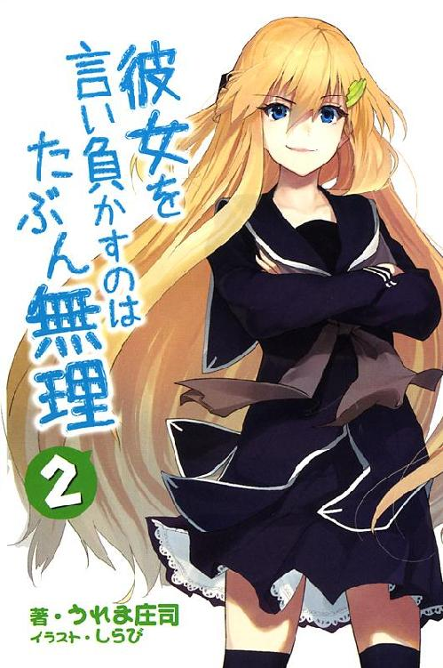
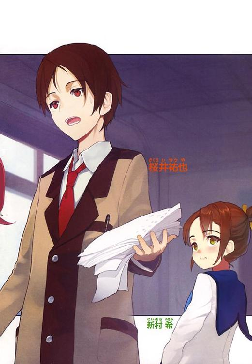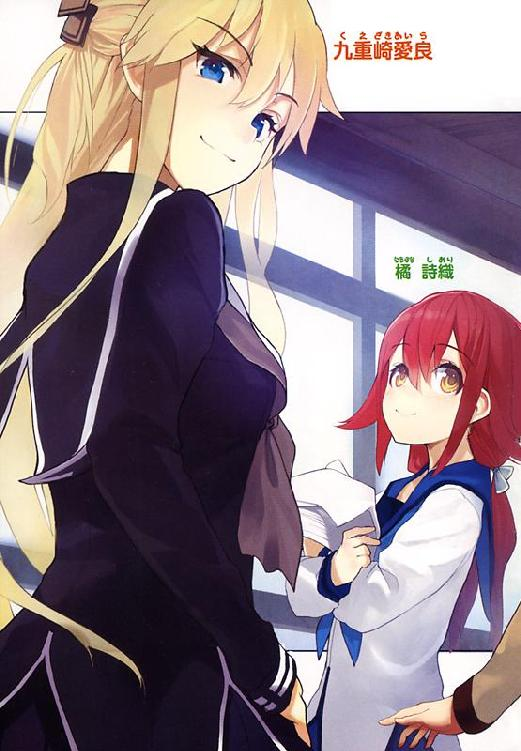
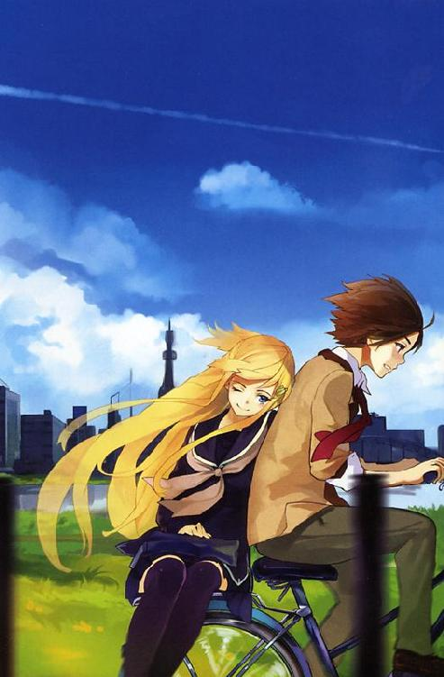
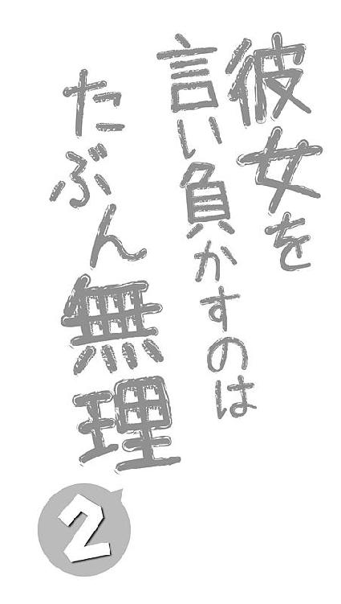
彼女を言い負かすのはたぶん無理 ２ もくじ
これまでのあらすじ
桜井祐也の高校生活は、オリーブオイルのように透き通った金髪をもつ少女・九重崎愛良との出会いによって激変した。当初は「歴史に悪名を残すようなディベートをするのが夢」と語るアイラに振り回される桜井だったが、徐々にディベートの魅力に惹かれ始める。やがて二人は体育館でのゲリラ・ディベートで戦う羽目になるが、激戦を経て、逆に心の距離を縮めるのだった。
人生って退屈よね。
映画のような派手なアクションシーンなんて、現実では見たことないもの。
アフガン帰りの高校生がいきなり同じクラスに転校してくるなんてありえないし、怪しい生き物が「魔法少女になってよ！」と詐欺まがいの契約を迫ってくることもない。アタシだったら、あの白い悪魔が絶滅しますように、って願うのに。
でも当然よね。
そんな非日常が現実に起こったら、毎日を楽しむどころじゃなくなるもの。
毎日が平凡だからこそ、こうして今日も日本は平和なんだし、学校にも通える。ぜいたくはいけないわ。
でもね。
それじゃやっぱり、つまらないのよ。
サンタクロースはいなくても、超能力者はいてほしいじゃない。悪の組織と正義の味方が人知れずに戦っていてほしいし、たまには不可思議な出来事も起こってほしい。三日に一度くらいは校舎も爆発すればいいのに。空気読みなさいよ。
そうやって、ああ今日は楽しかったなあって、毎日思えたのなら、それはとても幸せっていえるでしょう。
もちろんそんな毎日なんかないってわかってるわよ。
今日は楽しいといいな。明日は面白いといいな。そう思うだけでなにもしなかったら、現実はなにも変わらないもの。
アタシたちはなんのために生まれてきたのかしら。幸せになるためでしょう。つまらなかったら人生もったいないじゃない。
昨日がつまらなかったら、今日を面白くすればいい。今日もつまらなかったら、明日はもっと面白くすればいい。今日を二倍も三倍も楽しく過ごせたのなら、それはつまらなかった昨日を取り返したのと同じでしょ。
何年もガマンしたんだもの。その分を取り戻すためだったら、ちょっと暴れるくらいしかたないわよね。
全身がゾクゾクするような体験をして、ああ楽しいなあって心の底から思ってこそ、今日を生きたかいがあったってものじゃない。
人の言うことばかり聞いて、自分のしたいことをなにひとつできないまま部屋の奥に閉じこもってばかりの、人形みたいな生活はもう二度と送りたくないの。
アタシは親のためでもなければ、九重崎家のために生まれてきたわけでもない。アタシは、他の誰でもないアタシのために生まれてきたのよ。
誰にも邪魔なんてさせないわ。
「まったく、やってらんねーぜ！」
桜井の目の前で、郡山が怒りを爆発させていた。
「これで三日連続だぜ！ 信じられねえよ増岡のやつ！」
朝からずっとこの調子だった。桜井は首だけでうなずいておく。こういうときは適当に話を合わせておくのが一番だ。
「そうか、それはすごいな」
「練習のときに男女を分けろとか言うんだぜ!? しかも顧問でもないくせに勝手によ！ なあどう思うよ!?」
「そうか、それはすごいな」
「そもそも高嶺先輩に会いたいから朝練に参加してるんだ。男女別にしたら行くわけないだろ？」
「そうか、それはすごいな」
なぜか郡山が押し黙り、ぼそりとつぶやいた。
「......俺、この学校が終わったら増岡と結婚するんだ......」
「そうか、それは気持ち悪いな。二度と話しかけないでくれ」
「やっぱり人の話聞いてるんじゃねえか！」
高嶺先輩というのは、郡山が所属するソフトテニス部の先輩だ。校内でも一、二を争うほどかわいいらしく、非公式のファンクラブまである。
郡山はその高嶺先輩に近づきたいがためにソフトテニス部に入ったのだが、進展はまるでないらしい。アホだからしかたがないのだが。
郡山のアホさを哀れんでいると、ポケットの携帯がメールの着信を告げた。
発信者は九重崎愛良。今すぐ旧校舎の空き教室に来てね、と書かれていた。
今日の昼休みディベートは休みである。部活関係の呼び出しではないだろう。
昼休みとはいえ、旧校舎に人は少ない。美術室などのいくつかの教室をのぞいては、ほとんどが使われていないからだ。そのためカップルなどがこっそりと会うのに使われていたりするらしい。
そんな場所に今すぐ来てほしいと、アイラが言っているのだ。携帯を握りしめたまま、思わずつぶやいてしまった。
「罠だな」
あのアイラがまともな用事で呼び出すわけがない。
郡山が、なんのことかと聞きたそうな目を向けてきた。
「悪い、ちょっと用ができた」
罠だと確信していても、無視するわけにはいかないのが男の辛いところだ。
郡山がうらやましそうにため息をつく。
「なんだ、ディベート部の先輩からか？」
「そんなところだ」
郡山はもう一度、重く長いため息をついた。
「いいよなあ桜井は。あんなに美人の先輩と付き合ってるんだから」
郡山の言葉にドキリとしてしまう。内心の動揺を押し殺して答えた。
「まあな。うらやましいだろ」
体育館に乗り込んでディベートを行ったのは、もう一週間も前のことだ。あのときの騒ぎは学校中の噂となっていた。
しかし、人から人へと噂が伝わるたびに内容は変わっていき、桜井とアイラが体育館を占拠しただとか、全校生徒の前でプロポーズをしただとか、全然別の話になっていた。郡山もその噂を聞いたのだろう。
悔しがる郡山をおいて、桜井は旧校舎へと向かった。
まだ昼休みも半分をまわったところだから、時間はたくさんある。新校舎と旧校舎をつなぐ渡り廊下を、しかし桜井は早足で進んでいた。
罠だと確信していても向かってしまうのは、断る勇気がないからだ。
でもそれだけではない。
旧校舎はカップルがこっそりと会うのに使われているが、告白の場所として選ばれることも多い。旧校舎裏の木の下だと、告白の成功率が上がるといった噂は桜井でさえ聞いたことがあった。
もしかしたら、本当にもしかしたら、という思いがある。
こんなところに呼び出すからには、それなりの理由があるのではないだろうか。
あのアイラでさえ、ジンクスを信じたくなるのではないだろうか。
指示された三階の空き教室にたどり着いた。扉に手をかけると、かかっているはずの鍵があいている。そのまま開いて中に入った。
教室の大きさは新校舎と同じだった。整然と並べられた机に、きれいに磨き上げられた黒板。電気の消えた薄暗い空間には、日の光だけが差し込んでいる。窓の外から聞こえるのは、遠く離れた生徒たちの歓声だ。
昼休みだというのにどことなく寂しい空き教室の中央で、ひとりの上級生が机に腰掛けていた。
「意外と早かったわね桜井クン」
九重崎愛良が密やかに笑う。
オリーブオイルのように透き通った金色の髪と、学校指定を無視した黒いセーラー服。薄い光を背中に浴びながら、ダークブルーの瞳でまっすぐに桜井を見ていた。
美人すぎる、という言葉でさえ足りないほどの美しい顔を、誘惑するように妖しく歪めていた。
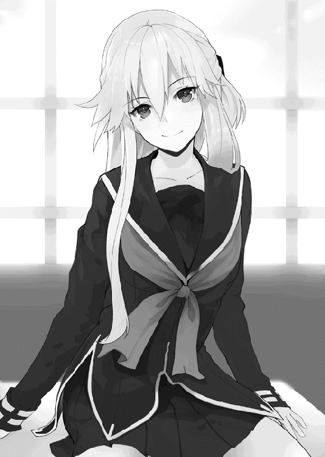
「そんなに急いで来てくれるなんて、なにをキタイしていたの？」
出会ったばかりならともかく、今の桜井にこの程度の牽制は通用しない。
「早く来いって言ったのは先輩ですよ。いったいなんの用ですか」
「用なんかないわよ」
桜井の言葉をさえぎる形でアイラが言った。
「桜井クンの顔が見たかっただけ。それとも用がなかったら、桜井クンに会いたいって思うのもいけないの？」
つぶやく声は小さくて、だけど口元はかすかな笑みを浮かべている。
「そんなことはないですけど......」
警戒しながら答えると、アイラが目を伏せた。
「アタシのこと、信じてくれないのね......」
「だって、そんなの今さら――」
「じゃあ信じさせてあげる」
一転して強い口調を響かせると、机を飛び降りて桜井へと近づいた。逃げるひまも与えずに桜井の目の前に迫る。
思わず下がった桜井は、すぐに背中を壁につけてしまった。
アイラが小悪魔のように、妖しくて魅力的な表情を形作る。
「ねえ、ほら、二人きりなんだよ......？」
薄暗くて、他に誰もいない、二人だけの教室。
アイラがゆっくりと顔を近づける。わずかにあった余裕なんて、もうとっくに吹き飛んでいた。
「そんなに緊張しないで。アタシと桜井クンの仲じゃない」
「......先輩こそ、なんでそんなに平気なんですか......」
こんな状況で落ち着いているほうがどうかしている。アイラがクスリとつぶやいた。
「アタシだってドキドキしてるよ。でもね、もっとドキドキしたいの。全身をゾクゾクさせたいの」
「も、もっと......？」
アイラの顔はもう目の前にある。二人のあいだには、もう指一本分のすきまも残されていない。
「桜井クンはどうなの？ ドキドキしてないの？」
しているに決まっている。鼓動が激しく打ち鳴らされて、いつ倒れてもおかしくない。
アイラのパッチリと開いた目が、のぞき込むように桜井を見た。瑞々しく膨らんだ唇が目の前にある。
ちょうど一週間前の柔らかな感触を思い出してしまい、桜井は顔が赤くなるのを自覚した。
「あ、あの......」
カラカラになったのどでなんとか声を絞り出そうとする。
アイラが妖艶に微笑み、指先でそっと自分の唇をなでた。
「桜井クンったら、さっきからアタシの唇ばかり見てる」
「えっ!? いえ、その――！」
「ねえ、キス、したいの？」
密やかで、ささやかな、甘い声。
ふっくらとした唇を艶めかしく動かして、小さく問いかけた。
「そんなに緊張しないで。もっと素直になっていいのに」
「す、すいません......」
情けなくも謝ってしまう。アイラが微笑む。
「いいのよ。それが桜井クンのいいところだもの」
アイラのなめらかな指先が桜井のあごにふれた。そのまま滑るように頬をなで、まぶたにふれた指でそっと瞳を閉じさせる。
暗くなった視界の中で、アイラのかすかな息づかいが感じられた。
吐息が唇をなでる。少しずつ距離が縮まっていくのがわかる。心臓が破裂しそうなほどに高鳴り、一秒が一時間にも感じられる。
やがて、ふわり、と。柔らかな感触が押しつけられた。
唇全体を包むような温かい弾力。甘い蜜が舌の先にまで流れてきた。
「ねえ、桜井クン。口開けて？」
アイラの声が聞こえる。どこか遠くから響いてくるみたいだった。
桜井の意識はもうまともに働いていなかった。言われるままに口を開く。わずかなすきまをこじ開けるように、ぬるり、と甘く柔らかなものが滑り込んできた。
わずかに残っていた意識も、全身の感覚も、すべてが粉々となって腰砕けになった。体中が震えて、頭の芯が熱くなる。
柔らかな感触がさらに深く滑り込んできた。桜井の舌をやさしく包み、口の中を甘い蜜で満たしていく。ぬめり気のある液体が口の端からあふれ出し、粘ついた音を響かせた。
理性が蕩けていく。甘い香りに脳髄が痺れていく。もうなにも考えられなかった。絡みつく感覚にすべてを奪われていた。残っているのは本能だけだった。
口の中で桜井も舌を伸ばした。丸く柔らかな感触をからめとる。
「ふふっ」
アイラの声が心地よく響いた。
「もう、桜井クンったら......激しいよ......」
恥じらいと、うれしさと、恍惚の入り混じった甘美な声が聞こえた。
..................。
アイラの声が、聞こえた？
慌ててアイラから離れる。目を開くと、甘い感触が口の中からこぼれ落ちた。
「マシュマロー!? 表面がしっとりと溶けたマシュマロー!?」
目の前でアイラがクスクスと笑みをこぼしている。
「ねえ、ドキドキしてくれた？ それともゾクゾクしてくれた？」
「ドキドキもなにも！ こ、こん、こんな――！」
声が震えて言葉にならない。溶けたマシュマロの甘い蜜を乱暴にぬぐい取った。
アイラは楽しそうに目を細めたまま、ニヤニヤと口元を歪めている。
要するに、アイラはやはりアイラのままだった。
郡山には付き合っていると思われていたが、実際はこんなものだ。
体育館でのディベートのあとで、なにかが変わったのかといえば、なにも変わっていない。
ディベート部はいつも通りあちこちで活動し、アイラは自由で小悪魔めいている。桜井をからかって楽しむ態度に、特別な感情は見られない。
それが嫌かと聞かれれば、桜井としては決して嫌ではない。むしろうれしいといえるだろう。
なのに、なぜだか、心の中に形容できない痛みが走っていた。アイラの変わることのない態度が、桜井にとっては耐え難いものに感じられた。
「あの、用がないのなら、これで失礼します」
小さな声が固く響く。アイラに背を向けて、桜井は教室の出口に向かった。
「あ、ちょっと待って」
アイラの手が桜井の手をつかんで引き止める。
まだなにかあるのか。
怒りよりもむなしさが胸に募る。
桜井の葛藤など気がつかないように、アイラが言葉を響かせた。
「少しだけ、もう少しだけでいいから、このまま......」
後ろにいるアイラの顔は見えないが、響く声は小さくて、すがるような弱さを含んでいた。
桜井は声も出せないままに立ち尽くす。
――もしかしたら、本当にもしかしたら、先輩は......。
心臓の音が大きくなっていく。耳の中にまでこだまして、なにも聞こえなくなる。意識のすみに、かろうじて誰かの足音が聞こえた。外に誰かいるのかもしれない。
「......うん、もういいよ」
アイラが手を離す。
振り返ると、一歩下がった位置で小さく手を振っていた。
「もう大丈夫だから」
もういい、という言葉の通りなのだろう。
本当ならば、ここでなにかを言うべきだったのかもしれない。でも桜井は、こんなときにかける言葉なんて知らなかった。無言のままに教室の扉を開ける。
空き教室を出てすぐに、廊下を歩く人影に気がついた。相手も気がついたらしく、神経質そうな視線を向けてきた。
「桜井祐也か。貴様がここにいるということは、九重崎も近くにいるということだな」
教師の増岡が偉そうな口調で問いかける。
「九重崎はどこにいる。隠すとお前のためにならんぞ。正直に話せ」
「......いえ、知りませんが」
そう答える桜井の目の前、増岡の後ろに、アイラが音もなく現れた。教室の出入り口はふたつある。桜井が出たのとは反対側の出口を使ったのだろう。
アイラが立てた指を口の前に当てて、静かに、とジェスチャーで示す。それから口の動きだけで「ゴメンね」と謝ると、そのまま無音で廊下を駆けていった。
「あの、先輩がなにかしたんですか？」
一応、注意をそらすために話しかける。
増岡は醜悪に顔を歪ませて視線をそらした。
「貴様には関係ない」
苦々しい声を響かせる。
桜井は心の中だけで嘆息した。どうせまたアイラにバカにされて怒っているのだろう。どんな内容なのか、桜井も無理に知りたいとは思わなかった。
ふと廊下の奥に目を向けると、アイラがまだ残っていて、制服のポケットを指差していた。
中を見ろ、ということなのかもしれない。
自分のポケットに手を入れてみると、なんだかふさふさとした感触があった。
嫌な予感を胸に秘めて、視線だけを下に向ける。
いつのまに入れたのか、誰かのカツラがねじ込まれていた。
目をあげて増岡を見る。
......。なんだかズレている気がする。
いったいなにをどうしたらこんな状況になるのか知りたくもなかったが、つまりアイラは、増岡の注意をそらすために桜井を呼んだのだろう。ここは三階だから、さすがのアイラも窓から飛び降りるわけにはいかなかったに違いない。
怒る気にはなれなかった。
増岡は自分のクラスの担任でもあるから、粘着質な性格は十分知っている。おとりくらい、頼まれれば喜んで引き受けるだろう。
でもそうしないのがアイラなのだ。
普通じゃつまらない。せっかくだからもっとドキドキしたい。
そう考えるアイラの気持ちは、桜井には理解できない。そういう性格である、と知っているだけだ。
それだけのことなのに、桜井の心の中は苦々しいもので満たされていた。
「あの、そろそろ教室に戻らないといけないので」
さっさと離れようと背を向ける。そこに増岡の声が響いた。
「貴様、まだディベート部を続けるつもりか？」
「......ええ、そうですけど」
振り返らないまま答える。
「お前は一応俺のクラスの生徒だ。だからもう一度だけチャンスをやろう。今すぐにディベート部を辞めろ。そうすれば許してやる。どうだ、悪くないだろう」
増岡が言葉に笑みを含ませる。
恩着せがましい自分の言葉を疑う様子もない。本当に本心から、桜井にとって悪くない提案だと思っているのだろう。
まったく、本当にこの人は――
「――あいかわらず考えることがせこいな」
心の中のつぶやきが、そのまま言葉となって外に出た。
「なんだと......？」
増岡が険しくなった声を響かせる。
「てめえ、今なんて言った？」
「いえ、別になにも」
言葉を濁して立ち去ろうとするが、増岡の手が肩をつかんで離さなかった。
「九重崎の下にいるからって調子にのってんじゃねえぞ。てめえごとき、俺にかかれば――」
なにか脅し文句のようなものをつぶやいている。桜井はうんざりしながら聞き流した。
増岡は自分の言葉の意味に気がついていないのだろう。
このままではいつまでも解放されそうにない。肩をつかむ手を強引に払ってもいいのだが、そうなれば教師に暴力を振るったとかなんとか難癖をつけてくるに決まっている。
桜井は大きく息を吸って、頭を切り替えた。
いくらムカツクやつだろうと、増岡は教師だ。だから遠慮していたのだが、もうガマンするのはやめることにした。後ろを振り返り、ディベートをするときのような鋭い言葉を浴びせかける。
「どうせ先輩には勝てないから、弱そうな俺を言いくるめようとか、そんな考えだろ？ それがせこいってんだよ」
部活動には最低人数がある。具体的な人数は桜井も知らないが、五人とか三人とか、そんなところだろう。アイラと直接戦っても勝ち目がないから、ディベート部そのものに狙いを定めてきたというわけだ。
「だいたい『九重崎の下につくと調子に乗る』なんて考えてる時点でもう負けてんだよ。それって『九重崎の下にいれば自分は手が出せなくなる』って言ってるようなものだろ？ あんた、心の中じゃ先輩に勝てないってあきらめてんだ」
増岡が血走った目を剥いていた。今にも怒鳴り出しそうな表情で全身を震わせている。
桜井は背中を向けて、今度こそ自分の教室に向かった。
ずいぶん離れたころになって、ようやく怒鳴り声が響いた。日本語なのかも疑わしい発音で「覚えてろ」だとか「この俺を怒らせたな」とかわめいている。
それってやられ役が吐き捨てる言葉なんだけどなあとか思いながら、桜井は旧校舎の階段を下りていった。
どんなにカッコよく去ったところで、増岡がクラスの担任である事実は変わらない。
相変わらず長い演説が、今日は一段と冗長になっていた。なにしろついさっき桜井に言い負かされたばかりだ。反撃のつもりなのだろう。
堪え忍ぶようなホームルームを終えて教室を出ると、廊下の壁にもたれるようにして小柄な女の子が立っていた。ぞろぞろとあふれ出す生徒たちの中から桜井を見つけ出すと、わずかに顔をほころばせる。
「お疲れ様です桜井君」
橘詩織がひかえめに声をかけてきた。
堅苦しいあいさつに思わず苦笑してしまう。
「まあ、疲れたのは確かだけどな」
今日もホームルームを終えたのは学年で一番最後だ。廊下を見ても、桜井たちのクラス以外に残っている生徒はほとんどいない。
「それで、今日はどうしたんだ。なにか用でもあるのか？」
たずねると、橘は目を伏せるように下を向いた。
「もしかして、お邪魔でしたか？」
「そういうわけじゃないんだが、待ってるのも大変なんじゃないかって思ってな。特にうちはいつも長いから」
慌てて付け加えると、橘はゆるやかに首を振った。
「それなら大丈夫です。それに、こうして待っているのも友達なら当然だと、麻衣ちゃんも言っていましたので......」
麻衣ちゃん、と口にするとき、橘はわずかに気恥ずかしそうな笑みをみせた。
「そうよ、友達なんだったらもっと堂々としてないと」
橘のとなりで快活な笑顔が弾けた。
橘と同じく小柄な体型だが、性格は正反対で、丸っこい顔でころころとよく笑う。わかりやすく表現するならば、ショートカットのよく似合う元気少女だ。名前は芝原麻衣子。橘と同じクラスで、最近できた二人目の友達だ。
ちなみに、関係ないが重要なことを付け加えておくと、出るべきところは出ている。郡山の言葉を借りるならば「ロリで巨乳。すばらしい。逸材だ」ということらしい。こればっかりは桜井も全面的に同意した。
「桜井君も、こんなにかわいい女の子が二人も待っててくれてるんだから、他に言うことがあるんじゃない」
橘を抱き寄せながら、桜井に向けて笑顔を浮かべてみせる。
となりの橘が慌てたように芝原のほうを向いていた。かわいいと言われて照れているのだろう。
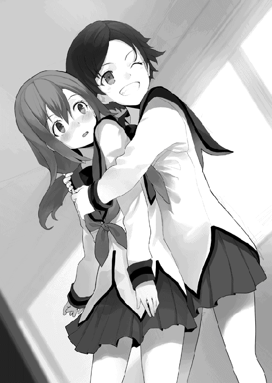
身近な女子を思い浮かべるとアイラとか新村とか気の強い女の子しか浮かんでこない桜井にとっては、とても新鮮で癒される光景だ。やっぱり女の子はこうでないとなあ、なんて青春を味わいつつ、笑顔の芝原に向けて言ってやった。
「自分でかわいいとか言うやつはちょっとなあ」
芝原の顔がムッとふくれる。
「はいはい、どうせ私はかわいくないですよ。桜井君は詩織ちゃんのほうが好きなんでしょ」
橘の背を押してズイッと桜井に突き出してくる。
「え、ええっ!? わ、わた、私......!?」
押し出された橘が慌てている。目の前の桜井に気がつくと、顔を赤くして完全にうつむいてしまった。
「うーん、かわいいわー詩織ちゃん」
背中で芝原がニヤニヤしている。
内気な橘と比べると、芝原は明るすぎるともいえたが、けっこう仲はいいようだった。こうして一緒にいるところをよく見かける。一緒にいるというよりは、芝原が橘で遊んでいるようにも見えるが。
真っ赤な橘は下を向いたままだ。
その顔がわずかにしかめられているのにふと気がついた。
「どうした橘、疲れてるのか？ 芝原がウザイなら、はっきり言ったほうがいいぞ」
「そ、そんなことないです......っ」
橘が首を振って否定する。
「そうよ、そんなことないわよ」
芝原も不機嫌に声を響かせた。桜井はあきれてしまう。
「だからそういうことは自分で言うなよ」
「なによ、本当のことなんだからいいじゃない」
「どうだかな。この際だから橘、言いたいことははっきり言ったほうがいいぞ。本人に直接言うのが怖いなら、かわりに俺が伝えてやる」
「えっ!? あ、あの、私......」
橘が驚いたように桜井を見つめ、それから芝原に目を向けた。ここぞとばかりに芝原が笑顔を浮かべる。
「私は詩織ちゃんが大好きよ。詩織ちゃんもそうでしょ？」
ずいっ、と詰め寄るように顔を近づける。もはや脅迫と変わらない。
気圧された橘が一歩後ろへと下がり、赤い顔をカバンで隠した。
「あの、その......私......」
もごもごと声にならない声でつぶやく。抱えたカバンからうるんだ目だけをのぞかせて、芝原に向けて言った。
「わ、私も......麻衣ちゃんが、大好き......です............」
消え入りそうな言葉を響かせて、そのままうつむいてしまう。
聞いている桜井も恥ずかしくなるくらいの初々しい様子だが、言われた芝原はもっと恥ずかしいようだった。
「あーっ、もう！」
赤くなった自分の顔をごまかすようにして叫び、顔を隠す橘をカバンごと抱きしめた。
「かわいすぎるなあ詩織ちゃんは！ 私を嫁にしろ！」
「え、ええっ!?」
そのまま押し倒すんじゃないかという勢いの芝原につかまれたまま、橘がうろたえている。
「......。橘、こう言うのはなんだが、友達は選んだほうがいいぞ？」
「えっと、あの......」
困ったような声を出しながらも、橘が小さな笑みをのぞかせた。
「はい......。こういうのに、慣れていないだけですので......」
そう告げる橘の表情にウソはないのだろうが、首をわずかに傾けた笑みは、桜井にはやはり疲れているように見えた。
橘を解放した芝原が「ふー、これで今日も一日がんばれるわ」と悦に入った表情を浮かべたあと、急に真面目な顔でささやいた。
「あのね、昼休みに増岡が来たのよ」
それだけで理解した。
「あの野郎――！」
アイラにも桜井にも勝てないとわかると、今度は一番弱そうな橘を狙ったのだろう。
「どこまでゲスなんだ......！」
怒りのままに、足が職員室へと向かった。まだホームルームが終わったばかりだ。走れば廊下の途中で追いつけるかもしれない。
駆け出そうとした桜井の前で、橘がビクリと肩を震わせた。怯えた目で桜井を見つめている。
怒りが一瞬にして冷めた。
立ち止まった桜井の足を芝原が蹴り飛ばす。
「ちょっと、あんたまで詩織ちゃんを怖がらせてどうするのよ」
「あ、ああ。悪い橘」
なんでも考えなしに動いてしまうのは桜井の悪い癖だ。謝る桜井に対して、橘はふるふると頭を振る。
「いえ、桜井君が悪いわけではありませんので......」
「それじゃ、私はそろそろ行くね」
芝原が床に置かれていたカバンを持ち上げる。
その様子はなんとなく急いでいるようにも見えた。
「部活でもあるのか？」
「うちは家族が多いからやることも多くてね。弟たちの世話もしないといけないし」
用があるのなら先に帰ればよかったのに、橘を一人で置いていくこともできないから、一緒に残っていたのだろう。
家でもきっといいお姉さんなのかもしれない。
色々とアレな女の子ではあるが、いい友達ができて良かったと、なんだか親になったような気持ちになってしまう。
「それじゃ詩織ちゃんをよろしくね」
「......よろしくって、なにがだ？」
本当にわからなかったから聞いたのだが、芝原が今にも蹴り飛ばしそうな目でにらみつけてきた。
「詩織ちゃんを送っていってあげなさいって言ってるの......！」
「あ、ああ。そういうことか」
昼休みに増岡が来たばかりだ。また橘を狙う可能性は十分にあるだろう。そのために桜井を待っていたのかもしれない。
「そういうことなら任せとけ」
胸を張って請け負う。芝原はジトッとした視線のままだった。
なにが不満なのだろうかと内心で首をひねっていたが、結局答えはないまま、橘に笑顔を向けた。
「それじゃ、詩織ちゃん、がんばってね」
「は、はい」
橘がなんとかうなずく。
がんばるとはディベートのことだろうか。今日はそんなに気合いを入れるような日だっただろうかと疑問に思ったが、口に出すとまた怒られそうだったので黙っていた。
「とりあえず、俺たちもそろそろ行くか。あんまり遅れるとまた先輩に怒られるからな」
橘がかすかに頬を染めて、小さくうなずいた。
二人並んで廊下を歩く。
桜井たちの通う縦浜高校は、設立時からある旧校舎の他に、最近新しく校舎を新築したばかりである。しかし生徒数を増員するわけでもないため、校舎の割に生徒数は少なくなっていた。
不必要に広い廊下を、桜井と橘の二人だけが歩く。
橘は自分から話をするタイプではないし、桜井としても共通の話題は多くない。自然と口数が少なくなるのがいつものことだった。
「あの......」
橘が小さく声をこぼす。
「申し訳ありません。私なんかのために付き合わせてしまって」
「いいよ、気にしなくても。どうせ一緒に部活に行くんだし。それに増岡の野郎には俺もムカついてんだ。また来たら俺が追い払ってやるから心配すんな」
「え、あ......」
橘の顔がみるみるうちに赤くなっていく。
「あ、ありがとうございます......」
言葉数は少なかったが、これでも出会ったころに比べたらだいぶ話せるようになってきたと思う。
たまにぽつぽつと橘が好きな本の話をしたり、桜井が好きな音楽の話をしたり、そうやって少しずつ慣れていけばいい。橘にとってはちょうどいい訓練になるだろう。
それに、橘だって十分にかわいい女の子なのだ。一緒に歩いてうれしくならないわけがない。桜井にも断る理由はなかった。
「そういえば、麻衣ちゃんって呼んでるんだな」
「えっ？」
橘が振り向いたあと、恥ずかしそうに視線をそらした。
「その、麻衣ちゃんがそう呼んでほしいと言うので」
答えながらも、口元にはかすかな笑みが浮かんでいる。その意味くらいなら桜井にだってわかった。
「順調に友達ができているようでなによりだ」
「でも、まだクラスのお友達は麻衣ちゃんだけです」
そうつぶやく声は、なんだか落ち込んでいるようにも聞こえる。
「あんまり難しく考えるなよ。友達なんてそんなものだろ」
橘は困ったように笑うだけだった。
「そうなのでしょうか......」
「それとも、俺も詩織ちゃんって呼んだほうがいいか？」
「えっ？」
橘が驚いたように声を上げる。それから再び顔を赤くしていった。
「い、いいですっ。桜井君は今のままで、もう十分ですので......」
声がかすれるように消えていった。
「俺だってクラスの知り合い全員が友達かっていったら、それはなにか違う気がするしな。よく話すのは郡山と新村くらいだ。そういう意味じゃ、クラスの友達は二人だけともいえる。橘とそんなに変わらないな」
そんなことを言っていると知られたら、今度はクラスのみんなから怒られるかもしれないが。
「とにかく、気にするなってことだ」
「は、はい。ありがとうございます」
そんなふうに改まって礼を言われると、桜井としてもなんだか照れてしまう。
桜井は橘になにかをしているわけではない。背中を少し支えているだけだ。友達がほしいと告白したのも、体育館のディベートでマイクを手にしたのも、全部橘自身の行動である。
桜井にできることなんて、背中を支えることと、見守ること。それくらいだ。
「そういえば、桜井君は、その......」
橘がなにかをたずねようと、必死に口を動かしている。
もごもごと何度かためらったあと、視線を桜井の胸元あたりに当てて問いかけた。
「アイラ様と、お付き合いしているのですか......？」
同じことを朝にも言われたばかりである。桜井は苦笑を隠せなかった。
「どうなんだろうな」
はぐらかすように答えると、橘は意外そうな顔をした。
「違うのですか？ お二人は、もうてっきり恋人同士なのかと。その、すごく......お似合いだと思いますし」
「いや、それはないだろう」
自分で言うのも悲しくなる話だが、自分が平凡な男であることくらい自分が一番よくわかっている。
それでなくとも、アイラと釣り合う男なんてめったにいないだろう。
顔だけならアイラの兄である勇人なのかもしれないが、あの二人は兄妹だし、なにより最悪に仲が悪い。
頭の回転では、アイラに匹敵する生徒なんて、この学校に何人いるのだろうか。
「先輩と釣り合う男なんて、想像できないな」
きっと白馬にでも乗った王子様に違いない。しかも、アイラのむちゃくちゃな行動を許せる寛容な心まで持ち合わせた、パーフェクトな王子様だ。
「少なくとも、俺なんかが釣り合うとは思えないな」
「そんなことないと思います」
橘の声がやけに強く響いた。
「桜井君は優しいですし、頭も良くて、それにすごく――」
言葉が途中で途切れた。慌てたようにうつむき、抱えたカバンの中に埋めるようにして顔を隠してしまう。
「その......ごめんなさい」
「いや、謝ることじゃないだろ」
橘なりに元気づけようとしてくれたのだろう。礼を言うのは桜井のほうだった。
「ありがとうな」
そう言うと、カバンのあいだから目だけを上げて、小さく頭を動かした。
「――こちらこそ、ありがとうございます」
そう告げる声は、かすかに微笑んでいるようだった。
となりを歩きながら、桜井は微笑ましい気持ちになってしまう。桜井の周りはアイラに新村、それに最近は芝原も加わったが、気の強い女の子ばかりなのだ。こういうかわいらしい反応に欠けている。
特にアイラには見習ってほしいものだと強く願いたい気持ちだった。あの人はもう少し恥じらいとか初々しさとか奥ゆかしさとか女の子らしさとかを身につけるべきだ。
せめてあと少し、ほんのわずか、橘の百分の一でもいいのでおしとやかさが加わってくれればなあ。なんてしみじみ思ってしまう。だいたい今日の昼休みのことだって――
「......桜井君？」
橘の声で我に返る。
「ああ、悪い。ぼーっとしててな」
「大丈夫ですか？ やっぱり私なんかと一緒では――」
「だからそんなんじゃねえって」
すぐに落ち込んでしまう橘に強く言い聞かせる。橘に足りないのは、自分自身に対する自信なのだ。
「橘は十分にかわいいんだ。一緒にいて嫌なはずないだろ。今も、橘の反応がかわいいから、つい見とれて――」
橘が足を止めて、まん丸になった目で桜井を見上げた。
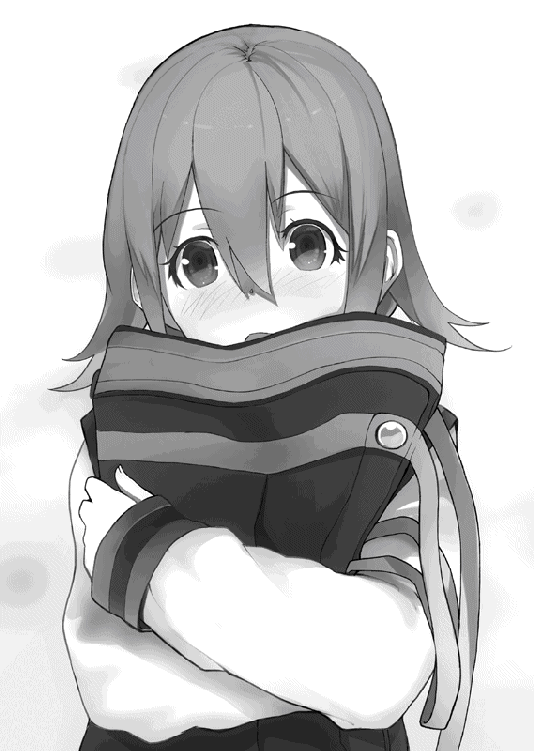
「..................あ」
橘に自信を持たせようと考えていたら、思ったことがそのまま言葉になってしまった。
「い、いや、今のはそういう意味じゃなくって、あ、いやもちろん橘はかわいくないとかじゃなくて、むしろかわいいんだけど、......ってだからそうじゃなくて......！」
慌てれば慌てるほど口がもつれ、言葉がうまく出てこない。
自分は本当になにを言っているんだろう。
恥ずかしさのあまりに、口をつぐんで視線をそらしてしまう。
橘にいたっては、うつむきすぎて後頭部まで見えている。
お互い立ち止まったまま、気まずい沈黙が流れていた。
「ま、まあ、その、なんだ。......ごめん」
謝ってどうするのだと思ったが、他に言葉が思いつかない。
橘はゆっくりと首を振る。ゆれる髪の中で、耳まで赤くなっているのが見えた。
「......いえ、ありがとう、ございます......」
「と、とにかく、急ごうか。遅刻すると遅れちまうからな」
遅刻したら遅れるのは当たり前である。
真っ白な頭のまま、二人はぎくしゃくと屋上へ急いだ。
新校舎の中央階段をまっすぐ上がっていくと、屋上に出る扉がある。普段は出入りができないように鍵がかけられているのだが、取っ手をつかむとすでに開けられていた。
旧校舎と違い、新校舎の屋上はフェンスで囲まれている。広い屋上の中央で、アイラと本郷がすでに二人を待っていた。
「遅いじゃない桜井クン。いくら橘ちゃんがかわいいからって、独り占めは許さないわよ」
「......。独り占めなんてしてないですよ」
芝原もいたしな、と心の中で言い訳をする。内心では今も鼓動が鳴りっぱなしだ。
桜井の横では、橘が顔を赤くしたまま立っている。
アイラが口元を鋭くつり上げた。
「さあ、今日はアタシと桜井クンだったわね。ジャッジは橘ちゃんよ。よろしくね」
「あ、はい」
アイラから渡された箱を橘が受け取る。中には大量の紙が入っており、そこに書かれたテーマを今日の議題にするのが、ディベート部でのやり方だった。
新校舎の屋上はグラウンドの目の前である。
フェンスから見下ろしてみると、野球部が練習中だった。硬球を打つ音と、熱いかけ声が響き渡っている。屋上を見上げる余裕のある生徒はいなさそうだった。
目立たないのならそれが一番いい。若干の安堵と共に屋上へ目を戻す。
「なんだかうれしそうな顔をしているわね桜井クン」
にこやかな笑顔を向けるアイラの手にはいつもの拡声器、ではなく、一本のマイクが握られていた。
「あー、テストテスト。こちらディベート部よ。みんな聞こえるかしら」
アイラの決して大きくはない声が校舎中に響き渡った。校舎内や校庭など各地で反響し、二重三重の声となって屋上に響く。
「一応聞きますけど、これはいったい......？」
「ふふ。桜井クンはなんのために屋上を選んだと思ってるの？」
「......目立つからじゃないんですか」
アイラが他の理由で場所を決めたことなどなかったはずだ。
「ちがうわよ。ここなら放送室につながる配線を直接操作できるからに決まってるじゃない」
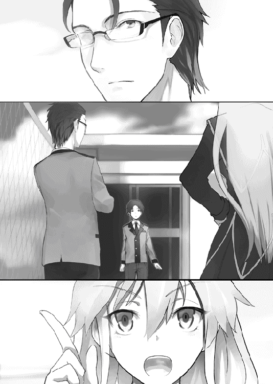
まったくもって才能の無駄使いである。
「うん、まあ、それでこそ先輩ですね」
どうやら王子様に必要なのは寛容さではなかったらしい。あきらめだ。
「さて、それじゃあそろそろ――」
アイラが不意に言葉を止め、屋上の端から校庭を見下ろした。やがて振り返ったその口元が妖しく歪められる。
「いいテーマを思いついたわ」
橘に預けていた箱を取り返すと、逆さまにひっくり返して紙を地面にばらまいた。
「たしかあったと思ったのよね」
つぶやきながら、紙に書かれた文字を一枚一枚確認していく。どうやらもうランダムに引こうという意識さえないらしい。風に飛ばされていく紙を橘が慌てて拾い集めていた。
校庭では今も生徒たちが、アイラがなにかを企てているとも知らずに練習にはげんでいる。自分たちが狙われているなんて想像もしてないのだろう。
縦浜高校は部活動の盛んな高校であり、野球部も例外ではない。甲子園に出場したこともある強豪校だ。
その強さに秘密なんてない。大切なのは普段からの練習だ。
朝練はもちろん、放課後も日が暮れるまでたっぷりと練習する。
文武両道といえば聞こえはいいが、実践できている生徒は少ないだろう。
疲れ切って授業中に居眠りする生徒は多いし、「俺は部活のために来てるから」と言って昼から登校してくるやつまでいる。
学校とは勉強をする場所なのか、部活をする場所なのか。
学校側は、あるいは教師としては、どこまでを認めるべきなのか。
試験一週間前は部活動が禁止となるが、一週間だけでいいのか。それではまるで、テスト前の一週間だけ勉強すればいいと言っているようには聞こえないか。そして実際に、多くの生徒はそう思っているのではないだろうか。
アイラの探しているテーマが、桜井にはなんとなく想像できた。
「あったあった、これよ」
嬉々とした表情で立ち上がると、マイクに向けて自らの嬌声を響かせた。
「スポーツ英才教育は子供の未来を奪う。是か否か」
学校中に静寂が満ちていった。アイラの声が静かな放課後に反響している。
つまりは教育を問うテーマなのだが、こうも堂々と言われると熱心に部活をしている生徒たちはどう思うのだろうか。とりわけグラウンドの静寂が耳に痛かった。
そんな葛藤など気づかないふりをしながらも絶対に気がついていて楽しんでいるのだろうアイラが、さらに言葉を続けた。
「じゃ、肯定側がアタシ。否定側が桜井クンでいいわね」
もちろん異論はない。というか、この状況で肯定側なんて絶対やりたくない。あしたからどんな顔でみんなと会えばいいのだろうか。
マイクを渡された橘が恐る恐る口を開いた。
「ええと、それでは本日のディベートを始めたいと思います。立論四分、反論、総括二分の各一回で行うショートスタイルです」
ここでひとつ注意点がある。
ショートスタイルは反論が一回のみであり、再反論は行わない。
理由は単純。二分では短すぎて、再反論と総括を同時に行うのは無理だからだ。
「肯定側はアイラ先輩。否定側は桜井君です。準備時間は五分ですが――」
「もちろんいらないわ。いいわよね？」
そう問いかけるアイラは、なにかをかみ殺すようにクツクツと笑っている。
なにかろくでもないことを思いついて今すぐにでも始めたいイタズラっ子の笑みだった。こうなってしまってはもう、アイラの口からテーマを聞くまでは、なにを考えているのかなんてわかるはずもない。
桜井は半ばあきらめてうなずいた。
「わかりました。それではディベートを始めたいと思います。肯定側の立論、時間は四分です。ではアイラ先輩、どうぞ」
アイラの手にはすでに二本目のマイクが握られていた。
「それじゃあ改めまして。ディベート部二年、副部長の九重崎愛良よ。下校中のみんなも、勉強中のみんなも、特に部活中のみんなにも、少しのあいだだけ、耳を傾けてもらえるとうれしいわ」
明るい声で呼びかけ、一転して鋭く問いかけた。
「さて、最近テレビなんかでも多くのスポーツ選手を見かけるようになったわよね。テニスやゴルフプレーヤー。野球選手やサッカー選手なんかも昔から多かったかしら。そんな一流の選手となるには、才能は当然として、それを伸ばすための努力が必要となるわ。いつから始めたのかは人によるでしょうけど、基本的には早ければ早いほど有利だわ。それがどのような結果を招いたのか知っているかしら。一流のテニスプレーヤーが何歳のころから練習を始めたのか、何人が知っているのかしら。
まだ立ち上がってまもない二、三歳のころから練習を始めているのよ」
その声は静かな迫力で校舎の中に満ちていった。
未だ続く静寂が単なる偶然か、それともアイラの言葉によるものなのか、屋上にいる桜井には計りしれない。
アイラが構築する言葉の世界に耳をすませるしかなかった。
「もちろん、まだ幼い子供が自発的に練習を始めるわけがないわ。親がさせているのよ。
自分の破れた夢を叶えさせるため、あるいは単に儲かるから。理由は色々あるでしょうけど、まだ自我も芽生えていないころからスポーツを教え込み、遊ぶ時間さえ奪う権利が、親にはあるのかしら。子供を育て、誤った道を歩めば正してあげるのが親の役目とはいえ、生まれてまもないころから人生を決めつけてしまっていいのかしら。
スポーツ選手として成功すればまだいいけれど、一流の選手となれるのはほんの一握り。生まれたころから練習を続け、遊ぶ時間も恋をする時間もすべてを犠牲にして青春を練習に捧げ、それでも自分は一流にはなれないのだと気づいてしまったとき、その人はいったいなにを思うのかしら」
その言葉が胸に痛いのは、桜井だからなのだろうか。
怪我により空虚な思いを抱えていたからわかるのだろうか。
きっと、そうではないのだろう。
理屈ではなく勘のようなもので、アイラもその喪失感を知っているのだと思い至った。
言葉の裏にひそんだ隠しきれない感情が、放たれる声に言いようのない迫力を与えているのだろう。
アイラの演説が続けられる。
「それはなにも架空の選手に限った話ではないわ。アタシたちはいったいなんのために生まれてきたのかしら。なにか意味のあることをしてこれたのかしら。
自分はこのために生まれてきたのだと、自信を持って答えられる人はきっと幸せね。皮肉じゃないわよ。本当に、心からうらやましいわ。でもそうじゃない人も多いはず。
アタシたちの時間は短い。高校の三年間なんてあっというまよ。無駄なことをしている時間なんてないわ。一瞬でも、一秒でも、今この瞬間を楽しまないと。
そのためにできることは、アタシにだってわからないわ。アタシたちは、アタシたちが信じることをするしかない。
でもね。やらなくていいこと、やってはいけないこともあるはずよ。それならばアタシにもいくつか心当たりがある。
だからアタシはこう言うわ」
そこで言葉を切った。
アイラの声が響いていた校舎内につかのまの静寂が訪れる。それは次の言葉を待ち望む、刺すような静寂だった。
張り詰める緊張感を楽しむようにアイラは目を閉じる。口元に浮かぶのは、きっと校内で聞いているだけの生徒には想像もつかないだろう、淫らでえげつない笑みだった。
「高校野球の女子マネージャーにドラッカーのマネジメントは不要である。是か否か」
「ちょっと待った――っ!?」
台無しだ！ せっかくの前振りが全部台無しだ！
アイラが目を細めて桜井を見る。
「どうしたの。相手の発言中には言葉を挟んではいけないのがディベートのルールでしょ」
「だからといっても許されることと許されないことがありますよ!?」
「そう？ 桜井クンがそう言うならしかたないわね」
意外にもアイラはあっさり引き下がった。
桜井はホッとする、はずがない。もう全力で嫌な予感しかしなかった。
「じゃあこう変えましょう。もしも貧乏学生がバフェットを学んでもどうせ無駄」
「断定!? ちゃんと役立ちますよ！ 売れてますよ！」
アイラは考え込み、はっとなにかを思い出したような表情で告げた。
「もしもパンクロッカーが仏門に入門したら――」
「最初ので！ 最初のでいいです！ 最初のでお願いします！」
叫ぶと、アイラがニッコリと笑顔を浮かべた。
「もう、桜井クンったら、はじめからそう言ってくれればいいのに」
まるで出来の悪い弟をいさめるような優しい口調で語りかける。
代案がひどすぎるんですよ、とは言わなかった。どうせ言っても聞きやしないからだ。
「さて、無事桜井クンも納得してくれたようだし、まずは定義からはじめましょうか。
まず野球部とは、高校の硬式野球部を指すわ。きっと甲子園とかを目指してるんでしょうね。公立私立は問わないけれど、強くもなく弱くもない中堅どころにしておくわ。普段からまったく練習をしてなくていつも一回戦負けなのに、実は甲子園クラスの選手が何人も入部していてちょっと練習をしただけですぐ勝てるようになるとか、普通に考えて入部しているはずのないマネジメントを専門的に勉強した生徒がいるとか、そういうことのない平均的で平凡な野球部とするわ」
いきなりやたらと細かい指定がついた。
桜井はもうハラハラとするしかない。
「マネージャーは、まあマネージャーよね。試合には参加せずに、裏方とか選手のサポートをする人よ。
そしてドラッカーのマネジメントだけど、本の指定はしないわ。ドラッカーの著作を通じてマネジメントについて学ぶ、としましょう。学んだ知識をマネージャーとしての仕事に応用するのよ。
――あ、そうそう」
思い出したようにアイラが付け加える。
「もしも似たような形式の小説があったとしても、今回のディベートとはなんの関係もないかもしれないことをここに明言しておくわ」
それは明言しているとは言えないんじゃないかなあ、と桜井は抵抗する気力をなくした意識の中で思った。
「特定の著作についての是非を問いたいのではないの。野球部のマネージャーにとってドラッカーのマネジメントは本当に有用なのか、それとも現実的にはまったくあり得ないただの創作なのか。それを徹底的に、真面目に、公正に、真摯なひたむきさで追求したいだけなのよ」
言葉の意味とはまったくあわないニッコニコの笑顔でアイラが続ける。
「さて、その上で『ドラッカーのマネジメントは不要である』と言い切っているのだから、今回のテーマはこう言い換えることができるわ。『高校野球のマネージャーは野球の勉強をするべきである』と」
アイラにしてはまともな正論だった。あくまで表面上は、であるが。
「もっとも、こんなテーマに議論の余地なんてないと思うけど。
だってそうでしょ。ドラッカーは経営学の神様で、それを学ぶのは高校野球部のマネージャーなのよ。そんな彼女がもしもドラッカーのマネジメントを学んだらどうなるか。答えなんてひとつじゃない。
負けるに決まっているわ」
言い切ってしまった。桜井はもうドキドキを通り越してビクビクが止まらない。
「そもそも経営学の知識で野球をしようなんて発想が夢物語なのよ。世の中なんでも思い通りにいくはずないわ。
ドラッカーの著作は人の生かし方や組織運営の方法を教えてくれるわ。でも、野球についてはどこにも書かれていないのよ。
真摯であること、専門家の意見を聞くこと、適材適所であること。そんなの、誰だって知っているわ。むしろ今まで知らなかったのなら、それは人として問題よね」
アイラが真摯であるかどうかについて大いに疑問があったし、専門家どころか誰の意見も聞かないじゃないかと桜井は思ったが、口には出さないでおいた。
「真摯な態度で練習に臨み、自分の仕事をこなす。そんなの当然じゃない。
野球に詳しい専門家の意見を参考にする。素人の意見を聞いてたんじゃ勝てるわけないものね。
それぞれの選手の強みを生かした、適材適所の配置を行う。そりゃ野手もキャッチャーもピッチャーもみんな同じ練習をしてるわけないもの。足の速い人を代走で使う。そんなのアタシだって思いつけるわ」
正面から否定するアイラの顔には、この上ない笑みが張り付いていた。本当に心から楽しそうなんだからたちが悪い。
「野球に限らないけど、どんなスポーツにおいても必要なのは、基礎の力よ。甲子園出場を目指すあまりにトリッキーな練習ばかりを繰り返していたら一、二試合なら勝てるかもしれないけど、甲子園まで一度も負けないような総合力は得られないわ。
もしも、もしも仮に万が一ドラッカーのマネジメントを学んで勝てたのなら、それはドラッカーのおかげではないわ。選手たちが努力したからよ。ドラッカーではなく別の方法にしたとしても、きっと勝てたでしょうね」
よどみのない口調で言い切る。どうしてこうも断言できるのか。この人はいつもこんなことばかり考えているのだろうか。桜井には不思議でしかたがない。
「受験勉強のためにドラッカーのマネジメントを学ぶ人はいるのかしら？ 普通は受験に必要な教科の勉強を行うでしょう。野球だって同じだわ。過去の実績や成功例を学ぶべきなのよ。
最近では、運動前のストレッチは逆効果であることがわかってきたでしょう。そんな知識はドラッカーの全著作のどこにも書かれていないわ。スポーツ科学でも学ばない限り無理でしょうね。
選手の強みを生かす効率的で魅力的な練習法も、高校野球界にイノベーションを起こすような画期的な戦術も、結局は野球の知識の中から生み出されたものなんだから。
マネジメントなんて学ぶだけムダなのよ。
以上の理由から、野球部のマネージャーが学ぶべきなのは野球の知識であって、ドラッカーのマネジメントではないことが理解してもらえたと思うわ。これでもう雨後の筍のように同じようなことを考える人がぽこぽこと現れることもなくなるでしょうね」
最後の一文を付け加える必要があったのだろうか。なんだか一瞬にして大量の敵を作ってしまった気がする桜井だった。
「以上で肯定側の立論を終わるわ。聞いてくれたみんな、どうもありがとう」
アイラの演説が終わる。
「やっとか......」
なぜか桜井は安堵のため息をついてしまった。
「アイラ先輩ありがとうございました。続いて否定側の立論になります。時間は四分です。では桜井君、どうぞ」
こんなに気の重いディベートも久しぶりだなあと桜井はマイクを受け取った。
「ええと、みなさんこんにちは。ディベート部一年の桜井祐也です。色々と思うところはあると思いますが、これもひとつの部活動の形と思ってあきらめてもらえれば幸いです。俺はもうあきらめました」
どれだけの生徒が聞いているのかはわからないが、言うだけは言ってみることにした。
「さてまずは、しかたがないので肯定側の定義を受け入れます。本当はもっと高尚な、学校生活を豊かにするような意義のあるテーマに変えたいのですが、こういうディベートの形もあるのだということで受け入れたいと思います。本当は変えたいのですが」
大事なことなので二度繰り返した。
「今回のテーマは『野球部のマネージャーにとってドラッカーのマネジメントは不要である』であり、肯定側は不要であると主張しました。しかしもちろん肯定側は間違っています。全校生徒の思いを代弁して断言しましょう。『野球部のマネージャーにとって、ドラッカーのマネジメントは役に立つ』と」
本来「不要」の対義語は「必要」なので、肯定側のアイラと対立するためには「ドラッカーのマネジメントは必要である」と表現するべきなのだが、そうすると全国の高校球児たちはみんなドラッカーのマネジメントを学ばなければいけなくなる。
アイラなら喜んで茨の道を突き進むのだろうが、桜井としてはそういう極論は避けたかった。
「ドラッカーのマネジメントは考えるきっかけを与えてくれます。大量に蓄積された過去の実績から、なにを学んで、どう応用するのか。簡単ではない問題を解決する手助けをしてくれます。
マネジメントの知識そのものが野球に直接役立つわけではありません。当然です。マネジメントは経営学の知識なのですから。チームをマネジメントし、陰から支えて勝利へと導く。それがマネージャーの仕事でしょう。
それに、まるで役に立たないと言われた知識が、意外な形で役に立つ場合もあります。
そのひとつが、陸上競技です。
かつて右手と右足を同時に出すという独特の走法を採用した結果、日本記録を大幅に縮めた選手がいました。それは、実は古武術の走り方を参考にしたものだったのです。
また、古武術の話で言うなら、体の構造を利用した投げ技を応用して、寝たきりの老人を起き上がらせることに利用することもできるとテレビで聞いたことがあります。寝たきりの老人を起こすのは意外と重労働で、負担が軽くなると現場の介護士からも好評なのだそうです。
これらの例から言っても、専門外だから、という理由だけで野球以外の知識を否定できるものではありません。
以上で、ドラッカーのマネジメントが野球の役に立つことがわかってもらえたことでしょう。不要なんかではないと強く主張します」
気がつくと桜井は熱弁していた。今もまだ体が熱い。息を整えて最後の言葉を口にする。
「これで否定側の立論を終わります。ご清聴ありがとうございました」
疲れた声で締めくくった。なのになぜこんなに疲れているのか。きっとテーマが悪いからだ。桜井はアイラに責任転嫁した。
「桜井君、ありがとうございました。続いて肯定側の反論になります。時間は二分です。それではアイラ先輩、どうぞ」
「それじゃあ再びこんにちは。肯定側の反論をはじめるわ。
否定側の主張は『ドラッカーのマネジメントは役に立つ』だったわね。ふふ。役に立つ、だなんて桜井君らしい表現じゃない」
口元に小さな笑みを乗せている。桜井のこすい戦略など当然のように見抜いていたらしい。
桜井は目をそらして気がつかないふりをした。
「さて、否定側が主張する根拠は『ドラッカーは考えるきっかけを与えてくれるから』だったわね。つまり、ドラッカーのマネジメントは直接野球に役立つものではないと認めたってわけよね」
あいかわらず容赦のない追求だった。
同じ意味でも、表現を変えるだけでジャッジに与える印象は大きく違ってしまう。
口先での争いではとても勝てそうになかった。
「たしかに専門外の知識が意外な形で役に立つ可能性はゼロではないでしょうね。でもそれはドラッカーのマネジメント以外の話でしょう。ドラッカーは走り方なんて教えてくれないし、寝たきりの老人を起き上がらせる方法も教えてくれないわ。だって書いてないもの。
同じようにして、ドラッカーのマネジメントを学んでも、野球の知識はなにひとつ得られないわ。
それに立論でアタシが言ったように、マネジメントを応用して得られる知識は、どれも当たり前のことなのよ。わざわざマネジメントなんて専門外の知識を持ち出さなくても、きちんと勉強すれば得られる内容ばかりだわ。だったら、はじめから野球の勉強をしていたほうがずっと効率的じゃない。
これで、否定側が主張する『ドラッカーのマネジメントは役に立つ』というのは誤りであり、時間を浪費するだけのムダな行為であることがわかってもらえたと思うわ。以上で肯定側の反論を終わるわね。みんな、聞いてくれてどうもありがとう」
「アイラ先輩、ありがとうございます。続いて否定側の反論になります。時間は二分です。では、桜井君どうぞ」
さすがに二分となると回ってくるのも早い。疲れていた意識を少しでも落ち着かせてから、桜井はマイクを受け取った。
「では、これより否定側の反論をはじめたいと思います。
肯定側は『高校野球の女子マネージャーにドラッカーのマネジメントは不要である』と主張し、その理由は『野球のことはどこにも書かれていないから』と述べました。そして『ドラッカーのマネジメントを学んで得られる知識はどれも当たり前のことである』と主張しました。
確かに野球についての直接的な言及はないでしょう。なのに、野球の基本的な戦略や練習法を導き出すことができる。これはつまりドラッカーのマネジメントが野球部にとって役立つという、たしかな証拠ではないでしょうか。
野球のことを全然知らない女子マネージャーが読んでもこれだけの成果が得られるのですから、もしも経験豊富な女子マネージャーがドラッカーのマネジメントを学んだら、もっとすごい成果が得られるのではないでしょうか。
確かに野球の勉強をすれば、必要な情報を得られるでしょう。
しかし膨大な量の中から必要な情報だけを見つけるのは決して簡単ではありません。
考え方の方向性と、迷ったときのアドバイスがドラッカーのマネジメントにはあります。それは当然、野球の勉強をする女子マネージャーの力になってくれることでしょう」
実はこのあたりは、内容的には大したことを言っていない。表現を変えて、まるで重大なことであるかのように思わせているだけだ。
ディベートはジャッジを説得するゲームである。
アイラにはすぐに見抜かれるだろうが、橘なら騙せるかもしれない。
そういう意味では、ディベートはジャッジを騙すゲームと言えるかもしれなかった。
「以上のことより、ドラッカーのマネジメントは野球部にとって有用であり、不要だとした肯定側の主張は間違っていることがおわかりいただけたかと思います。
以上で否定側の反論を終わります。ご清聴ありがとうございました」
「桜井君、ありがとうございました。続いて肯定側の総括になります」
先にも述べたように、今回は再反論がない。そのまま総括を行うことになる。
「それではアイラ先輩、どうぞ」
「じゃあみんなこんにちは。これより肯定側の総括を始めるわ。そしてこれがアタシの最後の発言になるわね。みんなよろしくね。
さて、肯定側と否定側、両方の意見をまとめると『ドラッカーのマネジメントは野球部のマネージャーにとって不要なのか、あるいは役に立つのか』ということになるわよね。桜井クンがヘタレたせいでわかりにくくなっているけど、今回の争点は『野球部のマネージャーはドラッカーのマネジメントを学ぶ必要があるのか』ということでしょう。
これに対し、否定側は『必要はある』と主張し、その理由として『組織論であるマネジメントを応用することで、野球部にとって必要な知識を得られるから』と言ったわね。
でもそれは、もう何度も言っているように、野球の勉強をしていればはじめから手に入る知識なのよ。だったら『野球部のマネージャーはドラッカーのマネジメントを学ぶ必要があるのか』という問いに対する答えは『必要ない』ということになるでしょう。
野球の勉強をしていれば、ムダな時間を使う必要もなかったってことじゃない。
受験勉強のためにドラッカーを学ぶ人がいるのかしら。
ドラッカーを学べばサッカーで勝てるのかしら。バスケで勝てるのかしら。テニスで勝てるのかしら。
もちろん、そんなはずないわよね。
リスクを徹底的に避けるべき、とまでは言わないわ。でも、間違っているとわかっている方法をあえて選択する必要もないでしょう。
アタシたちの時間は限られていて、ムダにしていい時間なんて一秒もない。失敗するってわかっている方法をあえて選ぶ意味はどこにもないわ」
アイラの声が静かに響いていく。
桜井はふと、アイラが「ムダ」にこだわっていると気がついた。
しかしアイラは、効率的に生きたい、などとは思っていないだろう。どちらかというと、無駄足こそが人生を面白くする、と考えていそうだ。
アイラにとってのムダとはなんだろうか。
ドキドキして、ゾクゾクして、心から楽しいと思える毎日を過ごして、それでアイラはどこを目指しているのだろうか。
それはきっと、アイラ自身にもわからないのだろう。
人はなんのために生まれてきたのか。その問いかけは、アイラ自身の叫びなのかもしれなかった。
「以上で肯定側の総括を終わるわ。また、アタシの発言もこれで最後となるわ。みんな、聞いてくれてどうもありがとう」
アイラの演説が終わる。
渡されたマイクを受け取りながらも、桜井はしばらく持ち上げることができなかった。
橘のひかえめな声が響く。
「アイラ先輩、ありがとうございました。続きまして、否定側の総括となります。桜井君、どうぞ」
橘の声を聞いても、桜井はまだ動けない。
アイラに向けてなにかを言うべきな気がしていた。
だけど、なにを言えばいいのか、桜井にはわからなかった。
「......。それでは否定側の総括を始めます」
結局はいつも通りにディベートを始めてしまう。
アイラがなにかを悩んでいたとしても、どうせ自分で解決してしまうだろう。俺の力なんて必要ないんだ。
マイクを持つ手に力をこめて、強引に意識を切り替えた。今はとにかく目の前のディベートに集中することだ。
「肯定側は『ドラッカーのマネジメントには野球の知識なんて書かれていないのだから、学ぶ必要なんてない』と主張しました。
対して否定側は『マネジメントを応用して野球の知識を得られるのだから、マネジメントは役に立つ』と主張しました。
この点だけでもマネジメントの有用性が十分に証明されていることは明白でしょう」
一度言葉を区切り、再び口を開く。それは、間を置くことによって聞き手の負担を減らすという目的もあるが、ここからが本当に主張したいことなのだと印象づけるためでもある。
「しかし、本質的に言ってしまえば、役に立つのか立たないのかという問題は、扱う側の問題です。マネジメントの知識自体に問題があるわけではありません。バカと並び称されるほどに便利なハサミも、使い方をまちがえればなにひとつ切れないのですから。
知識も同じです。ドラッカーのマネジメントを役立てる気がなく、野球の勉強を続ければ、当然それなりの結果が出るでしょう。
ドラッカーのマネジメントを役立てようと知識を応用して取り込めば、それも当然それなりの結果を生むでしょう。
しかし役立てれば、知らなかったことよりも多くの知識を知ることができ、より効率的に練習ができます。
どんな組織にも必ずムダはあります。ドラッカーのマネジメントはそれを減らしてくれます。もしかしたら、誰も知らない画期的な戦法が見つかるかもしれません。その可能性は誰にも否定できないのです。
以上のことより、ドラッカーのマネジメントを学ぶことは、野球部のマネージャーにとっても有用なことであるとわかってもらえたと思います。
以上で否定側の総括、および今回のディベートにおける全発言を終わります。ご静聴、ありがとうございました」
発言を終えてマイクを切る。
誰も見ていないとわかっていても、自然と頭が下がってしまった。
「桜井君、ありがとうございました。また、聞いてくれた皆様も、どうもありがとうございました」
それから橘は考え込むように目を閉じた。口の中で小さくなにかをつぶやき、それから再びマイクを握り直す。
「それではこれより勝敗の判定に移りたいと思います。ジャッジは、僭越ながらわたくし、橘詩織が務めさせていただきます」
マイクを持つ手をわずかに緊張させながら、橘がディベートの講評を始めた。
「お二人とも、すばらしいディベートをありがとうございました。
今回は肯定側、否定側ともに自分たちの主張をし、また相手の主張に反論もできていたと思います。その点で甲乙をつけられるものではありませんでした。
ですが、その......」
言葉をためらいながらも、マイクを持つ手を握りしめて、精一杯の声を響かせる。
「桜井君......否定側の主張は、『ドラッカーのマネジメントが役に立つ』というものでしたが、その根拠として出されたのが『陸上競技の話』あるいは『介護現場での話』でした。
これですと『専門外の知識が意外な形で役に立つ』という主張はできても、『ドラッカーのマネジメントは野球部のマネージャーにとって役に立つ』という点では弱いように感じました。ですので、今回は肯定側の勝ちといたします」
橘が申し訳なさそうに告げる。うつむいたまま、桜井を見ようとはしなかった。
だけどもちろん、桜井に怒る気持ちはない。
ディベートとは、ジャッジを説得する競技だ。そのジャッジが、肯定側の勝ちだというのだから、負けた責任はジャッジを説得できなかった否定側にある。
それに、橘の判定には明確な根拠があった。それこそ桜井には反論できない。
橘がぺこりと頭を下げた。ふたつに結わえた髪が背中で踊る。
それから思い出したように顔を上げると、マイクをにぎり直した。
「あ、小説のほうは感動的で、内容もわかりやすい、すばらしい物語でした」
橘グッジョブ！
「貴様ら、なにやっとるか!!」
屋上の扉が開き、増岡の怒鳴り声が響いた。
しかし届くのは増岡の声だけである。扉の取っ手とパイプのあいだに通されたチェーンが、人の隙間以上に開くのを阻止していた。
わずかに開いた隙間の向こうで増岡がわめいている。
アイラの口元が美しく歪んだ。
「あら増岡先生、ちょうどディベートも終わったところなので、これで失礼しますね」
優雅な仕草で一礼する。手の届きそうで届かない位置のアイラに対して、増岡が醜悪な表情を向けていた。なにかを叫んでいるが、どうせ聞く必要のない言葉だ。桜井も無視してアイラの元に集まった。
「本郷部長と橘ちゃんは三階屋上のほうから脱出して。アタシと桜井クンはここから校庭に出るから」
本郷がうなずき、橘が深く一礼してとなりの屋上に向かった。新校舎には一階分低くなった建物が併設されている。三階屋上へと飛び降り、窓から校舎の中へと逃走するルートだ。比較的安全なルートと言えるだろう。
そのあいだに桜井はフェンスの前に立ってみた。
地上まではかなりの距離がある。グラウンドで動く人がまるでゴミというか豆粒のようだった。
ここから校庭に向かう、らしい。
「..................。いや、まさかな。うん。ないない」
思い浮かぶ妄想を振り払った。アイラのことだから、桜井の貧弱な発想なんてあっさりと裏切ってくれるのだろう。そうでないと死んでしまう。
「なにぶつぶつ言ってるの桜井クン。こっちよ」
手招きするアイラに近寄ると、足下に金属の箱が置かれていた。表面のラベルには「避難用ダクト」と書かれている。
先輩も肉体的には普通の人で良かったと桜井は心の中で安堵した。
「どうしたの桜井クン？ いくらアタシでもここから飛び降りる勇気はないわよ？」
当たり前なのだが、いやしかし先輩ならもしかして、と否定しきれない自分がいたので、桜井は乾いた笑みでごまかした。
金属の箱を外すと、折りたたまれた布の固まりが出てくる。四角い金属棒で補強されたダクトを落とすと、一本の白い柱となって校庭に垂れ下がった。
グラウンドの生徒たちが驚きの目でダクトを見つめる。かと思ったら、すぐに興味を失った顔で練習に戻っていった。まるで「なんだまたディベート部か」とでもいうような態度だ。
ダクトの中には一本のロープと、降下用の金具がついていた。
これを使って滑り降りるのだろう。桜井が中をのぞきこんでいると、背後からアイラの声がした。
「ねえ桜井クン」
振り返った桜井の目の前で、アイラがわずかに顔を赤くしていた。
「今なら、二人きり、だよ？」
「......え？」
アイラの手が桜井の手をつかむ。その手が震えているように感じるのは気のせいなのだろうか。
熱を帯びた小さな声が耳をくすぐる。
「あのときの言葉、もう一度だけ聞かせて？」
「あ、あのときって、なんの......」
問いかける声がかすれてしまう。
アイラの顔が近づくと、どうしても体育館でのことを思い出してしまう。真っ白な意識の中でも感じた、やわらかくてあたたかな、瑞々しい唇の――
「桜井クン？」
「は、はいっ」
アイラの声で我に返る。のぞきこむようにして見るアイラの顔は、もうあとわずかでふれる位置にまで来ていた。
「ね、早く聞かせて。あ、アタシも恥ずかしいんだから......」
赤くなった頬で視線を落とす。
桜井の心臓は鳴りっぱなしで、のどもカラカラに渇いていた。
あのときの言葉、と言われて、正確に思い出せるわけではない。
だけれども、どんなことを言ったのかは覚えている。
それはつまり簡単な言葉だ。
桜井は心を落ち着かせようと、目を閉じて深く息を吸い込んだ。
静寂の中にアイラの息づかいだけが響いている。心臓の音さえも忘れそうな静けさの中で、不意に違和感を覚えた。
校舎全体が完全に沈黙している。ディベートはもう終わったはずなのに、まるでなにかを待ち望むように緊張感が張りつめている。
はっとして桜井は飛び退いた。
アイラが、近づけた顔の下に隠すようにして、マイクを握りしめていた。
「あら、バレちゃった？」
「全校生徒に向けてなにを言わせようとしてるんですか！」
全身から汗が噴き出している。危うく学校中に恐ろしいことを口走るところだった。
アイラが憂いを帯びた顔で告げる。
「桜井クンはなにを言おうとしてくれたの？」
「うっ――」
言おうとした言葉を思い浮かべてしまい、顔が赤くなるのを自覚した。声がもつれて言葉にならない。うつむいてごまかすしかなかった。
「ふふっ、もういいわ」
アイラが優しい声を出す。
「桜井クンの顔を見たら、もうわかっちゃったから」
オリーブオイルのような髪に負けないくらいにキレイで、かわいい、桜井にだけ向けられた微笑み。
そんな顔をされたら怒れるはずがない。桜井は押し黙るしかなかった。
「それじゃ先に行くわね。アタシが合図をしたら、桜井クンも降りてきてね」
そう告げると、するりと避難用ダクトの中に滑り込んでいった。
なんの未練もためらいもみせない動作で、あっさりと桜井の視界から消えてしまう。
どこまでが冗談で、どこからが本気なのか。
桜井には見当もつかない。赤い顔のままいつまでも立ち尽くすしかなかった。
ダクトを降りて校庭に出ると、靴を履き替えてそのまま外に出た。今日はこのまま解散らしい。
自転車を押しながら、アイラと一緒に駅までの道を歩く。
放課後は過ぎているが、部活はまだ行われている。中途半端な時間のため、人通りは少なかった。
アイラは自分のことをどう思っているのだろうか。
心の中を見抜くのは難しいが、たずねるのは難しくない。たった一言口にするだけだ。
――先輩は俺のことが好きなんですか？
「なんて、聞けるか――！」
突然叫んだ桜井を、アイラが驚いた目で見つめた。
だいたい先輩の態度もいけないんだ。いっつもあいまいで、こっちをからかってばかりで、どこまでが遊びでどこからが本気なのかわかるわけがない。
体育館のときの、その、まあアレだって、結局は「うれしかったからそのお礼」と言っていたわけだし。照れ隠しとかそんなんじゃなくて、本当にそれだけだったのかもしれない。
アイラの態度を見ていると本気でそう思えてしまう。
だからこそアイラにたずねなければならないのだ。自分のことをどう思っているのか。からかっているだけなのか、それとも――
「ねえ桜井クン？」
「は、はいっ!?」
いきなり呼ばれて声が上ずってしまう。
そんな桜井に向けて、アイラはうれしそうな恥ずかしそうな、微妙な表情で視線を向けた。
「さっきからね、考えてること全部声に出てるよ......」
「え。..................えええええっ!?」
考えてることって、考えてたこと、全部!?
雷に打たれたように立ち尽くす桜井に向けて、アイラはクスクスと小さな笑みをこぼした。
「そんなに驚かなくても大丈夫よ。さっきのはウソだから」
「あ、ああ。そうですか。それなら良かった――」
..................。
「――なんでそんなウソを!?」
思わず大声を上げてしまう。危うく恥ずかしさで死ぬところだったのだ。
アイラは不満を表すように反対側を向いた。
「だって、何度呼びかけても気がついてくれないんだもの」
それからちらりと桜井を振り返る。
「それで、なにを考えてたの？」
「え!? えと、それは......なんでもないです」
乾いた笑みでごまかす。
先輩が自分のことを好きかどうか考えていましたなんて言える度胸があったら、はじめからこんなことで悩まないだろう。今はとにかく呼吸を落ち着けるだけで精一杯だった。
そんな葛藤を見抜いているのかいないのか、アイラは静かな笑みを広げた。
「アタシのこと考えてたんでしょう？」
「ななな、なんでそう思うんですか!?」
声がどもっている。これでは白状しているのと同じだ。
「ふふ、わかるわよ。だって桜井クンのことだもの」
その目は前を向いたまま、なんでもないことのようにぽつりと言った。
「アタシだってね、誰でもなんでもわかるわけではないのよ。橘ちゃんや、本郷部長の考えが手に取るようにわかるわけじゃないし、勇人のヘタレバカのことなんてわかりたくもないわ。でもね、桜井クンは違うの。桜井クンのことを知りたい、もっと知りたい。いつもそう思ってたからわかるのよ」
「......あの、それって、どういう......」
声がかすれる。心臓はもういつ破れてもおかしくない。
桜井のことを知りたい。いつもそう思っていた。
それは、つまり――
アイラは立ち止まり、桜井を振り返った。
傾きはじめた日の光が、オリーブオイルのきらめきをよりいっそう美しく包んでいた。
「ねえ、こうして二人で並んで帰っていると、アタシたちって周りからはどう見えるのかな？」
「えっと、その......」
アイラの顔を正面に見たまま、視線を外すことができない。
二人で並んで帰るとどう思われるかなんて、答えはひとつしかない。
わかって聞いているのだろう。つまりからかっているのだ。そう何度もやられっぱなしでいる桜井ではない。
「先輩はどう思っているんですか」
上手い返しだと桜井は内心で賞賛した。
これならアイラが先に答えるしかない。しかもアイラの自分に対する気持ちも聞き出せる一石二鳥の手だ。
ほくそ笑む桜井に向けて、アイラが薄く微笑みを返した。
「そんなの、下校中の先輩と後輩に決まってるじゃない」
「..................。あ、実は俺も――」
「でもね」
続けようとした桜井の言葉をアイラがさえぎる。
「増岡のハゲならきっとこう言うんでしょうね。アタシたちは不純異性交遊だって」
薄い微笑みの奥で、アイラの目がニヤついていた。桜井の浅い考えなどとっくに見抜いていたのだろう。
「ねえどう思う？ アタシたちって不純なのかな？」
桜井はうつむいて押し黙った。とても目なんて合わせられない。
どう答えるべきなのだろうか。
不純だと答えれば、それは自分たちが付き合っているという意味になるのだろうか。純粋だと答えることが、アイラへの思いを伝えることになるのだろうか。
どちらにしろ、ここで答えればアイラに気持ちを告げることになる。たった一言でいい。内容も関係ない。言うだけでいいのだ。どんな形であれ、それはアイラに届くだろう。
わかっているのだ。そんなこと。頭では。
「ねえ桜井クン、黙っていたらわからないよ」
アイラが楽しそうな声でゆっくりと急かす。
全身が熱くて、なにも見えなかった。さっきから同じことばかりを考えている気がする。カラカラと車輪の回る音がするから、きっと自分は歩いているのだろう。
とにかく、どうにか言葉だけを絞り出した。
「俺には――よくわかりません」
「そうなの？」
アイラの声が暗く沈んだ。ような気がした。
「桜井クンは、本当にわからないの？」
「......ええ」
そう答えてしまう自分が情けないくらいに恥ずかしい。
「だったら、どうしてそんなにうつむいているの？」
アイラがクスクスと笑い、桜井の頭を優しくなでた。なぐさめてくれているのだろうか、それともからかっているだけなのだろうか。
桜井は黙ったまま歩き続けるしかなかった。
「郡山、なにも聞かずに俺を殴ってくれ！」
「は？」
朝練を終えて教室にやってきたばかりの郡山に向けて、桜井は勢いよく頭を下げた。
「どうした桜井。バカは殴っても治らなかったぞ」
経験済みとはさすが郡山だが、それで引き下がれる桜井ではない。
「バカは治らなくても、ヘタレは治るかもしれないだろ......！」
いつもいつも、どうでもいいことは口走ってしまうくせに、本当に大事なことはなにひとつ言えないのだ。
昨日のことを思い出すだけで恥ずかしい。どうしようもない自分を殴り飛ばしでもしない限り、アイラと会うなんてできる気がしなかった。
「そうか」
郡山はなにも聞かずにうなずいた。
中学からの短くない付き合いだ。桜井の心中を察してくれたのだろう。
郡山が拳をぐっと握りしめる。
ここ最近の郡山は真面目に部活に出ている。おかげで、握りしめた拳は一回り以上も大きく見えた。
その一撃はさぞかし痛いだろう。
望むところだ。
桜井は覚悟を決めた。
「思いっきり頼む」
ヘタレな自分を張り倒すのだ。痛くなければ意味がない。
「それじゃ、遠慮なくいくぜ」
「ああ頼む」
それになんだかんだいっても、郡山もアホだがバカではないはずだ。適度に手加減をしてくれるだろう。まさか本当に本気で殴ったりはしないはずだ。
郡山は拳を思いっきり振りかざすと、渾身の一撃を桜井の頬に向けて――
「――あっぶねーな！」
とっさに体を引いてかわした。
「お前、いま本気で殴りにきただろ!?」
「え？ だって思いっきり殴れって」
心底不思議そうな顔の郡山。
ダメだ。こいつに他人の心の機微をわかれと期待するほうが間違っていた。この馬鹿は言わなきゃなにもわからないゆとりの現代っ子なんだ。きっと指折り数えてやらないと足し算も間違えるに違いない。
「途中から全部声に出てるからな!?」
「早く部活の先輩にフられて心の底から落ち込むところを指さして笑ってやりたい」
「隠す気もなく!?」
「朝からなに騒いでるのよあんたたち」
あきれたような声が響く。
新村が冷たい視線で桜井たちをながめていた。郡山と同じように朝練帰りらしい。
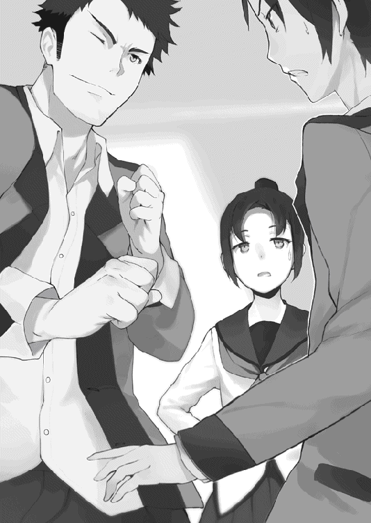
体育館での一件以来、新村はいつも通りに接してくれるようになった。ディベートに対する誤解が解けたのだろうと桜井は思っている。
「男はバカでアホで鈍くてバカだからしょうがないのかもしれないけど、ケンカはダメだからね」
なんだかひどくなっている気がする。やっぱり誤解は解けていないのかもしれない。
「それで、悪いのはどっちなの」
口調は落ち着いていたが、表情を見れば怒っているのは明らかだ。
桜井と郡山は互いに視線を交わしあった。
元々この話を持ちかけたのは桜井だ。しかたなく口を開く。
「郡山がいきなり殴りかかってきた」
「おおい!? 俺の熱い視線を受け止めたんじゃなかったのかよ!?」
「そんなもの誰が受け止めるか気持ち悪い」
桜井たちの醜いなすりあいを断ち切るように、新村が大きくため息をついた。
「まあいいわ。怒ってるわけじゃないし」
「あれ、ちがったのか」
眉間に寄せられたしわは不機嫌の証だと思っていたのだが。
「怒ってないわよ。あきれてるだけ。男子ってほんとバカよね」
心底軽蔑した口調で吐き捨てる。
「てっきりディベート部のことは許してくれたのかと思ってたんだが」
思わず口にすると、新村はわずかに口を閉ざした。
「別に、桜井君がなにをしようと私にはもう関係ないことだもの。それにしかたないじゃない。桜井君は好きなんでしょう。その......ディベートが」
「まあ、そうだな」
「だったら、もう私が言うことはないわ。あきらめるしかないじゃない」
そう告げて、新村は視線を外した。
どうやら認められたわけでも、許してもらえたわけでもなく、見捨てられてしまったようだ。
それでもこうしていつものように接してくれるのだから、新村の友情には感謝するべきなのだろう。
「桜井君も、郡山君も、変なことはひかえたほうがいいわよ。最近は増岡の目が厳しくなっているみたいだから」
そういえば、最近は男子と女子の練習を分けられていると郡山が嘆いていた。
「今日なんかもうちにきて、なんて言ったと思う？ 『どうせテニスなんて出会い系と同じなんだから、さっさと真面目に練習しろ』とか言うのよ！ 信じられない。私たちが真面目に練習してないとでも思ってるの!?」
新村は、中学では三年間続けていた学級委員を、部活に専念するために高校では辞めている。真面目に練習しているのは言うまでもないことだ。朝から機嫌が悪かった理由は増岡のせいだったらしい。
「どう考えても威張りたいだけじゃない。あの人、教師の資格ないわよね」
新村の話に郡山も同意していた。
「まったくひでえ話だよな。不真面目かどうかなんて、俺たちの練習を見ればすぐにわかるってのに」
「まさに先輩との出会い目的で入ったやつがなに言ってやがる」
「なんのことだかさっぱりだな。ソフトテニスの王子様とまで言われたこの俺がそんな不埒な目的で入部しただなんてなに言ってるんだか」
目をそらして早口でまくし立てる。ウソの下手な男だった。
「だいたい郡山よ、ちゃんと先輩にあいさつをする作戦は進んでるのか」
「おいおい、俺を誰だと思ってるんだ。朝のあいさつくらい、とっくに済ませているに決まってるだろ」
「高嶺先輩は気さくな人だから、通りがかった人にはみんなあいさつしてるのよ」
新村が補足してくれる。そんなところだろうとは思っていたが。
「まあとにかく、増岡が部活動に対する見回りを強化してるのは事実だから、桜井君も気をつけないとダメよ。それでなくてもディベート部は目をつけられてるんだし」
校内でケンカなんかしたら、それこそ増岡が喜んで難癖をつけてくるだろう。
「それにしても、なんでいきなり増岡の野郎は厳しくなったんだ」
「先輩たちの話だと、毎年こうみたい。新入生が入ってくるこの時期は気分も浮ついてるから、気を引き締めないといけないとかなんとか理屈をつけるんだって」
新村が吐き捨てる。口にするだけでも嫌そうだった。
増岡の言い分にも一理あるのかもしれないが、大きなお世話というやつだろう。部内の規律はそれぞれの部が引き締めればいい。顧問でもない増岡が外部から口を出すのは、越権行為になるのではないだろうか。
「でも、今年は去年よりもはるかに厳しいって言ってた。それはやっぱり、桜井君たちのことが影響してるんじゃないかって......」
言いにくそうに新村が告げる。
「つまり、ディベート部を潰したいってわけか」
新村は答えなかったが、否定もしなかった。
いまさら驚きはしない。
増岡に嫌われていることくらい誰にだってわかる。こうなることも覚悟の上でディベート部に入部したのだ。
アイラの性格がうつったわけでもないが、ちょっとくらい障害があったほうがドキドキするというものだ。それを楽しめる程度には、桜井も度胸がついていた。
そしてなによりも重要なことだが。増岡がディベート部を廃部にしようと締め付けを強化しているのだとしても、アイラが止まる理由にはならないのだ。
だったら桜井も腹をくくるしかない。
「まあ気をつけるよ。ありがとう新村」
新村はうなずき、それから心配するように桜井を見た。
「大丈夫、だよね？」
新村が、言葉を選ぶようにぽつぽつと話し始めた。
「ディベート部の活動に関しては、私はもうなにも言わないけど――。危ないことはしないでね。部活は、その、ディベート部だけじゃないんだし......」
遠回しな表現ではあるが、桜井を心配してくれているのは十分に伝わった。
「わかってるよ。俺だってディベート部を潰したいわけじゃない。無理はしないよ」
といっても、桜井には無理をするつもりがなくても、アイラはするのだろうから、約束はできないのだが。
それは新村もわかっているのか、小さくうなずいただけだった。
「あの、ソフトニス部だったらいつでも来ていいからね。桜井君だったら、途中から入っても、私がなんとかするから、だから――」
言葉が途中で消える。
ディベート部が廃部になるのを前提に話すなんて、縁起の悪い話だと思ったのだろう。しかしアイラの性格がある日いきなり一八〇度ひっくり返りでもしない限り、新村の心配は的外れではないのだ。
「わかったよ。もしものときはよろしく頼むな」
桜井の答えに新村も安心したのか、わずかに表情を明るくして「うん」とうなずいた。
自分の席に戻っていく後ろ姿を目で追っていると、郡山がぽつりとつぶやいた。
「はーあ、いいよなリア充様はよ」
「なんの話だ？」
「べっつにー」
腕を頭の後ろに組んでいすにもたれかかり、投げやりに天井を見つめている。
「早くリア充は全身爆発すればいいのに」
なにやら物騒なことをつぶやいている。
アホの郡山のことを考えてもしかたがない。桜井も自分の席に戻ると、始業のチャイムが鳴り響いた。
増岡が入ってきて、ホームルームが始まる。
そのとき桜井は、増岡が自分を見ているのに気がついた。
一瞬目が合い、すぐにそらされる。
勘違いなどではない。増岡は確かに桜井を見て、口元にニヤついた笑みを浮かべていた。
離れた席の郡山が桜井に向けて小さな声を響かせる。
「なあ桜井、今日の増岡......」
「ああ、そうだな」
うなずき返す。
なにかを企んでいるのだろう。郡山も「やっぱりか」とうなずいた。
「やっぱりあの頭、ズレてるよな」
「..................」
アホの郡山は無視して、さっきまでの新村との会話を思い出す。
増岡がなにを思いついたところで、どうせアイラにあしらわれて終わりなのだが、それでも一応用心はしておこうかと心のすみで思った。
結論から言えば、用心したところでもう遅かったのだが。
授業を終えて教室を出ると、昨日と同じように橘が待っていた。
「お、今日は早かったね」
一緒にいた芝原が声をかけてくる。橘はペコリと頭を下げた。
「なんか今日は増岡の機嫌がいいらしくてな」
いつもはクドクドと続ける説教も、今日はすぐに切り上げて教室を出て行った。浮き足だった様子を見て、郡山と二人して「今日の増岡はいつもに増して気持ち悪い」とささやきあったほどだ。
ふと気がつくと、芝原が意味ありげにニヤニヤとした視線を送ってきた。
「......なんだよ」
アイラを連想させる笑みに、自然と体が警戒してしまう。
「いやあ。桜井君も見る目があるんだなあって。うんうん。詩織ちゃんはかわいいものねえ」
「ま、麻衣ちゃん、その......っ」
となりで橘が慌てている。
芝原が一転して低くなった口調で桜井に言い聞かせた。
「私、男らしくないやつは嫌いだからね」
それを言われると辛い。男らしさなんて、本当に自分の中にあるのだろうか。
押し黙る桜井の態度をどう受け取ったのか、芝原は桜井の腕を取ってかがめさせると、押し殺した声でささやいた。
「言っとくけど、私は詩織ちゃんの味方だからね。泣かせたら絶対に許さないから」
小声ながらも殺意の混じった声に、桜井はおとなしく両手を挙げた。
「味方なのは俺だって同じだ。頼まれたって泣かせたりなんかしないよ」
それは桜井の本心である。
友達がほしい、などという慎ましい願いを持つ女の子を、放っておけるはずがない。
なのに、なぜか芝原はあきれたような視線を向けた。
「お人好しなのは悪いことじゃないけど......」
じいっとにらむように見上げる。意味のわからない桜井は困惑するしかない。
やがてわざとらしく長いため息がひびいた。
「ま、男なんてそんなものよね」
なんだかすごくバカにされている気がする。なんとなく不機嫌になってしまう桜井に向けて、芝原がぐいっと橘を押しやってきた。
「とにかく、詩織ちゃんは任せたからね。ちゃんとしっかり守りなさいよ」
あいかわらず橘はされるがままだった。受け取るように、桜井も橘の肩をつかんだ。
「はいはい。任せておけって。......どうした橘？」
桜井の目の前で橘が立ち尽くしていた。なんだか瞳の焦点が合っていない。目の前で手を振ってみても、まるで反応がなかった。
芝原が口元をニヤつかせながらあきれた声を出す。
「あーあ桜井君、ちゃんと責任取りなさいよ」
「んなこと言われてもな」
目の前で手を振る。軽く頬を叩いてみる。鼻をつまんでみる。どれも効果がなかった。
「あれま、重傷ね」
芝原が後ろから手を伸ばし、頬をつかんで左右に引っ張った。
「おお、なんというスベスベでやわらかな肌。くそう、うらやましいなあ」
つかんだまま左右にみょんみょんと引っ張っている。せっかくだからと桜井も手を伸ばしてみた。
なるほど、たしかにスベスベでやわらかい。芝原が声をとがらせた。
「ちょっと桜井君、女の子の顔で遊ぶなんて最低よ」
「それは自分に言ったほうがいいんじゃないのか？」
二人して言い合いながらも手を止めようとはしない。やがて橘の意識が戻ってきた。
瞳の焦点が元に戻り、自分の頬をつかむ二人の手に視線を落とす。
ここで「もう、なにやってるんですか二人とも！」なんて怒ってくれればよかったのだが。
「..................」
顔を両手で覆い隠し、しゃがみ込んでしまった。
「ご、ごめん詩織ちゃん！」
「悪い橘！ ちょっとやりすぎた！」
橘が復活するまで、二人して必死に謝り続けた。
「と、とりあえず部活に行くか」
どうにか立ち直った橘に声をかける。返事は無言のうなずきだった。
歩き出した桜井から三歩くらい後ろをついてくる。
......これは、やっぱり、避けられてるんだよなあ。
怒っている、というよりは、怯えているのほうが近いかもしれない。
ちなみに芝原は、橘が復活するとすぐに「じゃ、あとは任せたからね！」と元気な声を残して去っていった。橘になにかをささやいていたが、きっと逃げたのだろう。あとできちんとお礼をしておかないとな。
「そうだ橘、このあいだ借りた本面白かったよ」
なんとか空気を変えようと違う話題をふってみる。
橘は顔を上げると、わずかに顔をほころばせた。
「......それは良かったです」
前に図書館で勉強していたときに、オススメの本を紹介してもらっていたのだ。
小説なんて、教科書に載っているのをのぞけば五冊も読んでいない桜井にも、十分読みやすい内容だった。
「楽しんでもらえるかどうか不安でしたので」
「けっこう面白かったよ。またなにか面白いのがあったら教えてくれ」
「あ、それでしたら――」
橘がひかえめながらもうれしそうにして別の本の話をはじめた。
あいかわらず声は小さくてゆっくりとしているが、楽しそうに声を弾ませている。橘は否定していたが、やっぱり本が好きなのだろう。自分が好きなものの話になると会話が弾むのは誰だって一緒だ。
「そういえば何冊くらい持っているんだ？」
たずねると、橘がわずかに言いよどんでから、小さく告げた。
「たぶん、二百冊くらいだと思います」
「え、そんなに!?」
五十冊とかそのくらいを予想していた桜井は、思わず声を上げてしまった。
桜井の家なんて、マンガが百冊あるかもしれない、といった程度だ。
「やっぱり橘はすごいな」
思わず声に出してしまう。
「そ、そんなことないです。私なんか、本当に、全然たいしたことないです......」
否定してうつむいてしまう。あいかわらず褒められるのには慣れていないようだった。
「じゃあきっと、面白い本もたくさんあるんだろうな」
「はい。きっと桜井君にも気に入っていただける本がたくさんあると思います」
そう答える橘はわずかに誇らしげでもあった。
「じゃあ、また今度貸してくれないか」
「あ、はい」
橘はうなずき、それからためらうようにうつむき、もごもごと口を動かした。
「それでですね、その、桜井君さえよろしかったらなんですけど」
小さな声で、それでも精一杯の勇気で声を絞り出す。
「その、私の家には本はたくさんあるのですが、男の人はどういう本が好きなのか私にはよくわからなくて......」
赤い顔で下を見たまま、なにやらもじもじとつぶやいている。橘にしては珍しく長い言葉だが、それでもやめようとはしなかった。
「それに、その、桜井君の好みもまだあまり知りませんので、できれば桜井君に選んでほしくて、それに麻衣ちゃんもそのほうがいいって言っていましたので、それで――」
なにやら覚悟を決めるようにぎゅっとカバンを抱きしめると、赤らんだ顔で桜井を見上げた。
「――ですので、もしよろしければ、部活が終わったあと、一緒に本屋に......」
かすれるような橘の声をさえぎって、校内放送のチャイムが鳴り響いた。
『一年三組、桜井祐也。二年一組、九重崎愛良。至急職員室に来るように』
聞くまでもなく増岡の声だった。いつものいたけだかな命令口調の中に、愉悦の響きが感じられる。
朝から上機嫌だったのは、これが理由なのだろう。
桜井はため息をついた。
なにを企んでいるのかは知らないが、新村から注意しろと言われたばかりでもある。無視するわけにはいかなかった。
「悪い橘。ちょっと行ってくるわ」
「あ......」
橘の口から吐息のような声がもれる。
いきなり呼び出されたことに不安を感じているのかもしれなかった。
「そういえば、さっきなにか言おうとしてなかったか。部活のあとになんとか」
「えっ!? あ、いえ、その......なんでもありません」
消えいるような声で首を振る。
「そうか？ まあどちらにしろ、今日の部活は無理っぽいからなあ」
アイラが素直に職員室へ行くはずがないだろう。呼び出しなんて無視して部活はやるのだろうが、桜井はすぐには解放されないはずだ。またネチネチと、アイラの分まで説教をされるのだろう。
「先輩に、今日は行けないって言っておいてくれ。終わったらあとでメールするからさ」
橘が無言でうなずく。
「それじゃ、また明日な」
「はい。あの、お気をつけてください」
心配する橘に、そこまで心配するようなことじゃないだろ、と笑って答えた。
ひとりで廊下を歩きながら、桜井は思いを巡らせていた。
橘には大丈夫と言ったものの、根拠などない。呼び出される理由なんていくらでも思い当たるため、どれが原因なのかよくわからなかった。
部活の締め付けを強化している増岡が直接呼ぶのだから、ディベート部に関することなのだろうが、それなら部長の本郷が呼ばれるはずである。桜井とアイラを指名したのだから、二人に関係する話なのだろう。
まさか本当に不純異性交遊なんてこともないだろうが。
そんなことを考えながら歩いていると、不意に後ろから呼ぶ声が聞こえた。
「桜井祐也君」
静かで落ち着いた、感情の薄い声。本郷桐彦だった。
「一手遅れてしまったが、伝えておく話がある」
「呼び出しの話ですか？」
このタイミングだ。それしかないだろう。本郷も鋭い動作でうなずいた。
「先日、県の教育委員会で君と九重崎愛良君に関するよくない議題が上がった。校内での活動が、一部歪曲された形で委員会理事の耳に入ったらしい」
予想していなかった言葉に桜井は驚く。
県の教育委員会というのがどういう組織なのか桜井は知らない。しかしなんだか、思っていたよりも大事になっていそうな気配があった。
「議題に上がっただけでは、今すぐにどうこうするという話にはならない。そう考えていたのだがな。これほど早いとは予想していなかった。すまない」
「いえ、部長が謝ることじゃないですよ」
頭を下げる本郷に対して、桜井は慌てて言った。
「だいたい想像はついてますから」
どうせ増岡が腹いせにチクったのだろう。どこまでもやることがせこい男である。
「対応を練らなければならないのだが、今日はどうしても外せない会合がある。私はこれで失礼させてもらわねばならない。なにかあったら九重崎愛良君を守ってやってくれ」
桜井は一瞬、耳を疑った。
あのふてぶてしくて傲岸不遜で人の斜め上を行くことに長けたアイラを守る？
「たぶん必要ないと思いますけど」
謙遜でもなんでもなく、本気でそう思った。
「もちろん九重崎愛良君は優秀だ。大抵のことは自分でなんとかしてしまうだろう。だが、完璧な人間というのは存在しない。桜井祐也君は知らないだろうが、彼女は昔に比べてずいぶんとおとなしくなったのだよ」
「え？ 先輩がおとなしい？」
思わず聞き返してしまった。おとなしいだなんて、アイラには最も似合わない言葉だろう。
本郷なりの冗談か、あるいは暗喩なのだろうかと思ったが、言い直す様子はない。どうやら本当らしかった。
日頃のアイラの行動を思い出してみる。人をからかい、校内放送を乗っ取ってとんでもないディベートを行い、「せっかくだから」と避難用ダクトを無断で使用する。一秒とかからずに思い出さなければよかったと後悔した。
「いまでも好き放題暴れていると思うんですが」
「ふむ、そうかもしれないな」
さすがの本郷も否定しなかった。
「だが、当時の九重崎愛良君には、いまほどの自由な発想がなかった。くだけた言い方をするならば、楽しそうではなかった、といったところだろうか」
本郷の声は淡々として落ち着いている。事実だけを伝える言葉だった。
「変わったのはディベート部に入ってからだ。そのときの九重崎愛良君の中でどのような変化があったのかは、想像の域を出ないので言及は避けよう。しかし、好ましい変化であったのは確かだ」
ディベート部に入る前のアイラというものを、桜井は想像できなかった。
いまでこそ部活動と称してあちこちで暴れ回っているが、その「部活動」がない状態のアイラは、いったいどんな暴走をしでかしていたのだろうか。
「どんな人間にも得意なことがあれば、苦手なこともある。彼女は彼女のできることをするだろうし、私は私にできることをする。同様に、君は君にできることをすればいい」
「俺にできることなんて、あるんですか......？」
言いたいことのひとつも言えないヘタレな自分が、あのアイラでさえできないようなことなんか、本当にできるのだろうか。
「もちろんある。それは私にはできないし、橘詩織君にもできない。九重崎勇人君でもそうだ」
「それは、なんですか？」
「自らで気がつくべきことだ。私が教えるべきことではない」
桜井は押し黙る。確かになんでもかんでも人に教えられてばかりでは、なんというか、情けない。
「悲観しなくてもいい。政治家たるもの、教えるべき情報と教えるべきではない情報を、しっかりと見極めなければならないだけだ。君のためを思えばこそだよ、桜井祐也君」
そう言って、ほんのわずかにだけ表情をゆるめた。感情を表に出すことのない本郷だが、もしかしたら笑ったのかもしれない。
「なんていうか、部長って、でかいですよね」
人間として偉大だと言うべきかもしれない。すぐにヘタレて自己嫌悪に落ち込む桜井とは天地の差だった。
本郷は一度だけ首を振った。
「そのようなことはない。私は、桜井祐也君より二年早く生まれただけの、無力な人間だよ」
その言葉には、わずかな遅れがあった。本郷には本郷の思いがあるのだろう。
完璧な人間などいない。その言葉には本郷自身も含まれているに違いなかった。
「ではこれで失礼する。すまないが、あとは頼む」
それでもこうやって堂々と立っていられる。
すぐにヘタレて言いたい言葉のひとつも満足に言えない桜井だったが、
「はい、わかりました」
そう答えられる程度には、本郷桐彦という存在に感化されていた。
静かな決意を胸に秘めて職員室に向かう桜井だったが、さすがに職員室前に立っている生徒を見たときには少なからず驚いてしまった。
「先輩なにやってるんですか」
そこにいたのはアイラだった。
「見てわかるでしょ。桜井クンを待っていたのよ」
「もしかして、職員室には行くなってことですか？」
部活を優先するために引き止めに来たのかと思ったのだが、アイラは静かに首を振った。
「呼び出されたのはアタシと桜井クンでしょ。アタシも来てなにが悪いのかしら」
当然のようにアイラが答える。桜井は驚きを隠しきれない。
「まさか先輩も職員室に？」
「そんなに驚かなくてもいいじゃないの。それじゃまるでアタシがいつも呼び出しを無視しているみたいじゃない。傷ついちゃうなあ」
沈痛な表情を作ってうつむく。どう見ても演技なのがバレバレだった。
「俺は呼び出しを食らったら普通に来ますけど、まさか先輩が素直に応じるなんて......」
答えながら、自分はアイラを侮っていたと痛感した。
アイラは、口の端を吊り上げるように、深い笑みをたたえていた。
「だって、このアタシを呼び出したんだもの。とても楽しいことを計画してくれたに違いないじゃない。だったら、無視するなんてもったいないわ」
華やかな笑みの裏に隠しきれない愉悦をたたえて、邪悪に顔を歪ませる。
想像するまでもなく、悪いことを考えているときの顔だ。
確かに本郷の言う通り、桜井にもできることがあった。
なにかあったら自分が身を呈してでも止めなければ、と桜井は決意を新たにする。
「言っておくけど、いくら桜井クンでもアタシの邪魔をしたら怒るからね」
一瞬でこれである。本当に油断も隙もない。
「..................。先輩こそ、あんまり無茶はしないでくださいよ」
「それは増岡先生しだいよねえ」
遠慮とか自重という言葉とは無縁の、艶やかな笑みで答えた。こうなってはもはや止めるなんて不可能だろう。せめて被害を最小限にしよう、と桜井は目標を下方修正した。
ヘタレって言うな。俺は俺にできることをするだけだ。
職員室に入った桜井とアイラは、そのまま校長室に案内された。
そこには優しい表情の校長先生と、桜井たちを案内してくれた副校長先生。それに増岡と、もうひとり先生がいた。桜井は知らなかったが、アイラが二年の学年主任の先生だと教えてくれた。
そういえば増岡も一年の学年主任である。
つまり校長室には、校長先生と副校長先生、それに一年の学年主任と二年の学年主任の、四人の教師がいることになる。
増岡が桜井たちを説教する、だけにしては大げさな顔ぶれだった。
並べられたソファのひとつに桜井たちは座らされた。正面には校長先生が座り、そのあいだを埋めるように増岡たち教師が腰を下ろす。
楽しむような気配を漂わせているのは増岡くらいのもので、他の教師は表情を消したような硬い顔つきをしている。校長先生は柔和な笑みを崩していないが、この人はいつもこうだ。
本郷が警告に来るくらいだからただ事ではないだろうとは思っていたのだが、それでも桜井のどこかには、たぶんなんとかなるだろうと楽観視する気持ちがあった。
しかしどうやら、楽観的すぎたようだった。
怖い先生を怒らせたときや、大勢の生徒を前にした場合とも違う、胃を締めつけるような重い緊張感が支配していた。
「お前たちがなぜ呼ばれたのか、わかっているよな？」
増岡が口を開く。
理由なんてわかるわけないことを知っていながら聞いているのだろう。
そうやって優越感に浸るのが増岡なのだ。
反論してもよかったのだが、怒らせて得になることはひとつもない。
下手に出ようとした桜井を、アイラが手で制した。
「正直さっぱりわかりません」
桜井の憂慮を完璧に無視する形でアイラが吐き捨てた。
「こちらの都合を無視していきなり呼び出しておきながら、呼び出した理由を教えるつもりはないから自分で考えろだなんて、ちょっと性格があまりにも悪すぎるのではないかと思うのですが、そのあたり教師としてどうお考えですか増岡先生」
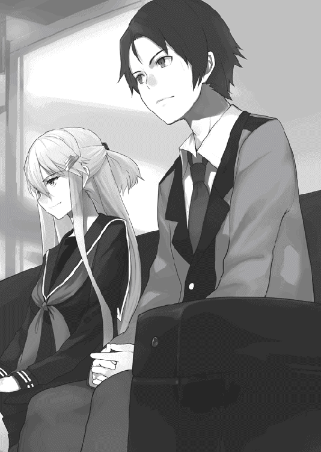
薄ら笑いを浮かべて問い詰めるアイラ。
「あ、もしかして先生アタシのことが好きなんですか？ よく恋人同士が『ねえちょっと』『なんだよ』『ふふっ、呼んでみただけ』ってのをやってますけど、それを真似したかったんですね。うわあ、いくらアタシでもガマンの限界があるので、気持ち悪いのは顔だけにしてください」
増岡の全身がブルブルと震えている。血走った目を見開いてアイラをにらみつけていた。
「黙らんか九重崎！ 自分の立場をわかっているのか!?」
増岡の怒鳴り声を、アイラは涼しい顔で受け流した。
自分の立場なんて当然理解しているだろう。その上でこうして乗り込んできたのだから。
「なにを怒っているのですか？ そんなに興奮すると、せっかくのカツラがずれてしまいますよ」
「なにを――」
増岡の腕がピクリと上がり、すぐにテーブルへと振り下ろされた。
叩く音が激しく響いたが、そんなのでごまかされるのは気の弱い橘くらいなものだろう。
桜井でも気がついたのだ。アイラが見逃すはずはない。
「あら先生、いま手が動きましたよね？ なにを気にしているんですか？ 気になるなら直したほうがいいですよ。大丈夫ですよアタシは誰にも言いふらしませんから。それとも、カツラだってことを認めたくないからガマンしてるんですか？」
怒りで声も出ない増岡を前にして、アイラが追及の手をゆるめるはずもない。
「反論しないってことは、認めるってことですよね？」
「ふざけるな、誰がカツラだ！ そんなわけないだろう！」
売り言葉に買い言葉で言い返せばアイラに利用されるだけだというのをいいかげん学習すればいいのになあ、と桜井は心の中だけで増岡を気の毒に思った。
その言葉をアイラに引き出されたのだ、という事実を認めない限り、無理なのかもしれないが。
となりでアイラが、にたあ、と笑う。
「じゃあ調べてみてもいいですよね？」
「......っ！」
増岡が言葉に詰まって黙り込んだ。
怒りのためか、羞恥のためか、赤黒い顔でにらみつける増岡の顔を指さしながら、アイラがケタケタ笑っている。
この空気の中でも絶好調だ。
本郷部長ごめんなさい。やっぱり止めるなんて無理でした。
止めるどころか、口をはさむ余裕もない。
自分のかわりに誰かこの先輩を止めてください、と願っても無駄なことはもう十分身に染みてわかっているので、桜井はとなりで静かに腰掛けていた。
せめて自分だけでも優等生を演じておこう。意味があるのかはわからないけど。
二年の学年主任の先生がわざとらしく大きな声を出す。
「まったく！ 君たちは、ここに呼ばれた理由を本当にわかっていないようだね」
増岡と同じ台詞を言っているが、こちらは本当にあきれているようだ。
それにしても「君たち」である。優等生を演じても無意味だったらしい。桜井は少しだけ悲しくなった。
ようやく落ち着きを取り戻した増岡が口を開いた。
「あいかわらず反省の欠片もないやつだな。貴様はすでに自分が何回謹慎を受けたかわかっているのか？」
アイラは小首を傾げ、両手を広げた。ひとつ、ふたつと指を折り曲げて数える。
「......ごめんなさい、増岡先生」
しおらしくうなだれた。
「片手を超える足し算は苦手なんです」
悪びれることもなく堂々と答える。増岡の血圧が急上昇するのが顔色でわかった。
「相変わらず教師をバカにする！ 器物は勝手に使用して破壊する！ 何度注意しても反省の色がない！ 貴様の行動はさすがに県の教育委員会でも問題になってな、その件についてこれから職員会議を行うところだ。寛大な我が校としても、教育委員会の意思は尊重しなければならないからなあ」
自分の優位性を思い出したのか、増岡の顔には赤みが戻っていた。
「だがその前に、念のため貴様らに事情聴取を行うことになっている。先週の体育館での騒ぎ、それに昨日の屋上での騒ぎについて、言い訳があるなら聞いてやろう。寛大な処置をありがたく思えよ」
要するに見せしめということだろう。問題を起こせば、相応の処分が下される。それは学校側としては当然だ。
桜井も覚悟していたので驚きはない。
謹慎か、停学か。どちらにしろ、心配してくれた橘や新村にはあとで謝っておかないとなあ、と申し訳なく思う桜井に向けて、増岡がゆっくりと、重みをのせるようにして告げた。
「なにしろこれから行う職員会議は、貴様らの退学処分についてだからなあ」
増岡の言葉に空気が固まっていたのも一瞬だけだった。
まず最初にアイラが口を開く。
「増岡先生に職員会議の内容を決定する権利なんてありましたっけ？」
アイラの質問に、増岡がせせら笑う。
「それがどうした。たかが一生徒であるお前には関係のないことだろう」
「教育熱心で正義感のあふれる増岡先生のことですから当然知っていると思いますけど、学校教育法というのはご存じですよね」
増岡の顔がわずかにかたまり、すぐに威厳を取り繕うように引き締められる。
「当然だろう。それがなんだというのだ」
「でしたら学校教育法第十一条も当然暗記されてますよね？ できたらお聞かせ願えないでしょうか？」
増岡の顔が赤黒く歪む。どうせ覚えていないのだろう。予想通りごまかすように怒鳴り散らした。
「それがなんだというのだ！ いまは関係ないだろう！」
「学校教育法第十一条。校長および教員は、教育上必要と認められる場合にのみ、生徒に懲戒を加えることができる。とあるのですが、関係ないとはどういう意味でしょうか？」
アイラの顔が愉悦に歪められる。実にサディスティックな笑みだ。
食いしばった増岡の歯がきしんだ音を立てた。
「退学処分が教育上必要となった理由とやらを聞かせてもらいたいものね」
もはや表面上の敬意すらない言葉だった。
「くっ......ふん！ さっきも言っただろう。貴様のようなやつがひとりいるだけでも学校は十分迷惑しているんだ。真似する者が出てきてはかなわんからな。貴様のように風紀を乱す生徒は厳重に処分されるということを、他の生徒共にも教えねばならん」
自慢げに増岡が語る。自信のあるロジックなのだろう。
すかさず桜井も口を開いた。
「ちょっと待ってください。それだけの理由で退学だなんて、重すぎませんか。他の生徒への示しというのなら、謹慎や停学でも十分なはずです」
相手の主張を根本的に否定できない場合、内容ではなく方法を否定して効果を疑問視する作戦に出る。ディベートではよくある手だ。
増岡の鋭い視線が桜井に向いた。
「なにを言うか。そんなぬるい処分で――」
増岡の剣幕を、副校長だという女性教師がさえぎった。
「そうですね。やはり退学というのは重すぎる気がします。学校側としても、退学者を出すというのはイメージがよくありません。ここは停学でどうでしょう校長先生」
「うん、そうだねえ」
ニコニコ顔の校長がうなずいた。
手元には新しい壺が置かれている。真っ白な布で愛おしそうに磨いていた。
「新作らしいわよ」
耳元でアイラがささやく。
「前の物よりも良い出来だって褒められたらしいのよ」
なるほど。だからあんなに上機嫌なのか。
......なんだかイヤな予感がする。これって割られるフラグじゃないだろうな。
「しかし停学程度では他の生徒が真似をしないとも限りません」
増岡が必死に食い下がる。副校長先生は目を閉じてわずかに考え込むと、静かに首を振った。
「幸いなことに、我が校は謹慎者でさえ年に数人の比較的落ち着いた学校です。停学となれば数年にひとり程度。停学処分でも生徒たちは十分に重い処分だと感じるでしょう」
増岡が今にもかみつきそうな形相で桜井たちをにらんだ。
どう考えても桜井がにらまれる理由はないのだが、さすがの増岡も副校長先生相手にあからさまな不満を表すわけにはいかないのだろう。とんだとばっちりである。
「君たちは」
ニコニコ顔の校長先生が口を開いた。
教育者というよりは、日なたでぼんやりと盆栽の手入れをしてそうなおだやかな口調である。それがこの場では逆に目立って聞こえた。
全員が校長先生に視線を向ける。壺を磨く手を止めないままに落ち着いた声を響かせた。
「君たちは学校が好きかね」
静かな目が桜井を見る。
桜井は、学校を嫌いになったことなんて一度もなかった。なんだかんだで楽しい毎日だ。
鬱屈とした気分を味わうこともなく、多くの友人たちもいる。それになにより、アイラがいる。
楽しくないはずがなかった。
「はい、とても」
桜井の言葉は短かったが、校長先生は満足そうに目を細めた。
それから視線をアイラに移す。
「君はどうだね？」
「まあそうね。色々あるけど――」
そこで一度言葉を区切り、ちらりと増岡を見た。
いや本当はちらりなどという生やさしいものではなくて、思いっきり意識して増岡を見た。視線に気づいた増岡が醜悪に表情を歪める。アイラが口元に小さな笑みを乗せて言葉を続けた。
「――以前と比べれば、悪くはないわね」
「なるほど、そうですか」
校長先生はうなずくと、壺を磨く手を止めた。
「桜井さんは口頭での注意のみとし、今回は不問とします。職員会議での議題は、九重崎さんに対する三日間の停学処分のみとしましょう」
校長先生の決定に、副校長先生と二年の学年主任の先生がそろってうなずいた。
増岡だけが抗議をしようと口を開く。
それよりも早く、桜井が席を蹴って立ち上がった。
「どうしてですか！ なんで先輩だけが停学なんですか!?」
叫ぶ声が響き渡る。
「さっきの質問なんかで決めたっていうんですか？ あんな質問でなにがわかるっていうんですか？ 俺たちの問題は、そんなに簡単なものなんですか!?」
口が勝手に叫んでいた。
確かに自分たちがやったことは、許されないかもしれない。学校側がなんらかの処分を下すのも当然だろう。
わかっていてやったのだ。桜井にとってはそれだけの理由があった。理解されるなんて思っていないし、許してほしいとも思っていない。
でも、だからって、これはあんまりではないか。
アイラひとりを切り捨てて、それで手を打ちましょうなんていう大人のやり方が、桜井にはどうしても納得できなかった。
「俺を不問にするなら、先輩も不問にしてください。ダメだっていうなら、俺も停学にしてください」
目の前の校長先生に向けて言い放つ。それでもおだやかな表情は変わらなかった。ニコニコとした面の下であざ笑っているような気がして、桜井の中でなにかに火がついた。
バカにしやがって――
感情的な思考は、後戻りのきかない言葉を吐き出してしまう。
「俺は間違ったことをしたなんて、まったく思っていません。それが問題だというのなら、いっそ退学にすれば――」
「桜井クン」
アイラが小さな声で腕を引いた。
「ありがとう。でも、それ以上言っちゃうとアタシが困るわ」
「あ......」
いまさらのように我に返る。
その場にいる全員が桜井を見ていた。増岡でさえ驚いたように目を見開いている。正面にいる校長先生だけがニコニコとした表情を崩していなかった。
いまの自分たちの状況を思い出し、桜井は腰を落とすように座り直した。
「..................すみませんでした」
小さな声をかろうじて絞り出す。
増岡が毒気を抜かれたような顔で、それでも釘を刺してきた。
「ふん。この程度の処分ですんで感謝することだな」
それからアイラに視線を向ける。
「九重崎、貴様、停学の意味がわかっているのだろうな。おとなしく頭を冷やせという意味だからな。もしも停学中に問題を起こしてみろ。今度こそ相応の処分を下してやる」
その言葉は挑発のように聞こえた。
実際そうなのだろう。学校側が生徒に下す処分は、謹慎、停学、退学の順に重くなる。停学中に問題を起こせば、より重い処分が科されるのは当然である。アイラをけしかけて、今度こそ退学にしたいのだ。
桜井は祈るようにとなりを見た。
アイラはにこやかに微笑んでいた。
「用件はそれだけですか？」
落ち着いた口調で答える。心配するまでもなく、増岡の安い挑発を買うつもりはないらしかった。もっとも、停学を言い渡されて落ち着いているほうが普通ではないのかもしれないが。
「それでは失礼します。ほら、行きましょ桜井クン」
手を引かれて、慌てて立ち上がる。
桜井を連れて出口へと向かうアイラの背中に、校長先生のおだやかな声がかけられた。
「九重崎さん。学校は楽しいところですよ」
アイラは首を傾げるような動作で振り返る。
校長先生からはそれ以上の言葉はなかった。言いたいことはもう終わりらしい。
「もちろん知っているわよ」
アイラが答える。
校長先生からの返事はなく、微笑みながらアイラと桜井の二人を見守るだけだった。
校長室を出ると、まだ部活が始まったばかりの時間だった。もっと長くいた気がしていたのだが、実際はそれほどでもなかったらしい。
橘と本郷からそれぞれメールが入っていた。今日の部活は休みにしたこと、呼び出された理由と結果を明日でいいので聞かせてほしいことなどが書かれていた。
本郷はともかく、橘の性格を考えれば、本当は今すぐにでも事情を聞きたいだろう。明日でもいいと配慮してくれるところがありがたかった。
自転車を押しながら、アイラと並んで帰る。
聞こえないように心の中で大きくため息をついた。
どうして、いつもいつも、肝心なことは言えないくせに、余計なことは口走ってしまうのだろうか。
どう考えたって、校長先生は自分たちに温情を与えてくれたのだ。それを「考え直せ」だなんてどうかしている。
それで自分が停学になったり、退学になったりするだけならばかまわない。自分が悪いのだ。笑い話である。
だけど、アイラを巻き込むとなると話は別だ。考え直した結果、本当に退学になってしまったら、どう責任をとるのか。
考えのない発言で他人まで巻き込むなんて、本当に最低だ。
「どうしたの桜井クン。そんなに情けない顔をして」
「そんな顔――」
している、のだろう。
していなかったとしても、無言のままとぼとぼ歩いていれば、アイラでなくても見抜けるに違いない。
「さっきは、すいませんでした」
「あら、どうして桜井クンが謝るの。さっきはアタシのために怒ってくれたのでしょう」
「......いえ、そんなにいいものじゃなかったです」
きっかけはアイラのためだったかもしれない。
でも、自分の安っぽいプライドとか、考えのない浅はかな感情とか、どうしようもない部分が桜井を突き動かしただけだった。
「でも、アタシのためだったんでしょ。だったら、うれしいわ」
そう言って、アイラは静かに微笑む。
「ありがとう、桜井クン」
からかうわけでも、遊んでいるわけでもない、純粋な笑み。
なぜだか恥ずかしくなって、アイラの笑顔から目をそらした。なんでもない一言のはずなのに、いつも以上に恥ずかしいのはなぜなのだろうか。
そういえば昨日も、自転車を押しながら同じ道を歩いていた。
昨日は「二人で並んで帰ったらどう思われるのか」なんて聞かれて、やはりうつむいていたのだ。
アイラは自分をどう思っているのだろうか。その横顔からは、アイラのようになにもかも読み取るなんてできなかった。
「ねえ桜井クン」
「は、はいっ」
突然に声をかけられて、慌てて返事をする。
「後ろに乗ってもいい？」
たずねておきながら、いつものように返事を待たずに乗ってしまう。
荷台の上に横向きに腰掛けて、ニコニコと桜井を見つめていた。
「......まだ暗くなっていませんよ」
一応言ってみたが、アイラには牽制にもならない。
「暗くならなかったら、桜井クンと一緒に帰りたいって思ったらいけないの？」
初めから言い負かせるなんて思っていない。
桜井も自転車に乗り、ペダルをこぎ始めた。
人通りの少ない午後の道を、二人乗りの自転車が走っていく。
アイラは自分の肩を預けるようにして背中にもたれかかり、両腕でゆるくしがみついていた。
オリーブオイルのように透き通った髪が、風の中で踊っている。
キレイだ、と素直に思った。
すれ違う人の誰もが桜井たちを振り返る。
アイラの、主に言動と性格のせいで忘れそうになるが、本当はとんでもない美人なのだ。母親ゆずりだという透き通った髪と、日本人離れした顔立ちのせいで、時に妖精のようだと本気で思ってしまう。
その顔は十代のようであり、二十代のようにも思える。
幼くも気高く、あどけなくも美しい。
相反する魅力を兼ね備えているからこそ、アイラは誰よりも輝いている。
どうして平凡な自分なんかと一緒にいるのだろうか、などとはさすがにもう思わないが、それでも、アイラがなにを思って自分の後ろに座っているのかは知りたかった。自分の後ろに座りながら、なにを見ているのだろうか。
「一緒に帰りたい」なんて言われれば、どんな男だって勘違いしてしまう。
アイラにとって自分は、本当に先輩と後輩でしかないのだろうか。
ほんの少しでいい。アイラの気持ちを聞かせてほしい。
そう思ってしまうのは自分がヘタレだからなのだろうか。
そんなことばかり思っていたから、桜井はずっと無言だった。アイラも口を開くことはなかった。会話などなにひとつないまま、それでも怒ったりはしない。時間だけが過ぎていく。
前にも同じようなことがあったなと、桜井は思い出した。
あのときも桜井は落ち込んでいて、その背中に寄り添うようにアイラは座っていた。
やがて人通りも増えてきたころになって、ようやくアイラが口を開く。
「ねえ桜井クン。もうすぐ駅だね」
その声はなんだか寂しそうに聞こえて、「そうですね」と返すのもためらわれた。
しがみつくアイラの腕に力がこもる。
顔を桜井の背中に押し当てるようにして、くぐもった声を響かせた。
「もう少しだけ、このままでいたいな......」
風に流されそうなほどの小さな声。けれどもしっかりと桜井の耳に届いた。
「先輩......」
ドキリとはしなかった。
かわりに、じわりじわりとアイラの体温がしみこんできた。言葉が何度も頭の中で繰り返されて、一分一秒ごとに鼓動が早くなっていった。
二人はいつしか見覚えのある道に入っていった。ここを曲がれば、いつかアイラと一緒に通った、真っ暗な地下道だ。
桜井は速度をゆるめて振り返る。
「先輩、ここを曲がれば――」
ギリッ、と思い切りわき腹をつねられた。
「アタシは、もう少し、このままがいいって言ったの......！」
有無を言わせない迫力だった。よほど行きたくなかったらしい。
苦笑しながら再びペダルをこぎ始める桜井に向けて、アイラが「まったくもう」とすねるような言葉をつぶやいた。
「どうして近道なんてしようとするのよ」
「......え？」
「桜井クンは、そんなに早くアタシと別れたかったの？」
「あ、いえ......」
「アタシは、少しでも長く、この時間を大切にしたいって思っているのに」
ぎゅっと腕に力がこもる。
「ねえ、わがままを言ってもいいかな？」
「え、ええ。いいですよ......」
カラカラになったのどで答える。
とてもじゃないが「そんなの今さらじゃないですか」なんて答える余裕はなかった。
「もうひとつだけでいいから、となりの駅まで行きたいな」
ほんの少し硬くなった声で、まるで断られるのを恐れる少女のように、アイラがおずおずとつぶやいた。
じわりじわりと早くなっていった鼓動は、いまや激しく打ち鳴らされていた。
返事をしたのかどうかさえわからない。全身から流れる汗が運動のせいなのか、それとも別の理由からなのか、桜井には考える余裕もなかった。
無言でペダルをこぐ。
駅の目の前を通り過ぎると、そこは見慣れない道だった。
背中でアイラがクスクスと笑う。
「ねえ桜井クン、急がないでほしいなって、言ったばかりなのに」
「あっ、すいません」
慌てて速度を落として、それからアイラの言葉の意味に気がつく。
つまりは、それだけ長く、一緒にいたいということなのだろう。
顔が熱くなっていくのがわかった。どうせ全部計算ずくなのだとわかっていても、想いが募るのは止められない。男は本当にどうしようもない生き物だと、桜井は情けなさをかみしめた。
「ふふ、そんなこと気にしなくていいのに」
心の中を読み取ったかのように、アイラが言葉を続ける。
「必死な桜井クンって、かわいいもの」
「..................」
いくら桜井でも、褒められていないことくらいわかる。
なんとなくヤケになって、思いっきりペダルをこいで急加速してやった。
「きゃあっ」などと明るい声を上げてアイラがしがみつく。まったく逆効果のようだった。
こぎ出してすぐに気がついた。このまま進むと、待っているのは急な上り坂だ。
「......先輩、謀りましたね？」
「そんな難しい言葉は知らないなあ」
笑いながら答えられては説得力の欠片もない。
だからといって今さら速度をゆるめるなんて、男のプライドにかけて絶対にできない。
「大丈夫？ 無理しなくてもいいのよ」
気づかうような言葉だが、声の奥には艶やかな悦びがにじんでいる。自分の言葉が桜井のプライドを刺激することまで計算ずくなのだろう。
わかっていても、それでも止まるわけにはいかない。
加速した勢いのまま坂道を駆け上がった。ペダルに重い負荷がかかり、速度が急激に落ちる。
登りだしてすぐに、忘れていた感覚が足によみがえった。
痛むのではなくうずくような、足に異物を混入されたような違和感。
もうすっかり忘れていた。桜井の足は、日常生活に支障はなくても、無理な運動はひかえるように言われている。
それで悩んでいた日々は遠い昔に思えるが、実際には一週間ほどしか経っていないのだ。
郡山とアホな話をして、ディベート部の活動と称して大騒ぎを繰り返し、新村にあきれられる。
そんな毎日が、小さな悩みなど吹き飛ばしてしまうほどに楽しかったのだと、今さらのように思い知った。
――ありがとうございます。
そんな言葉を口にしようとしたところで、急に足が軽くなった。目の前の視界が開ける。
いつのまにか長い坂道を登り切っていた。
「ふふっ」
後ろでアイラが笑っている。
「桜井クンも男の子なのね」
なんだか機嫌の良さそうな声である。
「......いままでなんだと思っていたんですか」
「聞きたい？」
一転してニヤニヤとした声でたずねてくる。どうせろくな答えじゃないのだろう。桜井は首を振った。
坂を登った先は、ゆるやかな下り道が続いている。街を一望する景色を横目に見ながら、ブレーキをかけてゆっくりと降りていった。
恩返しをしたい、なんて大げさなことを思うつもりはない。
ただの自己満足だ。だけど、部長にも頼まれている。
自分にしかできないことがなんなのか、桜井にはわからない。わかっているのは、アイラは停学になってしまったことと、そんな処分ではこれっぽっちも反省していないだろうということだけだ。
「先輩は明日も学校に来るつもりですか？」
停学中に学校に忍び込むなんて話は聞いた記憶がない。桜井にも推測しかできないが、少なくとも処分が軽くなったりは絶対にしないだろう。無期停学か、あるいは退学か――
いずれにしろ、アイラはもう学校に来られなくなる。
自分の想像に自分でぞっとした。桜井の胸に抑えがたい焦燥がわき上がる。
アイラはしばらく無言だった。
「先輩――」
耐えきれなくなってもう一度呼びかける。アイラはようやく答えた。
「うん。桜井クンの言いたいことはわかるよ。停学中は学校に来るなっていうんでしょ」
「当たり前ですよ。そんなことしたら増岡の思い通りじゃないですか」
あんなやつの思い通りだなんて、考えただけで屈辱的だ。
「そうね。でもその前に、関係のない話をしてもいいかしら。桜井クンには、アタシの家のこと、話してなかったわよね」
確かになかったと思う。
だけどなんでいきなりそんなことを言い出したのかがわからなくて、桜井は黙ったまま耳をすませた。
ゆれる自転車のバランス。声の響く方向。振り返らなくてもわかることはたくさんある。
アイラは遠い景色のむこうに向けて言葉を放っていた。
「アタシの家、九重崎家はね、なんかすごい昔からある家なんだって。あいつは書道をやってるみたいだったけど、もちろん習わされたのはそれだけじゃないわ。華道や茶道は当然として、いろんな伝統芸能を見たし、させられたわ。アタシ、こう見えて琴も弾けるのよ」
「それは、すごいですね」
「あらいいのよ。似合わないですねって言っても」
「そんなことは思ってませんけど......」
意外だな、と思ったのは確かだ。
「昔のアタシはとてもいい子だったから、親に言われることはなんでもやったし、それで褒めてくれるのがうれしかった。よくできたわねって、お母さんに頭をなでてもらうのが、とてもうれしかった」
昔を思い出す声はなつかしそうで、そして、少し間が空いた。
「だけど、あいつは違った。頭が固くて、古くて、頑固だった。女は男より目立ってはいけない。九重崎家の娘は九重崎家のために生きればいい。そんな考えしか持ってなかったわ。
どんなに勉強しても、運動や習い事をがんばっても、そんなのは当然と言いつつ、でも男を引き立てろなんて言う。
そんなんじゃ、純真無垢な箱入り娘のアタシでも、イヤになっちゃうわよね」
「そこは性格がひん曲がったでいいんじゃないんですか」
「あら、いつもの調子が戻ってきたわね」
「あ、いえ......すいません......」
ついツッコミをせずにはいられなかったのだ。
アイラは背中ごしに笑っている。
「だから、お母さんとは今でも仲がいいわよ。でもあいつは別。アタシのことを人形かなにかとしか思っていないやつなんて、遺産だけを残して早く死ねばいいのよ」
あいつ、というのはたぶん父親のことなのだろう。
アイラの声は冷静で、怒りも憎しみも感じられない。突き放すような冷たさがあるだけだった。
アイラには自分の家を嫌っている様子があった。「自分を見てほしい」なんてアイラには似合わない思いも、きっとそこからきているのだろう。
知らなかったアイラの一面を知ることができてうれしいと思う一方で、違和感もあった。
「先輩は......」
たずねようとしたが、上手く言葉にできなかった。
アイラは、どうしていきなり両親の話をしてくれたのだろうか。
聞いてほしかっただけ、にしては、アイラの声は落ち着きすぎている。すでにアイラの中で感情の整理がついていなければできない態度だった。
家にはいたくない。もしかしたら、そういう意味なのだろうか。
途切れた言葉でも桜井の意図をくみ取ったのか、アイラは苦笑するように短く息を吐いた。
「恥ずかしいから、なんとかうまく持っていけないかなって思ってたんだけど、慣れないことはするものじゃないわね。ディベートなら簡単なんだけど。不思議よね」
自嘲する言葉は、なにかをあきらめ、なにかの覚悟を固める言葉だった。
「まわりくどく言ってもしかたないから言うけど、あのね――」
そこまで言っておきながら、アイラが言葉をためらう。
それは非常に珍しいことで、だから桜井はある種の警告のようなものを感じ取った。
なにか良くないことが起きようとしている。なにかを決定的に変化させてしまう、後戻りを許さない言葉が続こうとしている気がして、桜井は身構えた。
そんな桜井の防御を、アイラの一言がたやすく打ち砕く。
「今日ね、お母さんもあいつもいないの」
「..................え」
「だからね、その......これから、アタシの部屋に、こない？」
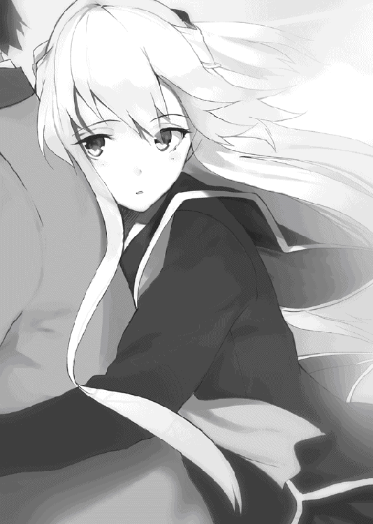
日はもう傾きはじめていた。
薄暗くなりはじめた空の下、風もなく、世界は静けさに満ちている。
「あの、それってつまり、その......」
「......うん」
背中ごしにうなずく気配がする。
アイラの声が震えていたことに、今さらのように気がついた。
棒のように固まった足がペダルを踏み外した。それでも車輪は回り続ける。からからからと、自転車は二人を乗せたまま、なだらかな坂を下っていった。
アイラの家は坂を下りきった先からそう遠くない場所にあった。気がした。桜井にはもう時間の感覚なんてなかった。アイラのか細い声にしたがって機械的に進んでいると、やがて大きな古い門の前に立っていた。
「ここ......ですか」
「うん」
答える声は「今日は両親がいない」と言ったときと同じ硬さだった。
表札には確かに「九重崎」の文字が彫られている。
左右に首をめぐらせれば、家を囲む壁が、桜井の家が三、四軒は並びそうなほど先まで続いていた。
こんなに広い家にたったひとりというのは、どんな気分なのだろうか。
本来ならあたたかい笑い声が響くはずの場所が、静けさに満ちているというのは、どんな気持ちになるのだろうか。
同じ経験がないから想像するしかないが、もしかしたら、とても寂しいのではないだろうか。
もしかしたら、そのために呼んだのではないだろうか。
ひとりは寂しい。ひとりは悲しい。誰でもいいからそばにいてほしい。
アイラにもそういう日があるのかもしれない。
だから桜井を誘ったのではないだろうか。
「そういう意味」なんてなにもなくて、ただそばにいてほしい。それだけなのかもしれない。
だったら、それでもかまわないと桜井は思った。
目の前に助けを求める女の子がいるのに、手を差し伸べない男なんていないだろう。
それに、もしかしたら万が一、いや億が一だったとしても、それでも「そういうこと」になる可能性はあるはずだ。
「桜井クンがいてくれたから楽しかったよ」「桜井クンだから、なのかな」「お願い、今夜はこのまま帰らないで......」
なんて展開がないと誰が言い切れるのだろうか。
だいたい、キライだったら家になんて誘わないだろう。少なからず好意があるから呼べるのだ。それがたとえ後輩に対するただの親愛だったとしても、今夜ついに一線を越えてしまうかもしれない。
桜井は内心で気合いを入れた。
今日、俺は大人の階段を上る。いつかは誰もが営むはずの行為を、一足先に行うのだ。
その決意で扉に手をかけた。その横にアイラの手が添えられた。少し照れたような優しい笑みで、一緒に開いてくれる。言葉なんていらなかった。想いはたしかに通じ合っている。そう感じさせるだけの笑顔がとなりにあった。
門が開き、中の景色をあらわにする。そこにあったのは――
「まあ、お帰りなさいお嬢様！」
白い給仕服を身にまとった恰幅のいいおばさんが立っていた。
「ただいま嘉子さん」
アイラが愛想良くあいさつを返す。
桜井は棒立ちのまま思考を停止させた。
なんか人の形をした白い物体が突っ立ったままなにかを話していやがるんだけどこれはああそうか俺わかっちゃったぞ。
桜井の思考はようやく現実に戻ってきた。
「こちらの方はロボットかなにかですね？」
「お手伝いの嘉子さんよ」
アイラが動じることなく、しれっと答えた。
「あらいやですわお嬢様ったら」
顔中をしわくちゃにするような愛嬌のある笑みで何度も手を振り、でっぷりとした身をよじらせる。
「メイドって、呼んでくださいな」
こいつは今、世の男性をすべて敵に回したと桜井は心密かに罵ってやった。
「あの、これってつまり、その......」
「......うん」
アイラがうなずく。とても艶やかな笑みで。
「両親なら、いないわよ」
......うん。わかってた。わかってたよ。どうせそんなオチに違いないってな！
「ところでお嬢様、こちらの方は？」
「桜井クン。学校の後輩よ」
「あらまあ、そうでしたか。あたしはてっきり――」
「てっきり、なに？」
アイラがたずねると、嘉子さんは意味ありげに笑みを深くした。
「勇人お坊ちゃま以外の男の人なんて初めてなものですから。ねえ？」
「いやそこで俺にふられても」
「あら桜井クン、知ってるなら教えてほしいな」
アイラがイヤらしい笑みを浮かべて近寄ってくる。嘉子さんも、あらあらあらなんて言いながら近寄ってくる。ダメだこの二人同類だ！
「いやあ、あははー、なんでしょうねえー」
もちろん桜井に答えられるはずがなかった。
外観からでもわかっていたのだが、九重崎家は広大な屋敷だった。門から玄関まで、玉砂利の敷かれた道が数メートルも続いている。その先に平屋建ての古い日本家屋が建っていた。
「それじゃあ、邪魔者はここで退散しますね」
玄関まで見送ってきた嘉子さんが頭を下げる。「ごゆっくり」とニヤけた笑みを残していった。桜井としては非常に気まずい。
「メイドのくせに仕事しないで帰ってもいいんですか」
せめてもの反撃のつもりでアイラに言ってみた。
「嘉子さんは週に一度家の掃除を手伝ってくれるだけだからね」
まるで気にする様子もない。お手伝い、というのは本当のようだった。
縁側を伝う廊下にはいくつもの障子戸が並んでいる。いくつもの部屋を通り過ぎると、一番奥にひとつだけ取っ手のついた扉があった。
アイラが手を伸ばし、少しだけ動きを止める。
「なんか、緊張しちゃうな。男の子を部屋に入れるのって初めてだから。ちょっと散らかってるけど気にしないでね」
「なんだか普通の女の子みたいなことを言いますね」
まだショックから立ち直っていないのだ。思ったことがそのまま口から出てしまうのもしかたないだろう。
アイラが振り返った。その顔には笑みが張り付いていたが、目は笑っていなかった。
「よく聞こえなかったからもう一度言ってくれないかしら」
「..................。俺も女の子の部屋に入るのは初めてなので、緊張するなーと......」
ニッコリとした笑みに変わる。どうやら命拾いしたらしい。
部屋の中は、予想通りまったく散らかっていなかった。明るいパステルカラーで統一された、かわいらしい部屋だ。こんなことを言ったらまた怒るのだろうが、まるで本当に女の子の部屋みたいだった。
「ねえ桜井クン」
アイラの手が桜井の頬に触れる。ドギマギとするひまもなく、ひねりあげられた。
「アタシだって、怒るときくらいあるんだからね」
「......はい、よく思い知りました」
どうして心の中がことごとくバレるのだろうか。頬をなでなから部屋の中に足を踏み入れた。
「着替えるから、ちょっと待ってて」
桜井にクッションをすすめると、自分はとなりの部屋に入っていった。
やわらかいクッションに座りながら、あらためて部屋を見回してみる。
部屋の中は落ち着いていて、思ったよりも物が少ない。木製のラックに置かれているのは、いくつかの写真立てや本だけだった。ぬいぐるみのようなものもない。
どうやらここは勉強などをするための部屋で、となりが寝室になっているみたいだった。
二部屋をあわせれば、桜井家のリビングくらいありそうだ。
じっとしていると緊張してしまう。
慌てて立ち上がり、早くなる鼓動をごまかそうと桜井は首を回した。
目に留まったのは、一枚の写真立てだ。
金色の髪を伸ばした美しい女性と、小さな女の子が写っている。
女性のほうにはアイラの面影があった。きっと母親なのだろう。すると、となりに並ぶこの子がアイラなのかもしれない。
今と同じオリーブオイルのような髪と、深い青色の瞳。小さな顔はあどけなく、純真な笑みを輝かせている。疑うものなどなにもない、子供らしい無邪気な笑みだった。本当にアイラなのかと疑ってしまうほどだ。
アイラの笑みといわれて思い浮かぶのは、ニヤリとしたり、唇を歪めていたり、にたあと舌なめずりをするような、邪悪なものばかりだ。
「実は双子の妹とかじゃないだろうな」
そのほうがまだ信じられる。
「ひどいこと言うのね桜井クン」
いつのまにかアイラが部屋の中に戻ってきていた。
「だってこれが先輩だって言われても――」
振り返った桜井は、そこで言葉を止めてしまった。
目の前に、私服姿のアイラが立っていた。
かわいらしいフリルブラウスとミニスカート。胸元では赤いリボンがゆれている。
美しい金色の髪を背中へと流し、薄手の赤いロングカーディガンが肩から膝もとまでを包んでいた。
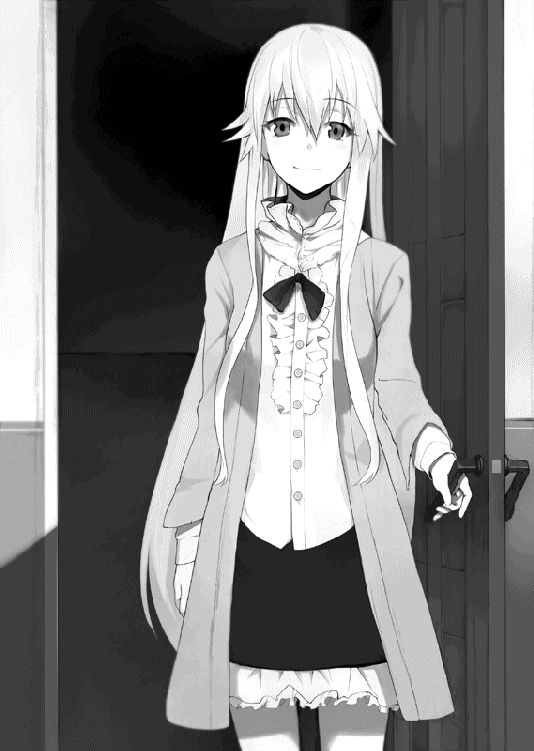
いつも黒セーラーの姿しか見ていなかった桜井にとって、普段着のアイラはとんでもなくかわいくて比喩でなく輝いて見えた。
「どうかな」
ちょっとうつむいたようにたずねるアイラに見とれたまま、桜井は呆然と声をこぼした。
「すごく、キレイです......」
「......もう、桜井クンったら」
照れるようなアイラの声を聞いて、桜井は我に返った。それからようやく自分が口走った言葉に気がつく。
「あっ、いえ、今のは違くって......いや違わないんですけど、その......！」
言葉をあいまいにしてなんとかごまかす。
もちろんその程度でアイラが許してくれるはずがない。
「違わないけど、なに？」
ニコニコとした笑みを隠そうともせずに聞いてくる。近づくと、ふわりといい香りがただよった。ヤバイ。早くも理性が崩壊しそうだ。
「こ、これ先輩のお母さんですよね！ いやーキレイだなー！」
「ふふ、ありがと」
強引な話の切り替え方だったが、アイラは許してくれたようだった。
写真は他にも何枚かあったが、どれもアイラとその母親のものばかりだった。
「あいつの写真ならないわよ」
桜井の視線を読み取ったのか、アイラが硬い口調で答えた。
「あいつって......やっぱり、お父さんなんですよね？」
「そうよ。あいつは、九重崎家に生まれたことが人生のすべてと思っているような、つまらない人間なのよ。だからアタシのことも、勇人のことも、九重崎家を継ぎ、繁栄させるための道具としか思っていなかったのよ。その点じゃ勇人のほうが運が悪かったかもね。いつでも常に一番を取れと言われ続けてきたから、あんなに性格が歪んじゃったんでしょうね」
クツクツと笑う。それは人の不幸を笑うかのようで、それ以上に自分を笑っていた。
「でもね、アタシも人のこと言えなかったわ。あいつに言われるがままに勉強して、怒られて。お母さんは褒めてくれたけど、あいつは一度も褒めることはしなかった。友達と遊ぶこともできなくて、だんだんと自分の境遇に疑問を持つようになったの。
それである日、家を抜け出して遊びに行ったのよ」
アイラが懐かしそうに窓の外を見る。
「でもアタシには外のことなんてよくわからなかったし、みんながどこでなにをしてるのかも知らなかった。知ってるのは、家以外には、学校だけ。だからアタシは学校に向かったわ。
教室に残ってる人はいなかったし、みんな部活をしてたから、結局アタシはひとりで校内を歩いただけだったんだけど。
でも、すごく楽しかった」
思い出を語るアイラの顔には微笑みが浮かんでいる。
「誰もいない教室、静かな廊下。見回りの先生なんかもいたりして、見つからないように隠れてた。
どれもがすごく新鮮だった。新鮮で、ドキドキした。
ちょっと時間がずれただけで、通い慣れていたはずの学校は、まったく別のものに感じられたわ。それでわかったの。学校がつまらなかったのも、家が楽しくなかったのも、全部アタシが悪かったんだって」
アイラの声には、どこか嬉々とした感情がこめられていた。
「だって、時間が変わるだけで、つまらなかった学校がこんなにも楽しくなったんだもの。
つまらないなと、楽しくないなと、思っているだけじゃなにも変わるはずがないわ。昨日がつまらなかったら、今日を楽しく。今日がつまらなかったら、明日を楽しくしなければいけなかったのよ。
だからアタシはそうやって生きることに決めた。おかげで家を追い出されちゃったけどね」
アイラの考えは、確かに一般的とはいえないだろう。しかしだからといって、それだけで家を追い出してしまうのはやりすぎのように感じられた。
桜井の疑問を感じ取ったのか、アイラが笑みを深めた。
「家が楽しくないから、どうしたら楽しくなるか考えてね、あいつに一泡吹かせてやろうって思ったのよ。ふふっ。あれは楽しかったわ」
あんまり聞きたくなかったが、話の流れからしかたなくたずねる。
「なにをしたんですか」
「あいつはいつも同じ湯飲みを使うの。なにかの高級なやつらしくて、お気に入りなんだって。ほら、古い陶器って内側がでこぼこだったりするじゃない。まるでなにかを隠してくれって言ってるみたいだったから、うすーく激辛唐辛子を塗っておいたのよ。飲み過ぎると命に関わるってくらい辛いやつをね」
桜井はあきれ果てた。
「発想がもう中学生じゃないですよ」
「そうとは知らずに飲んだときのあいつったら、普段はクールぶってるくせに大騒ぎしちゃって......あはっ」
にたあ、と愉悦の笑みを浮かべる。
どう見ても女の子が浮かべていい表情ではなかった。
「もちろんすぐにバレて怒られてね、だから今はこうして別荘で暮らしているってわけなのよ」
「そうなんですか。別荘で..................え？」
別荘、だと？
桜井家が楽に十軒は入るかもしれないほどの広大な家が別荘で、しかもアイラひとりのためだという。
どれだけ金持ちなんだと戦慄する一方で、冷静な自分がつぶやいた。
この広い家に、アイラは本当にひとりだったのだ。
「もちろん後悔なんてしてないわよ。ずっとあいつの言いなりになったまま、人形のように生き続けてたら、アタシはなんのために生まれてきたのかわからないじゃない。
ねえ桜井クンは、アタシたちはなんのために生まれてきたんだと思う？」
どこかで聞いた言葉だなと思ったら、昨日の屋上でのディベートで使われた言葉であり、初めてあったときに入部テストとしてけしかけられたディベートと似た内容だった。
「......幸せになるため、ですか？」
あのときのアイラは、たしかそう言っていたはずだ。
「そうね。アタシもそう思うわ。せっかく生まれてきたんだもの、つまらない毎日なんて過ごす意味がないでしょう。毎日ドキドキできて、心から楽しいなあって笑える。これ以上の幸せなんてあるのかしら？」
その答えは桜井にはわからない。
でも、アイラがなにを言いたいのかには気がついた。
「先輩、明日のことなんですけど――」
「もちろんイヤよ」
言う前に断られてしまった。
「学校に来るなって言うんでしょう。いくら桜井クンでも、そのお願いは聞いてあげられないわ。こんなところに閉じこもるくらいなら、死んだほうがマシだもの」
桜井はようやく、自分が部屋にまで連れてこられた理由に気がついた。
こんなところに閉じこもるくらいなら、死んだほうがマシ。
退学になる可能性を知ってても学校に来る理由なんて、アイラにとってはそれだけでいいのだ。
「でも、見つかったら退学ですよ」
「だからいいんじゃないの。ゾクゾクするわ。ひとりで学校を歩き回ったあのころを思い出すわね」
これがアイラと出会ったばかりのころならば、あきらめもついただろう。
だけど、今はもう、そんな気にはなれなかった。
「どうしてそんな――いくら先輩でも、誰にも見つからないなんて、不可能ですよ。そうなったらもう学校に来れなくなるんですよ。ディベートもできなくなるし、それに――」
――もう、アイラに会えなくなる。
その言葉こそ呑み込んだが、きっとアイラには伝わったはずだ。
それでもアイラは揺るがない。
「だからこそじゃない」
その声には意地を張るような強さも、無理をするような硬さもなかった。本心そのままのまっすぐな声。
この人はそうなのだ。
自分が楽しいと思うことをする。楽しいと思うためなら、なんだってする。
自分はこんなにもアイラのことを考えているのに、アイラはあいかわらずアイラのことしか考えない。まさしく、九重崎愛良は、九重崎愛良のために生きているのだ。
一緒に帰りたいと言ってくれた。このまま一緒にいたいと言ってくれた。うれしいと、ありがとうと言ってくれた。
どれが本当の言葉なのだろう。どこからがウソだったのだろう。最初から全部からかっていただけなのだろうか。
アイラの言葉に一喜一憂して、赤くなったり、青くなったりした。そのすべてがウソだったのかと思うと、楽しかったはずの毎日が、急速に色を失っていくような気がした。足なんかよりも、もっと大切な部分が痛みを訴えている。
「先輩は、なんのために学校に行っていたんですか」
まさか「桜井クンに会いたいからよ」なんて答えてもらえるとは思っていない。桜井自身にもどんな答えを期待しているのかわからなかった。
だけどたずねずにはいられなかった。
「もちろん遊びに行っていたのよ」
答えてから、誘うような目つきで桜井を見る。
「それとも、桜井クンのためって答えたほうがよかったのかしら」
そうつぶやく声は甘くて、耳に心地いい。頭の芯からしびれるような声も、今の桜井には響かなかった。
「どうしても学校に行くんですか」
「桜井クンは、アタシと会えなくなったら寂しくないの？」
甘い声でささやくように近づいてくる。
桜井は目を合わせていられなくて、視線をそらした。でもそれは、恥ずかしいからなんかではない。
「そういうことじゃなくて......」
人の意見なんて聞きやしない。それが九重崎愛良だ。
そんなことはわかっていた。わかっていたはずだった。なのに。
「でもね、桜井クンがどうしてもって言うのなら――」
床に手をついてにじり寄り、ゆっくりと声を響かせる。
薄いブラウスが大きく膨らみ、流れるような髪から甘い香りが漂う。
脳髄がしびれて卒倒してもおかしくない状況なのに、桜井の頭は別の思いでいっぱいだった。
「――もういいです」
自分がつぶやいたはずなのに、他人の声みたいに聞こえた。
こんなにもアイラを思っているのに、その半分も届いていない。こんなにもアイラを心配しているのに、まるで気にするそぶりがない。桜井のことなんて、まるで見ていなかった。
君がいるだけで幸せになれる、と歌ったやつらがいた。
そんなもの、机上の空論だ。
振り向いてくれないことがもどかしくて、気づいてくれないことが悲しくて、遊ばれているだけなのが悔しくて。
アイラがにじり寄る動きを止めた。
「......桜井クン？」
「もういいって言ったんだよ！」
叩きつけるようにして叫ぶ。
「どうせ先輩は、俺がなにを言っても聞かないんでしょう！ こんなに心配してるのに、ゾクゾクしたいからなんて、そんな......そんな勝手な理由で......！」
あふれ出した涙のせいで、それ以上は言葉にできなかった。
アイラは黙っていた。黙ったまま床に座り込んで、桜井を見上げていた。ぼやけた視界のせいでその表情まではわからなかった。
胸にずきりとした痛みが走る。自分の言葉をかえりみる余裕もなかった。立ち上がると、逃げるようにして部屋を飛び出した。
桜井を呼ぶ声が聞こえた気がしたが、振り切るように足を早めた。
頭の中にぐちゃぐちゃとした感情が渦巻いている。痛くて泣いているのか、悲しくて泣いているのか、自分でもわからない。まともな思考なんてどこにもなかった。早足だった歩みは、いつしか全力で駆けていた。
追いかける足音は、廊下の途中で聞こえなくなった。
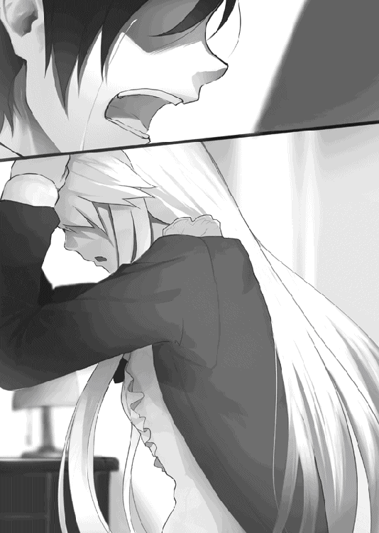
愛とは見返りを求めないものだ、と昔の偉い人は言ったらしい。
郡山なら、大好きなマンガのセリフを引用して「女のウソは黙って許せ」とか言うんだろう。
まったくその通りだと桜井も思う。
女の子の部屋に行って、怒鳴りつけて帰ってくるなんて、男として以前に、人として器が小さすぎる。
家に帰ると、ご飯も食べずにベッドへ向かった。夢なんて見なかったし、見たとしてもきっと忘れてしまっただろう。そのまま死んだように眠った。本当に死ねればいいのにと思っていた。
虫けら以下の存在になって、ぐちゃぐちゃの粉々になって跡形もなく消え去ればいいのにと思っていた。
そうすればもうこんなに辛い思いはしなくてすむし、誰にも迷惑をかけないですむ。
人はいつだって無茶な願いをする。だから神様は叶えないのだろう。
どんなに辛くても、気分が落ち込んでいても、明日なんてこなければいいと心から願っていたとしても、時間になれば自然と目が覚めてしまった。学生の悲しい習慣だ。
時間を確認しようと携帯に手を伸ばす。
真っ暗な画面を見て、昨日の夜に電源を切ったことを思い出した。
つかんだ携帯を投げ捨てる。
自然と重い息が吐き出された。
昨日はアイラにひどいことをしてしまった。ひどい、などという言葉で言い表せるものではなかったが、桜井は他に適切な表現を知らない。
きっと怒っているだろう。アイラからのメールや電話が怖くて、だから電源を切ったのだ。
自らの情けなさに苦笑もわいてこない。朝から二度目のため息をつく。
「最低だな、俺は」
昨日の暴言も、アイラから逃げていることも、そこまでわかっていながらもなお携帯の電源を入れる勇気がわいてこないことも。すべてが情けなくて、枕の中に深々と頭を沈めた。
自分はつくづくヘタレなのだと思う。今度こそ郡山に殴ってもらおうか。
三度目のため息をつこうとしたところで、部屋の外から桜井を呼ぶ声が聞こえた。早く起きないと遅刻するわよ、ということらしい。
どんなに気分が沈んでいても、自己嫌悪の真っ最中でも、時間が来れば部屋を追い出されてしまう。
学生の悲しい現実だ。
いつもの通学路を、オドオドとしながら歩いた。目はどうしてもアイラを探してしまう。うっかり会ってしまわないように祈りながら学校まで来ると、正門先の掲示板に生徒が集まっていた。「あいかわらずだな」とか「さすがにちょっと重くなったな」「なんか残念」などといった声が上がっている。
なんだろうかと、桜井は最後尾からのぞきこんでみる。
掲示板には一枚の紙が張り出されている。簡潔な文章で、アイラが三日間の停学処分になったと書かれている。
桜井は目をそらしてその場から立ち去った。
ささやきあう生徒たちの声が、まるで自分を非難しているように聞こえて、逃げるように自分の教室へと向かった。
教室内でもアイラの停学についてはけっこうな話題になっていたらしい。
桜井が入ると、誰もが話を聞きたそうな視線を向けてきたが、とてもそんな気にはなれなかった。断ち切るように強く視線をふって、誰とも目を合わせずに自分の席へ向かう。
それだけで事情を察してくれたようで、物問いたげな視線は途絶えた。
とはいえ、クラスの誰もがそこまで空気を読んでくれるわけではない。席に着くと同時に近づいてくるやつもいた。
「おうおう桜井、朝から話題の総取りじゃねーか。人気者だな」
言うまでもなく郡山である。
朝からムダに高いテンションで話しかけてきた。
「ディベート部の先輩が停学になったらしいじゃねえか。昨日呼び出されていたのも、その件でなのか？」
「まあ、そうだよ」
歯切れ悪く答える。
この件にはあまり触れないでほしいという意思表示なのだが、郡山にそこまでの心の機微をわかれというほうが無理だろう。
半ばあきらめていたのだが、意外にも郡山は、悟ったような表情で桜井の肩を叩いた。
「わかってるって。みなまで言うなよブラザー」
「......うわ、きもっ」
「あいかわらずひどいな！」
ブラザー、などと本当に言う人間がいるとしたら、それは郡山だけだろう。
「で、なにがわかるっていうんだよ」
「美人の先輩と会えなくて寂しいんだろ」
確かにアイラとは三日間会えないことになる。
でもそれは、アイラがおとなしく家に閉じこもっていたらの話だ。
「桜井君」
やや落ち着いた声に顔を上げる。
心配顔の新村が立っていた。
「九重崎先輩のこと聞いたよ。桜井君は大丈夫なの？」
「まあ、平気だよ」
桜井の答えに、新村も少しだけ表情をゆるめた。
「桜井君にはなにもないみたいだからよかったけど、ただ――」
なにかを言いよどみ、ためらってから告げた。
「部活の先輩たちが言ってたの。『あの九重崎がこのまま引き下がるはずがない』って」
まったくその通りだと桜井も同意した。
本当に、まさしく、このままおとなしく引き下がるはずがない。
「私も詳しくは知らないんだけど、停学中にさらに問題を起こしたら、最悪の場合、退学だってあるって」
新村は真剣に心配していた。
新村からしてみれば、不真面目なディベート部なんてなくなったほうがいいだろう。中心人物であるアイラのことなんて、心の底から嫌っていてもおかしくはない。
なのに、アイラを心配しているという。
桜井の口から嘲笑がもれた。
「俺はそんなに落ち込んでいるように見えるのか」
誰に向けての言葉ではなかった。
新村と郡山は顔を見合わせ、やがて新村が小さくうなずいた。
「うん。なんか、すごく辛そうだよ」
たぶん、そうなのだろう。自分が辛いという自覚はある。
でもそれは、新村が思っているような理由ではない。もっと卑屈で、自己中心的な理由だから、どうしようもなく落ち込んでいるだけだ。
答えられない桜井を前にして、新村と郡山はもう一度顔を見あわせる。「こりゃ重傷だな」と郡山がつぶやいた。
珍しく郡山の言うことも当たっていた。桜井の携帯は、未だに電源が切られたままだった。
気がつくと昼休みになっていた。時間の記憶がまるでない。
「おい桜井のリア充野郎」
「......なんでいきなり罵倒されてるんだ」
「向こうでかわいい女の子がお前を呼んでるぞ」
郡山が教室の入り口を指し示す。
扉の陰に体を半分隠すようにして、橘が立っていた。桜井と目が合うと、ぺこりと頭を下げる。しおらしい態度に郡山が舌打ちを響かせた。
「なぜだ、なぜ世界は桜井ばかりを中心に回っているんだ......！」
なにやらうめいている郡山を置いて、桜井は橘の元に向かった。
橘が他人の教室にまで来るのは珍しい。放課後に桜井を待っているときでも、教室内に入ってくるどころか、室内に視線を向けることさえなかったほどだ。
「どうしたんだ、なにか用でも......」
問いかける桜井を、橘のつぶらな瞳がじっと見上げた。
もう何度も向けられた視線に、桜井は今さらのように気がつく。
なんの用かなんて、聞くほうがどうかしている。今のこの状況では、桜井のところに来る理由なんてひとつしかない。
「......悪い、連絡するって言ったのに、してなかったな」
昨日、橘と別れる際に、呼び出された理由を報告すると約束していた。それをたった今まで忘れていたのだ。
新村なら真っ先に非難するのだろうが、橘はゆるやかに首を振るだけだった。
「それはかまいません。私は気にしていませんし、アイラ様があんなことになったあとでは、しかたのないことだと思います」
むしろ橘のほうが恐縮したように謝ってくる。
そういえば、橘からのメールは最初の一通だけで、その後はメールも電話も、一度もなかった。すぐにでも事情を聞きたかったはずなのに、こらえてくれたのだろう。
郡山たちには言わなかったが、橘は無関係ではない。教えておかなければならないだろう。
県の教育委員会で自分たちの話題が出たらしいこと、先日の体育館や昨日の屋上でのディベートの件で呼び出され、自分は初犯なので注意のみで終わったが、アイラは停学処分となってしまったことなどを告げた。
「それなら、私にも責任があります」
声こそ小さいが、一言一言をはっきりと告げる、力強い意志に満ちた声だった。
「体育館のときは私もディベートをしました。桜井君だけの責任ではありません。二人でアイラ様を助けましょう」
「ああ、そうだな......」
橘のまっすぐな言葉を、桜井は受け止められなかった。
心配させるような態度は取りたくなかったが、力強く宣言する橘に比べると今の自分は惨めすぎる。とても目を向けていられなかった。
「......桜井君？」
戸惑った声が聞こえる。
わかっていても、それでも、言えるような話ではない。「悪い」と小さくつぶやくことしかできなかった。
二人のあいだに沈黙が落ちる。
耐えきれなくなって、桜井は背中を向けた。教室の中に逃げ込む。その背中に橘の声が響いた。
「聞かせて、くれないでしょうか......」
橘の小さな手が、ぎゅっと桜井の制服をつかんでいた。
「きっと、辛いことなんだと思います。ですから無理にとは申しません。それに、聞かせてもらっても、私にはなにもできないでしょうから......」
背中ごしに聞こえる声は小さくて、途切れそうになりながらも、それでもつかむ手を離そうとはしなかった。
「でも、聞いてもらうだけでも、楽になることはあると思います。それくらいならば、私にもできます。ですから、もしよろしければ......」
か細い声が静かに響く。
「私なんかでよろしければ......桜井君の力に、ならせていただけないでしょうか......」
そう告げることは、橘にとっては相当な勇気が必要だったのだろう。それきり黙ったまま、つかんでいた手も離れてしまった。
橘の懸命な態度に心を打たれたというのもあった。だけどそれ以上に、桜井自身も、自分に嫌気が差していた。
鬱屈とした感情を溜め込んだまま、どうすることもできない自分にイラだっていた。
吐き出して楽になりたいという願望が膨れあがる。
そうするともうどうにもならなかった。橘を振り返ると、開いた口から勝手に言葉があふれ出した。
「先輩は、俺の言うことを聞いてくれないんだ」
出てきた言葉に桜井自身も驚く。
「退学になるかもしれないからガマンしてくれって言っても、スリルがあるから来るって言うし、俺は本気で心配しているのに、先輩は笑ってばかりで全然本気にしてくれなくて――」
吐き出しながら気がついた。
自分は怒っていたのだ。
こんなにも心配しているのに、アイラは学校に来るという。こんなにも思っているのに、からかってばかりで相手にしてくれない。なんだかそれは不公平に思えたのだ。
自分と向き合ってくれないことが、悔しくてたまらなくて、それで腹を立てていたのだ。
「俺はずっと先輩のことを考えていたのに、先輩は少しも俺を――」
言葉が途切れる。
桜井が話しているあいだ、橘は一度も口を開かなかった。目を閉じて黙ったまま、ぎゅっと口元を引き結んでいた。
情けないことを話したと自分でも思う。きっと軽蔑しただろう。橘は閉じていた目を開き、まっすぐに桜井を見た。
「私は、今の桜井君は好きではありません」
少し震えた硬い声だった。
わかっていても、それでも橘に言われると、さすがに堪える。
「桜井君は、きっとアイラ様に伝えたいことがあるはずです」
「そうかもな......」
「謝りたいなら、謝るべきです。伝えたい言葉があるのなら、伝えるべきです。思っているだけではなにも変わらない。どんなに辛くても、一歩を踏み出さない限り、なにも変わらないんです。
そう教えてくれたのは、桜井君でした」
意外な言葉に顔を上げる。
橘は桜井を見ていた。うるんだ瞳を精一杯に見開いて、ひたむきに桜井を見つめていた。
「桜井君は言いましたか？ アイラ様に、その......心配していると」
「言っては、いないな。でも、わかるだろう。心配してることくらい」
アイラは人の心を見抜く術に長けている。桜井の単純な感情くらい、あっさりと見抜くだろう。
「そうかもしれません。でもそうじゃないかもしれません。前に麻衣ちゃんが教えてくれた言葉があります。
言葉なんてものは不完全で、自分の思いを伝えるのには不向きなのだと。不十分だったり、誤解を招いたり、適切な表現がなかったりします。でも私たちは、他人の心の中は見えません。相手と向かい合って言葉を交わす以外に、思いを伝える方法はないんです」
「......なんか、芝原らしくない言葉だな」
「好きな小説の中に出てくる言葉だと言っていました」
芝原の意外な趣味に驚いたが、橘と仲良くなれたのも、共通の趣味があったからなのだろう。
橘が今さらのように、顔を赤くしてうつむいた。
「すいません、私なんかが偉そうに......」
「いや、そんなことないよ」
実際、橘の言う通りだった。
こんなに心配しているのに、どうして応えてくれないのか。
こんなに思っているのに、どうして気づいてくれないのか。
そんなの、まるでストーカーの理屈ではないか。
思いが強ければ、テレパシーのように伝わるのだと、ありもしない幻想を抱いていた。
もう一度会う勇気がないのを、アイラのせいにして逃げていたのだ。
「本当に、どうしようもないな、俺は......」
「い、いえ、そんなことないです......。私も、全然、伝えたいことを、伝えられないままです......」
気を使ってくれているのだろう。橘がうつむいたままつぶやいた。
もう苦笑するしかなかった。自分はどこまで他人に迷惑をかければ気がすむのだろうか。
「橘、俺を一発殴ってくれないか」
「え、ええっ!? そ、そんなこと......できないです......」
まあそれはそうだろう。郡山はフルスイングで殴りかかってきたが。
「変なこと言ってゴメン。でも、おかげでなんとなく助かったよ。ありがとう」
橘は首を振る。かまわないという意味だろう。
「橘もがんばれよ。できることがあったら応援するからさ」
「......え？」
きょとんとした目を向けてくる。
「さっき言ってたじゃないか。橘も誰かに伝えたいことがあるんだろ？」
「..................え、ええっ!?」
なぜだか顔を赤くして驚いている。そんなに驚くような推理だっただろうかと、桜井は少しだけ不思議に思った。
「あ、あの、えっと......その......」
橘は何度も迷ったあげくに、小さな言葉を口にする。
「わ、わかりました......。桜井君が勇気を出したら......私も勇気を出します......」
真っ赤な顔を隠しながら、なんとかそれだけをつぶやいた。
「そっか。じゃあなおさら俺はヘタれてらんねーな」
たぶん、いま一番勇気を出したのは橘だろう。桜井の背中を押すために、ここまでの決意をしてくれたのだ。その思いに応えられなかったら、もう本当に男ではない。
決意を胸に秘め、桜井は携帯を取りだした。
緊張する手で電源を入れる。
いくつかのメールが入っていたが、アイラからはなかった。
ほっとする一方で、なんの連絡もないことに落ち込んでしまう。それでも桜井はアイラの番号を呼び出し、通話ボタンを押した。返ってきたのは「電波の届かないところにいるか、電源が入っていないためかかりません」というものだった。
考えてみれば、アイラは自宅待機中だ。教師が家に行っているのかもしれない。電源を切らされている可能性は高かった。
そう告げると、橘は顔色を曇らせた。
「私が聞いた話ですと、アイラ様は体調が優れないので、ご自宅で休んでいるという話でしたが......」
「先輩が休んでいる......？」
昨日まではそんな様子はなかった。
倒れる原因があるとするならば、きっと桜井のせいだろう。
でも、アイラは言っていたのだ。もう一度部屋に引きこもるくらいなら、死んだほうがマシだと。
イヤな予感というものは、たいてい当たるものだ。
「そうだ。アイラは必ず来る」
不機嫌な低い声が響く。金色の髪を逆立たせ、制服を着崩した勇人がやってきた。
「必ず、なんですか？」
兄である勇人が言うのだから間違いはないのだろうが、それでもたずねずにはいられなかった。
もしかしたら来ないかもしれない、という願望は少なからずある。
アイラが来なければ、それで全部解決するのだ。
けれども勇人の答えは変わらなかった。
「必ず来る。アイラが俺に頼むなんてよほどのことだからな」
「先輩が、勇人さんに頼みを？」
あんなに仲の悪かった二人なのに？
「先輩は、なにを頼んだんですか？」
驚きよりも、純粋な興味のほうが強かった。アイラが勇人に頼むなんて、確かによほどのことだろう。
勇人はむっつりと押し黙ったまま、鋭い目つきで桜井を見下ろしていた。
アイラに似て怜悧な顔立ちをしているから、無表情でにらまれるとかなり怖い。横にいるだけの橘が、怯えるようにして桜井の背後に隠れた。
「あの......」
沈黙に耐えきれなくなった桜井が口を開く。勇人は言葉を選ぶようにしてゆっくりと答えた。
「アイラはアイラのために生きている。それ以外に反発の方法を知らないからな」
勇人の言葉は、桜井には理解できなかった。まるでわざと難しく言っているようにも聞こえる。
もしもそれが、本当は言ってはいけないことをそれでも伝えようとした結果なのだとしたら。それはつまり、それだけアイラのことを理解しているということなのではないだろうか。
「あの、勇人さんは、もしかして......」
言いかけた言葉は、勇人の鋭い視線にさえぎられた。
「俺の話だ。勘違いするな。アイラのことなんか知るか」
不機嫌な声で言い捨てる。さすがに兄妹なだけあって、人の心を見抜くのには長けていた。
だけどやっぱり、桜井には不思議なことがあった。
勇人はどうしてディベート部に入っているのだろうか。
アイラが嫌いで顔も合わせたくないのなら、ディベート部なんか辞めてしまえばいい。実際に勇人はディベートの練習には一度も参加していない。
ディベートが好きなわけでもないのなら、なぜ部活に入っているのだろうか。
沈黙したままの桜井に向けて、勇人がもう一度視線を突き刺した。
「勝手に想像するな。この程度で音を上げられるとこっちが困るだけだ。あのクソ野郎が正しかったことになるからな」
いったいなんの話なのか、クソ野郎とは誰なのか。聞くひまも与えずに勇人は背中を向けて、自分の教室に戻っていった。
通りがかった一年生が、勇人の姿を見て驚くように道を空けている。不機嫌なときの勇人を見れば、誰だって同じ反応をするだろう。
勇人はたぶん、本当にアイラが嫌いなのだ。でも、そうだとしても、アイラのために行動できる。今みたいに桜井をけしかけて、アイラを助けに行かせることができるのだ。
それは矛盾してて、不条理な行動かもしれない。でも決して間違ってはいない。
今日のことを勇人は誰かに言ったりはしないだろうし、アイラが知る機会もないだろう。
見返りを求めないとはこういうことなのかもしれないと桜井は思った。
去っていく勇人の背中は、誰よりも大きく見える。きっと自分には一生できないだろう。
押し黙る桜井のところに、郡山がやってきた。
「さっき連絡があってよ、校内で何人かが、九重崎先輩を目撃したらしいぜ」
まったく予想通りだった。
本当なら額に手を当てて「あちゃー」などとつぶやきながら天井を見上げる場面なのかもしれなかったが、桜井の口元に浮かんできたのは、隠しようもないほどの笑みだった。
本郷と勇人の二人に託されたのだ。二人のようにはなれなくても、二人のような大きな人間になりたいと思うほどには、桜井の中に火がついていた。
「郡山、アイラ先輩がどこにいるのかって、わからないか？」
「それがよ、九重崎先輩を見たって噂は流れてくるんだが、どこにいたとか、どこに向かってるとか、そういう話は全然ないんだよ。どうやら来ているらしいって噂が流れてくるだけで」
今は昼休みだ。校庭も校舎内も生徒であふれかえっている。裏口を使ったにしても、柵を乗り越えたのだとしても、誰にも見つからずに侵入するなんて不可能である。
いったいどうやって入ってきたのか。
考えようとして、桜井はすぐにやめた。入ってきてしまった以上、その方法を今さら考えたところで、もう意味のないことだ。それにアイラのことだから、どうせろくでもない方法なのだろう。あれこれと想像するよりも、本人に直接聞いたほうが早い。
それに、いま優先するべきはそんなことではなかった。
橘が目に見えてかわいそうなほどにうろたえている。噂として流れている以上、増岡の耳に届くのも時間の問題だろう。増岡より先にアイラを見つけ、退学を阻止しなければならない。
だが、来たのがバレたから帰ってください、なんて言って素直に聞いてくれるような性格ではないことくらい、十分すぎるほどにわかっている。
アイラを説得し、増岡に見つからないように家へと帰ってもらう。
言葉にすれば単純だが、実行するのは簡単ではない。
だけど、それは桜井ひとりでは無理なだけであって、みんなの助けがあれば可能だった。
携帯を手に取り、本郷に連絡を入れる。わずか二コールでつながった。
『遅かったな桜井祐也君』
相変わらずの静かな口調だが、その声はわずかに固い。さすがに怒っているのだろう。桜井は素直に謝った。
「すいません部長、ちょっと、その、色々ありまして。それに、頼まれたのに守れませんでしたし......」
『まあいい。事情は理解しているつもりだ。それで、用件は謝罪だけかね』
「いえ、実は頼みたいことがありまして――」
桜井は、つい先程考えたばかりの用件を伝えた。
それは桜井では無理だった。橘にも当然できないだろうし、きっとアイラでも不可能だ。本郷でなければできないだろう。
頼んでおきながら言うことではないが、あまり穏やかな方法とはいえない。本郷の将来に傷をつける可能性だってある。
だからここで断られれば計画は失敗なのだが、本郷は迷うそぶりも見せなかった。
『いいだろう。引き受けた』
「ありがとうございます！ だけど、いいんですか、こんなこと......」
本郷はまるで気にしていないようだった。
『私は私にできることをすると言っただろう。この程度なら問題はない。それに、政治家が民を思うのは当然だ。自分の保身を優先するようでは、公人とは言えないからな』
相変わらずの答えに苦笑が浮かぶ。電話の向こうで本郷が『だが』と付け加えた。
『政治家としてだけではなく、私個人としても、九重崎愛良君にはこの学校に残ってもらいたいと思っている。それが彼女にとっても、ひいては日本国にとっても、有益であろうからな』
その言葉はひどく冷淡で、非情に聞こえるかもしれない。しかし桜井には、アイラを見守る静かな優しさが感じられた。言葉がドライなだけで、本郷は紛れもなく、アイラのためを思っているのだ。
橘や勇人と同様に、本郷もまたアイラを心配しているのだろう。
こんなにも色々な人に心配されているのだと、アイラは知っているのだろうか。知っていて、それでも退学になってもかまわないと言うのだろうか。
桜井は礼を言って通話を切った。
となりで心配そうに成り行きを見守っていた橘に向き直る。
「悪い、どうしても先輩に言わなければならないことがあるんだ。手伝ってくれないか」
橘はすぐにうなずいた。
「はい。私にできることでしたら」
桜井は橘にふたつのことを伝えた。ひとつは本郷部長に頼んだこと。もうひとつは橘自身への頼みだ。
「......頼めるか？ 無理ならそう言ってくれてもかまわない。方法は他にもあるからな」
実を言えば他の方法なんて考えていない。だけどこれは桜井の問題だ。橘に無理はさせられない。
橘はうつむき、すぐに顔を上げた。
「いえ、大丈夫です。桜井君が勇気を出すのですから、私もがんばります」
その言葉には確かな決意がこもっていた。
「そうか、悪いな」
橘はゆるやかに首を振る。
「これくらい、大したことではありません。大丈夫です」
そう告げると、ペコリと頭を下げて自分の教室に戻っていった。
これで準備はそろった。あとは時が来るのを待つだけだ。
結局桜井にできたのは、人に頼むことだけだった。
でも、ひとりではできなくても、二人でならできるのならば、ひとりよりも二人のほうが世界は面白いということだ。
毎日がつまらないだなんて言わせない。自分たちが本気を出せば、こんなにも面白くできるのだと思い知らせてやる。今日も、明日も、あさっても、アイラひとりでは到底かなわないほどに楽しませてやる。
この学校以上に面白いところなんかないと、わがままな先輩に教えてやるのだ。
放課後になって、郡山がなれなれしく近づいてきた。
「おう、聞いたぜ桜井。またなにかやらかすんだってな」
面白そうに笑みを含ませている。
本郷に頼んでまだ二時間ほどしか経っていない。それなのにもう郡山にまで情報が流れてくるあたり、さすがというべき手際だった。
「お前もよくやるよな。九重崎先輩が停学になったばかりだっていうのによ」
「やめるなら今のうち、って新村なら言うんだろうな」
「新村だったらもう部活に行ったぜ」
見逃してくれた、ということだろうか。
あるいはあきれ果てたのかもしれない。
「自分でもバカなことをしてるって思うしな」
どんどん怖いものがなくなっていくのは、アイラと一緒にいた影響なのだろうか。
「よし桜井。この俺がいいことを教えてやろう」
「まったく期待なんてしてないけど、万が一ってこともあるからな。一応頼む」
「バカは死んでも治らねえんだ。だったら悩むだけ無駄だろう。やるしかないんだよ。俺たちはな」
ああ――。と、桜井の中でなにかが吹っ切れた。
確かに自分はバカなのだ。アイラのように人の気持ちを見抜くなんてできないし、橘のような勇気もない。
誰かに教えてもらい、また別の誰かに背中を押してもらって、それでようやく前へと足を踏み出せる、どうしようもないヘタレなのだ。
ここまで来て、それでも前へと進めないようなら、そいつはもう死んだほうがいい。
なにをどう悩んだところで、もうやるしかない。だったら悩むだけ無駄。まったく、郡山の言う通りだった。
「なあ郡山、今さらなんだけどさ」
「なんだよあらたまって」
誇らしげな郡山に向けて、しかたなく桜井は言ってやった。
「自分がバカだって自覚あったんだな」
「素晴らしい親友に対してかけるべき言葉はもっと他にあるだろ!?」
もちろんあるが、それは口にしない。
ブツブツと文句を言う郡山に向けて、短い言葉を投げかける。
「郡山」
「まだなにかあるのかよ!?」
「悪いな」
短い一言でも、それは確かに感謝の言葉だった。
「お、おお。なんだよ。気にすんなってそんなこと。俺たち親友だろ」
なんだか激しくうろたえながらも、すぐにさわやかな笑顔となって手を上げる。きっと郡山の頭にはもう、細かいことなんて残っていないだろう。
こう見えても友人思いのいいやつなのだ。バカだけど。
時計はもう三時を回っていた。
みんな部活に行くか帰るかして、教室内に残っているのは桜井しかいない。
そろそろ時間だった。本郷からの連絡はまだないが、いつまでも待っているわけにはいかない。
席を立ち、静かな廊下へと歩き出した。
いくら広い学校といっても、誰にも見つからないまま隠れていられる場所は限られている。アイラがいるであろう場所はすでに見当をつけていた。
階段を上がり、合い鍵を使って新校舎屋上へと入る。
そこには、誰もいなかった。
傾きはじめた日の光と、ゆるやかに抜けていく風と、遠くに響く生徒たちの声以外に、なにもない。
読み違えたか――？
桜井の中に焦りが芽生える。
どんなに完璧な計画を立てても、アイラと会えなければ意味がない。
屋上はここ以外にもある。駆け出そうとした桜井は、足下に落ちる影に気がついて空を見上げた。
「......先輩」
屋上に建つ給水塔の一番上に、金色の髪をたなびかせながらアイラが座っていた。
現れた桜井を見ても、アイラは驚かない。静かというよりは、感情を映さない瞳で桜井を見下ろしていた。
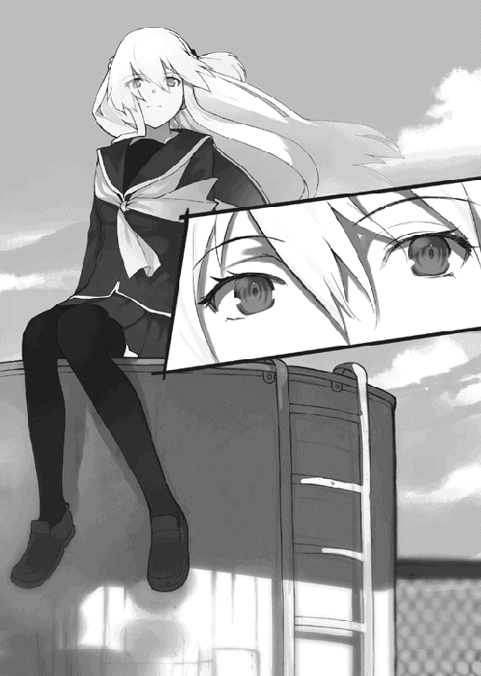
「桜井クン――」
アイラの声が風に流される。
二人の距離は遠く離れていて、桜井には歩み寄ることができない。そのうちにアイラが唇をとがらせて不満顔を作った。
「桜井クンなら、もっと早く見つけてくれるって思ったのにな」
「もしかして、待っててくれたんですか？」
アイラは答えず、給水塔の一番上から飛び降りた。二メートル以上はある高さでも危なげなく着地する。
「待ってたもなにも、桜井クンに言いたいこと、いっぱいあるんだからね」
少しすねるような口調が意外にもかわいくて、小さな笑みを浮かべてしまった。慌てて隠して、なにを言われるのだろうかと身構える。
体を硬くする桜井に向けて、アイラは微笑を浮かべた。
「でも、そのまえに桜井クンの話を聞かせてほしいな。アタシを探してくれたんでしょう？」
誘うようにささやく。
「ええ、まあ、そうですけど」
小さな笑みを苦笑に変える。
桜井としても、先に話すほうが都合がいい。
言いたいことも聞きたいこともたくさんあったが、まずは簡単な質問から始めてみた。
「先輩はどうして学校に来たんですか」
逆にアイラのほうがこの質問を予想していなかったようで、しばらく桜井を見つめていた。
たしかに、アイラと桜井のあいだには「もっと先に言うべきこと」があるのかもしれなかったが、桜井にとってはどうしてもたずねておかなければならなかったのだ。
アイラは答えを探すように視線をさまよわせた。
「それは、言ったでしょ。見つかったら一発で退学なんて、こんなにゾクゾクするシチュエーション、めったにないわよ。このチャンスを逃すなんてもったいないじゃない」
たぶんそう答えるだろうと思っていた。だから驚きもしなかったし、怒りもしなかった。
退学になっても、アイラは気にしないのだろう。退学になって、自分とは会えないような場所に行っても、そこで新しくゾクゾクすることを見つけ出して、楽しい毎日を送るのだろう。
胸が締めつけられる。今すぐにでも叫びたかった。
ふざけるなと怒鳴りつけて家に連れて帰れたら、どんなにいいだろう。でもできないのだ。それではなにも解決しない。
吐き出しそうになる思いを呑みこんで、別の言葉を口にした。
「先輩、そろそろ部活の時間です。ディベートでもしませんか」
「え？」
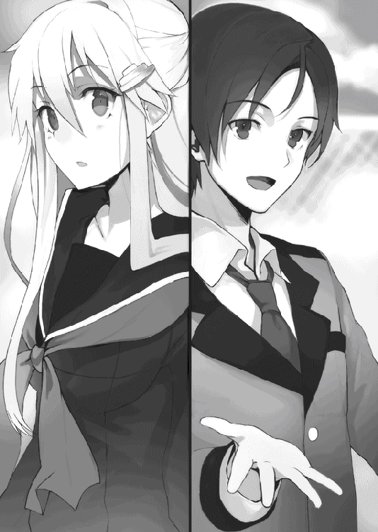
アイラが本当に驚いた表情というのも珍しい。
いいものを見たとほくそ笑みながら、桜井はポケットの中の紙を広げる。教室で待っているあいだに考えておいたのだ。
「規制は必要悪である。是か否か」
法治国家である日本にとって、規制は数多い。
法律は国を国として機能させるために必要だが、数千ページに及ぶ六法全書の中のすべてが必要なのだろうか。中には不要なもの、意味をなさないもの、害悪でしかなくなったものもあるのではないだろうか。
法を問うテーマは、ディベートにおいても数多い。
「肯定側が俺、否定側が先輩でいいですか」
「あら、拒否権はないの？」
「逆でもいいですけど......」
アイラの性格からいって、肯定側をやろうなんて思わないだろう。予想通りアイラは首を振った。
「せっかく桜井クンが考えてくれたんだもの。それでいいわ」
「立論八分、反論、再反論および総括は各四分です」
「かまわないわ」
「では――」
桜井は、自分とアイラのちょうど中間となる位置にカバンを置いた。肯定側と否定側をわける境界線のように。
中から取りだしたのは一本のマイクだった。
「ディベート部のディベートですから、ちゃんと校内に放送しないといけませんよね」
笑みを向ける桜井に、アイラもニヤリと笑みを返す。
「桜井クンもわかってきたじゃない」
わかってきたというよりは、わかってしまったというべきか。
複雑な気分で苦笑を浮かべつつ、手にしたマイクの電源を入れた。
「放送をお聞きのみなさまこんにちは。これよりディベート部のディベートをはじめます」
マイクに向けて朗々と声を張り上げる。
「場所は、事情があって言えません。どんな事情かは、だいたいの人は知っているでしょう。知らない人も、察していただけると助かります」
いつもと同じように語りかけた。アイラは面白そうに桜井を見ている。
「今回のテーマは『規制は必要悪である。是か否か』です。肯定側はディベート部一年、桜井祐也。否定側は......ディベート部期待の新人、ということにしておいてください」
どうせ隠せるものでもないが、念のためというやつである。
「ではこれより、肯定側の立論をはじめます」
進行役がいないので、全部自分でやらなければならない。自分で自分を紹介するという状況に妙な気分を味わいつつ、桜井は思考を切り替えた。
遊び半分のふぬけた気持ちでアイラとディベートをすれば、容赦なく叩きつぶされるだろう。絶対に勝ってやろうなどと思い上がっているわけではないが、多少はアイラを本気にさせられなければ、挑んだ意味がない。
「ではまず定義からはじめます。今回のテーマで不明瞭なのは『規制』と『必要悪』でしょう」
誰が、なんのために、どう規制するのか。
それは国に限った話ではない。地方自治体や都条例の話から、スポーツのルールまで含まれる。そして必要悪というからには、なにかを犠牲にして、なにかを得ているのだろう。
そのメリットとデメリットを比べるディベートになるはずだ。
「ディベートを通じて高校生活を豊かにしたいと考えている自分としては、今回のテーマは、私たちが通うここ縦浜高校にちなんだものにしたいと考えています。
ちょうど今の縦浜高校には、規制に関する大きな話題がふたつあります。その中のひとつは、全校生徒にとっても関心の高いものでしょう。
そこで、今回のテーマは『校内での不純異性交友は禁止するべきである。是か否か』にしたいと思います」
桜井の発言に対し、校舎は静寂を保ったままだった。どよめきが起こるとはさすがに期待していない。かまわずに桜井は続けた。
「増岡先生が部活動に口を出して、男女別に練習させていることはみなさんもご存じかと思います。その際に増岡先生はこう言っていたそうです。『学校は出会い系サイトではない。学校とは勉強する場であり、学生の本分は勉学である』と」
事前にそこまで考えていたわけでもないのに、増岡理論がスラスラと出てきてしまう。胸クソの悪い話だが、繰り返し聞かされていたあのホームルームも、多少は有効であったのかもしれない。
それは教育というよりは洗脳と呼ぶべきものなのかもしれないが。
「増岡先生は部活動を男女別に分けましたが、それでは効果は中途半端です。やるならもっとしっかりと、学校全体を分けるべきでしょう。
ちょうど縦浜高校には旧校舎と新校舎があります。部活だけでなく、授業も、日常生活も、全部男女別にすればいい。そのための方法として、肯定側は『旧校舎を男子校、新校舎を女子校とするべきである』と提案します」
この提案にはひとつの大きな問題がある。それは実現性の問題だ。
現実的に考えて、縦浜高校を男子校と女子校に分けるのは不可能である。大混乱となるのは確実だ。それは生徒たちにとって最大のデメリットとなるだろう。
しかしアイラは実現性の問題に終始するディベートは好まないし、桜井もその展開は望んでいない。あまり気にする必要はないだろう。
しかしそれはそれとして、定義の内容はしっかりと決めておかなければならない。
「男子校と女子校で生徒間の出入りは禁止とします。しかし学校外での行動までは規制しません。学校は勉学の場であり、恋愛感情が勉強の邪魔になるから規制するためです」
ディベートで最も重要なのは「定義」であるともいえる。肯定側と否定側のあいだにしっかりとした共通認識を作っておかないと、解釈の違いによるかみ合わないディベートとなり、グダグダのまま終わってしまうからだ。
「さて、このような提案をした理由は、大きく分けてふたつあります。ひとつ目が、すでに述べましたように『恋愛感情は勉強の邪魔になるから』。もうひとつが『教育は日本の重要な資源であるから』です」
まず最初に理由を述べるのは、自分の主張をわかりやすくまとめると同時に、あらかじめディベート内容を簡単に伝えておく役目もある。
極端な話、ここでの発言だけでその後のディベート内容がすべて想像できると完璧だ。
だけど、そんなにうまくいかないから、しかたなく長々と説明するのがディベートである。
「例えば、東大に入学した人たちというのは、勉強に多くの時間を使っているため、他の大学の人に比べて恋愛経験が少ないといいます。恋愛をしている暇なんてないということ。つまり、学生にとって恋愛は不要であり邪魔であるということです。
本当に真剣に勉強し、部活に打ち込んでいたのなら、恋愛など起きようがないのですから、男女別でも問題ありません。逆に不真面目な態度で勉学に向き合っているのなら、集中力を欠く要因となります。
学校側が生徒にするべき仕事とはなんでしょうか。いくつかあると思いますが、そのひとつは生徒が勉学に打ち込める環境を作ることでしょう。校則を作って規律を守るのもそのためのはずです。
男女共学にするから本来するべき勉学がおろそかになる。ならば学校側は男女を分けるべきなのです。
学校外の行動にまで口を出すつもりはありません。好きなだけイチャイチャすればいいと思います。ですが、少なくとも学校では、勉強をするべきなのです」
ふたつ目の主張を告げる前に一度言葉を区切る。
ジャッジだって人間だ。聞きやすさというのもディベートにおいては重要な要素である。そこまで考えていなくても、一度言葉を区切るのはほとんど習慣となっていた。
「続いてふたつ目の理由、『教育は日本の重要な資源であるから』について説明します。
資源を持たない日本が世界に誇れるもの。それが技術力です。
ハイブリッド車の技術は世界でも賞賛されています。各国での売れ行きを見ればそれは明らかでしょう。宇宙開発の技術はＮＡＳＡにも追いつき、一部では追い抜いているといってもいいと思います。日本人の勤勉さと誠実さは世界中から注目され、そして愛されています。日本人の自覚が薄いのが残念ですが、日本はすばらしい国なのです。
その日本を支えているものこそ、日本の高い教育水準です。
知識と、学びに対する真摯さを教えることで、日本のすばらしい国民性を形作っているのです。
しかし今や日本の学力は低下を続け、新興国に次々と追い抜かれているのが現状です。
学力は下がり続け、マナーの悪さが目立つようになった理由はなんでしょうか。世間が、学生というものに対して甘すぎるからなのではないでしょうか。
青春はすばらしく、かけがえのないものであり、勉強なんかで浪費するのはもったいない。そんな意識がまったくないと言い切れる生徒が、この学校にどれだけいるのでしょうか。
青春がすばらしいものであることを否定はしません。しかしだからといって、学校側がこの問題を野放しにしていい理由にもなりません。
男女共学は生徒間の恋愛感情を誘発します。誰かを好きになれば、それだけで頭がいっぱいになります。辛くて苦しいこともたくさんあります。気がつけば授業が終わっていた。そんなことも、ありました......」
重くなる気分をこらえて、桜井はマイクを持つ手に力をこめる。
「人を好きになる感情は制御できないものですし、当然のことです。友人と遊ぶことだってなにも悪くありません。ですが、学校にいるあいだだけは、真面目に勉学と向き合う。今の日本に必要なのはそういった意識、学びに対する真剣さなのではないでしょうか。
低下する学力に歯止めをかけるため、すばらしい日本を取り戻すため、それになにより私たち自身のために、学校側は今すぐに男女共学をやめ、男子校と女子校に分けるべきなのです。
これで肯定側の立論を終わります。ご清聴ありがとうございました」
発言を終えると同時に、大きく息を吐き出してしまう。どれだけディベートを繰り返しても、頭の中に広がる心地いい疲労を感じなかったことはない。
呼吸を整え、アイラにマイクを手渡す。
受け取ったアイラの瞳には、力強い光が満ちていた。青い目を好戦的に輝かせている。どうやら本気にさせることには成功したようだった。
「さて、みんなこんにちは。否定側の、ディベート部二年副部長、九重崎愛良よ。......あれ、名前言ったらいけないんだっけ？ まあいいわよね。どうせみんなわかってるだろうし」
いきなり堂々とバラしてしまう。
自分の状況をわかっていて、それでもそんな状況は、アイラにとっては気にする必要もないらしかった。
楽天的とか、自信家とか、それだけではないもっと根本的な理由で、アイラにとってはどうでもいい問題なのだろう。
「さて、桜井クン――肯定側の提案するプランは『縦浜高校は男女共学を取りやめ、男子校と女子校に分けるべきである』であり、その理由が『恋愛は勉強の邪魔である』という話だったわね」
ふふっ、と笑い声がもれる。
「桜井クンも面白いことを考えるようになったじゃない。
もちろん否定側はこのプランに反対し、『縦浜高校は男女共学のままにするべきである』と提案させてもらうわ。理由はふたつ。順を追って説明していきましょう」
桜井は違和感を覚えた。普通はここでふたつの理由を明かすはずだ。隠しておくメリットはなにもない。それをあえて先送りにしたということは、なにか狙いがあるのだろう。
「理由のひとつ目。それは『学校は勉強するための場所ではない』からよ」
「......あいかわらずとんでもないことを平然と言う人だな......」
思わず声に出してしまう。
「アタシが男女別学に反対するのは、否定側だから、ってだけじゃないわ。
アタシは――いえアタシたちは、あえて断言するけど勉強しに学校に来てるわけじゃない。遊びに来てるのよ。だってそうでしょう。つまんなかったらこんなところに来るわけないわ。
女子校だって、文化祭のときは男子の入場を許可してるわ。イベントは大勢のほうが楽しいもの。男の子だって、女の子と一緒に勉強したほうが楽しいし、ドキドキするでしょう。ねえ桜井クン？」
アイラが妖艶な笑みで桜井に問いかける。
桜井は答えなかった。相手のディベート中に発言してはいけないのが基本的なルールだからだ。言い返せないからとかそんな理由では決してない。
「桜井クンは恥ずかしがって答えられないようだけど、つまりそれだけ楽しいってことよね。
それに同じ授業内容でも、面白い授業とつまらない授業じゃ、面白いほうが記憶に残るものじゃない。そう言って生徒数を増やしている予備校はたくさんあるし、楽しくてわかりやすいと評判の授業は、やっぱり多くの実績を残しているわ。
つまらない授業より面白い授業のほうが生徒のためになる。ルーチンワークをこなすよりも、ゲーム形式の練習のほうが魅力的で参加したくなる。この点について異論のある人はいないわよね。
でもね――」
アイラの声が変わった。空気を切り取るような鋭利さで声を響かせる。
「――このテーマの本質はそこじゃない。もっと根本的な点が問題となっているでしょう。
それは、勉強とはなんだろうってこと。もっと言えば、学校で学ぶべきことはなんだろう、ってことよ」
アイラの声はよく通る。
涼やかで美しい声は、時に怜悧な印象を与え、まるで正しいかのような錯覚を与えるのだ。
「学校が勉強をする場所だってことくらいアタシでも知ってるわ。たとえ遊びに来ているとしてもね。
でも『勉強』ってなにかしら。教科書を丸暗記すればそれで終わりなの？ だとしたら、どうして学習教科に記憶術がないのかしら。
授業には体育だってあるし、音楽や家庭科なんてものもあるわよね。体育祭や文化祭はほとんどの高校で毎年開催されているけど、勉強に必要なのかしら？ 部活動をしている暇があるのなら、もっと勉強したほうがいいんじゃないの？ そう言われて、確かにその通りだ、なんて納得できる人はいないでしょう？」
問いかけがマイクを通じて校舎の中に消えていく。
アイラのディベートは人に語りかけるスタイルを基本としている。
それは、理屈ではなく感情で説得するためだ。
自分の声の性質を最大限に利用して、相手の感情に訴えかける。一度正しいと錯覚してしまうと、その印象を覆すのは簡単ではない。理屈を超えた説得力は、時として防御不可能の攻撃力へと変わる。
染み入るような数秒間の静寂のあと、美しい声を再び響かせた。
「もしも学校が勉強だけをすればいいところなのなら、不要な授業は今すぐに削除するべきだわ。でも文部科学省が作るカリキュラムには今も残り続けている。それは『文化活動を学ぶため』だったり、『集団生活の練習のため』だったりするわ。学校は教科書を読むための場所ではないということよ。
男女が一緒になって勉強する機会なんて今しかないわ。社会に出れば、否応なく会社というコミュニティの中で働くことになる。その機会をわざわざ捨てる理由なんてなにもないし、文部科学省が掲げる理念に反する行為でもあるわ。
学校は、言われたことだけをこなすようなマニュアル人間を作りたいのかしら。それとも、世界から愛されるような魅力的な人間を育てたいのかしら。答えなんて、言わなくてもわかるでしょう？」
たずねる声は静かで、鋭さに満ちていた。
「もちろん男子校、女子校がダメだと言っているんじゃないわよ。だけど、肯定側が主張するような『勉強の邪魔になるから』という理由で共学を廃止するのは、それこそ教育を阻害する愚かな行為だわ。
アタシたちは『勉強』をするべきなのかしら？ それとも、もっと別のなにかを学ぶべきなのかしら？ その答えはきっともうみんなの中にあるはずよね。だからアタシはもう一度だけ主張するわ。『学校は勉強するための場所ではない』とね」
アイラの声は透き通るように響き、生き生きと弾んでいた。
感情で説得するディベートは、相手の感情に揺さぶりをかける。それは発言者本人にも言えることだった。
アイラが本気でディベートをすれば、感情的な演説の中には必ず「素」の部分が入り込む。それは前回のディベートを通じて桜井が感じていたことであった。
ウソや虚構を並べるだけでは、こんな表情はできないだろう。アイラだってきっと学校は楽しいのだ。つまらなかったら来ないと言ったばかりでもある。
実のところ、桜井の中には迷いが残っていた。
もしかしたら、アイラは本当は学校が嫌いなのかもしれない。
学校なんかなくても、アイラは自由に生きるだろう。退学になってもかまわないなんて思えるのは、この学校に未練なんてないからなのではないか。
そうなのだとしたら、桜井にアイラを止めるなんてできない。アイラはやると決めたら必ずやるし、桜井は、人の意志に反したことを押しつけてもかまわないと思えるほど自信家でもないし傲慢でもない。
だから、アイラが本当に学校が嫌いで、いつ退学になってもかまわないと思っているのなら、身を引くつもりでいた。
でも、そうじゃないのなら。
本当は学校が好きなのなら。本心では辞めたくないのなら。
迷う理由なんてない。
自分にできる全力を尽くすだけだ。
それにアイラだってもう気がついているだろう。
学校は楽しい。辞めるなんてもったいない。
だったらもう、退学になってもいいだなんて思わないはずだ。
願いを込めてアイラを見た。アイラもまた桜井を見ていた。桜井がこのテーマを選んだ理由がわかったのかもしれない。
つかのまの静寂が二人のあいだに流れる。時間にしてどれくらいだったのかはわからない。やがてアイラが静かな声を響かせた。
「ふたつ目の理由。それはね――」
アイラは、桜井を見ていた。桜井の目をのぞき込み、桜井だけに語りかけていた。
青い瞳にほのかな熱を宿らせて、マイクに近づけた口元を妖しく開く。
「――『増岡先生は童貞である』よ」
......あれおかしいな、予想と全然違う言葉が飛び出してきたぞ？
「ブサイクで性格も悪く、みんなカツラだってわかってるのに今でも騙せていると信じてバレバレのカツラをかぶっている増岡先生は、きっとつまらない学生生活しか送れなかったんでしょうね。女の子と手をつないだどころか、話をした経験さえまったくないに決まってるわ。だから男女を分けて練習するべきとか、つまらないことを平気で口にできるのよ」
あまりにも酷い暴論である。
そもそも、学生時代の話と、いまカツラをかぶっている事実とはなんの関係もない。こんなところでカミングアウトされては、増岡先生もいい迷惑だろう。目の敵にするのも当然だ。
「虐待されて育った子供は、親になって自分の子供ができたとき、同じように虐待をしてしまう傾向が高いというでしょう。それと同じよ。自分がモテなかったから、生徒たちが楽しんでいるのを見て嫉妬してるんだわ。ほんと、顔だけじゃなく心まで気持ち悪いのね。そろそろ誰かが言ってあげたほうがいいんじゃないかしら。『増岡先生はどうせまだ童貞なんですよね？』って」
もうボロクソである。さすがの桜井も同情してしまった。敵じゃなくて本当によかったと心から思う。
「以上の話から、増岡先生が童貞であるのは間違いのない事実であることが確認できたと思うわ。あ、まちがえちゃった。男女共学にすべきであるとわかってもらえたと思うわ」
こんなにイイ笑顔で「まちがえちゃった」などと言えるのもアイラくらいだろう。
「というわけで、これで否定側の立論を終わるわ。みんな、聞いてくれてどうもありがとう」
アイラがニッコリと笑って桜井にマイクを手渡した。
この流れで受け取るのはものすごくイヤだったが、屋上には二人しかいない。他にどうしようもないので、しかたなくマイクを受け取った。
「えー、みなさんこんにちは。肯定側の桜井です。これより反論を始めたいと思います。
否定側は、男女共学を廃止するべきではないと言い、その理由はふたつありました。ひとつは『学校は勉強をする場所ではないから』で、もうひとつが、ええと......まあ、ひとつずつ反論していきましょう」
あえて問題を先送りにした。ディベート中に名案がひらめくときもある。うまく回避する方法を思いつくかもしれない。儚い希望とわかっていてもすがりつきたいときはあるのだ。
「まずひとつ目ですが。否定側は、学校は教科書の中身を覚える場所ではなく、集団生活や文化活動を通じて人間性を育む場所であるからと主張しました。
ですが、集団生活も文化活動も、共学でなければ学べないということはありません。
男子校になっても体育や音楽、文化祭は残るのですから、人間性は十分に学べるでしょう。
それよりも共学を続けることで『学校は楽しむべきところだ』という意識が蔓延してしまうことのほうが、かえって人間性を損なってしまうのではないでしょうか。
学校が楽しいのはすばらしいことです。しかし楽しすぎるのは問題なのです。『学校に遊びに来ている』というのはきっと事実でしょう。自分でも否定できません。つまりはそれこそが、学校教育が崩壊を始めていることの証拠とはいえないでしょうか。
生徒側の意識を正し、教育水準を元に戻すためのひとつの方法として男子校と女子校に分けることが有効であること。そして、男女共学は結果として学生の意識低下を招いているという現状を理解してもらえたかと思います」
言葉を切ってマイクを下ろす。
これでディベートを終われたらどんなに楽だったろうか。しかしアイラはニコニコと、桜井に向ける笑顔を崩していない。
しかたなく桜井は言葉を続けた。
「えー、そして否定側のふたつ目の主張......『増岡先生は童貞である』ですが」
こんなものどうやって反論しろというのだろうか、と考えてからアイラの笑みがニタニタしたものに変わっていることに気がつき、ここまで計算した上での立論だったのかとげんなりした。
ディベートの内容とは関係がないとか、推測ばかりで根拠がないとか、反論の方法はある。しかしそんな主張をしたらあとでアイラからなんらかの報復があるだろう。
「反論できません。相手が全面的に正しいです」と言うしかないディベートもたまにはある。それはそれでアイラを満足させられるような気もしたが、せっかくなので一応の反撃を試みることにした。アイラのおかげで無駄にあがく根性だけは鍛えられている。
「ええと、主張の根拠は『女の子と手をつないだどころか話をしたこともないに違いないから、男女混合の練習をやめるべきだなどというつまらない発想が出るのであって、それはつまり童貞』という内容でした」
改めて口にすることでわかるこの酷さ。
完璧な言いがかりであり、もはや論拠とかそういった論理性を超越しているといってもいい。しかし不思議と反論する気になれないのはなぜだろうか。ああ、人間性か。桜井はひとりで納得した。
「しかし否定側が述べたような理由で増岡先生が童貞であると断言するには無理があります。彼女ができない理由は、なにも性格や容姿の問題だけではありません。理想が高すぎたり、自分に自信がないなどの理由もあるでしょう。もしかしたら嫁はディスプレイの向こうにいるのかもしれません。
それらの問題さえ克服できれば、童貞を卒業する方法はあります。そしてきっと生徒の模範となるのにふさわしいすばらしい教師である増岡先生は、当然のように克服なされているでしょう」
はじめは、増岡を擁護するなんて気が乗らないと思っていた。
しかし今はもう違う。
今もどこかできっと顔を怒りで歪めているに違いない増岡先生のために、桜井は優しい声で語りかけた。
「童貞なんてものは、金さえ払えばいつでも捨てられるのです」
完璧だ。桜井は自らを賞賛した。これなら増岡先生でも無理なく童貞でないと主張できるだろう。反論もできまい。
「以上により、否定側の主張は間違っており、増岡先......縦浜高校は男子校と女子校に分けるべきであることがわかったと思います。
これで肯定側の反論を終わります。ご清聴ありがとうございました」
桜井はマイクをアイラに渡す。
受け取るアイラは最上級の笑みを浮かべていた。どうやらお気に召していただけたらしい。
「みんな、あらためてこんにちは。否定側の反論を始めるわ。桜井クンのすばらしい反論に今すぐにでも言い返したいところだけど、それは再反論のときにまで取っておきましょう」
反論は、相手の立論に対してのみ言及することが認められている。反論に対する反論は、このあとの再反論のときに行うルールだ。
「さて、肯定側の主張は『男子校と女子校に分けるべき』であり、その根拠は『恋愛感情は学生の意識低下を招くから』だったわね。
でもこれはおかしいわ。だって、肯定側が主張する『教育水準が高かったころの日本』にだって共学の学校はあったでしょう。にもかかわらず学力低下が起きているからには、別の理由があるに違いないわ。
学力低下を理由に共学の廃止を訴える。まずここにひとつ目の間違いがあるわ」
バッサリと切り捨ててくる。後輩を思いやるとか、表現をやわらかくするとか、アイラにそんな優しさを求めてはいけない。「手を抜けばその分だけつまらなくなる」とでもいった考えがあるのだろう。
「そう反論すると、きっと桜井クンは『不抜けている学生の意識を正すため』とか『昔の学生は意識が高かったから平気だったけど、今の学生には害悪である』とか言うでしょう。だから先に反論しておくわ」
桜井はつい顔をしかめてしまう。
ディベートは発言回数が決められている。それを踏まえた上で相手の反論を予想し、再反論を事前に用意しているのだ。先回りして封じられると、その分だけ内容を修正しなければならなくなる。それなりに手痛い反撃だった。
「そもそも、男子校と女子校に分けて本当に意識は高まるのかしら。
さっきも言ったけど、昔は共学でも問題なかったのだから、共学を廃止すれば昔のように意識が高まる、というのは根拠がないわよね。むしろ生徒の反発を招き、やる気を低下させるだけじゃないのかしら。
恋愛感情が邪魔になるというのも疑わしい部分があるわ。邪魔になるっていうのは、具体的にどういう状況なのかしら。授業中に堂々とイチャイチャしてる人なんかいないわよ。授業中に恋人のことを考えてしまうから？ でもそれは、学校外に恋人がいたら、共学を廃止したって変わらないじゃない。法律で全国民の恋愛を禁止しなければ無理な話だわ。それとも、休み時間中に好きな人や友達とおしゃべりすることすらダメだっていうのかしら。そんな息の詰まる学校のほうが、授業に集中できないって思わないかしら。
東大生の例だって、東大に合格するために昼も夜も勉強した結果でしょう。それは東大に行きたい人がすればいい苦行であって、すべての学生がするべき方法ではないわ。『東大を目指すなら恋愛は禁止である』ならわかるわよ。でも、縦浜高校の生徒全員に強要するのは乱暴すぎるんじゃないかしら」
ていねいな言葉でズタボロに反論していく。桜井には耐えるしかなかった。
「以上の理由により、肯定側の提案は『意識を正す』というメリットに対して、『やる気を低下させる』『教育機会を奪う』などデメリットが大きすぎると言えるでしょう。共学廃止がなんの役にも立たないどころか、かえって学校教育を悪化させてしまうとわかってもらえたんじゃないかしら。
以上で否定側の反論を終わるわ。聞いてくれたみんな、どうもありがとう」
艶やかな笑みで締めくくる。差し出されたマイクを、桜井は黙って受け取った。
大丈夫。この程度の反論はいつものことだ。容赦なく叩かれるのには慣れている。
持ち上げたマイクに向けて、桜井は努めて普段通りの声を吐き出した。
「えー、それではこれより肯定側の再反論、および総括を始めたいと思います」
再反論とは、反論に対する反論であり、立論への反論は認められていない。そして総括とは、今回のディベートを振り返ってまとめ、自分たちが勝っているとアピールする時間である。
「否定側は、共学を廃止しても昔のような学生の意識には戻らない、と反論しました。
もちろん、共学を廃止しても直ちに昔のような意識に戻るわけではありません。
そもそも昔に戻る必要もないのです。現在の生徒に広がっている、学校に対する甘えた認識を改めるために行うのです。『元に戻す』なんていうつもりはありません。学校は学ぶための場所であり、遊ぶための場所ではない、と教えるために行うのです。
やる気がなくなるのだとしたら、つまりそれだけ生徒たちに反応があるということ。『学校は遊ぶ場所ではない』という厳しい認識を与えられるでしょう」
今回、桜井は再反論よりも総括を重視している。ここまでの内容を聞いた感触では、双方の意見は拮抗しているように感じたからだ。
「さて、今回肯定側と否定側では、教育とはどのように行われるべきか、という点で意見が分かれました。もちろん言うまでもなく、学校は知識だけではなく、人間性を育むための場所です。『学校は遊ぶところだ』『みんなもそう思っている』。そう主張する人もいるでしょう。否定側も同じように主張しました。ですが、それがすでに間違っているのです」
一度言葉を区切った。
のどを整え、本郷のように、あるいはアイラのように、低く声を響かせる。
「現在、日本の学力は低下し続けています。これは放置していい問題ではありません。この点について肯定側からの反論はありませんでしたし、異論はないでしょう。
学校は学ぶべき場所であり、遊ぶための場所ではありません。勉強するときはしっかりと勉強し、遊ぶときはしっかりと遊ぶ。そうやってメリハリをつけることが勤勉で誠実な日本の国民性を育て、日本を再び世界一の教育大国へと導く最初の一手となるのです。
以上で肯定側の再反論、および総括を終わります。ご清聴ありがとうございました」
ゆっくりと息を吐いて頭を下げる。疲労と充足感が同時に駆け抜けていった。
桜井が言うべきことはすべて言った。あとはアイラ次第だ。
受け取ったアイラがゆっくりと声を響かせる。
「桜井クン、お疲れさま。これより否定側の再反論、および総括を始めるわ。そしてこれが最後の発言になるわね。最後までよろしくね。
まずは再反論から行うわ。肯定側は『学校は楽しむべきところである、という意識が教育が崩壊しているなによりの証拠』と言ったわね。
学校内では、学校内でしか行えないことがたくさんあるわ。
共学は生徒間の恋愛感情を誘発する。好きな人で頭がいっぱいになり、なにも手につかなくなる。それでいいじゃない。それこそ、なによりも得難い経験だわ。
教育のため、国のため。政府はそれでいいかもしれないけれど、アタシはそんなのイヤだわ。国のために自分の人生を捧げるなんて考えられない。
楽しいこと、うれしいことを捨てて、禁欲的に勉強を続ける高校生活を望んでいる生徒なんているのかしら。もちろん勉強だって、まあ、少しはするわよ。でも同時に部活もする、恋もする。両立してなにが悪いのかしら。誰かを好きになって、好きで好きでたまらなくなって勉強も手につかなくなるなんて、うらやましいわ。そんな経験アタシもしてみたいもの。
勉強は大事よ。そこを否定する気はないわ。でも、勉強よりも大事なモノってあるんじゃないかしら。政治家にしてみれば、アタシたちひとりひとりの恋なんてどうでもいいのかもしれない。でもアタシたちにとってはなによりも大事なこと。もしも共学でなかったのなら、出会えなかった人たちはたくさんいるわ。その中には、きっとかけがえのない出会いもあった。そうでしょう？」
わざとなのか、それとも意識していないのか、アイラの演説はいつのまにか総括へと移り変わっていた。
桜井は息を詰めたまま耳を傾けている。
「共学を廃止し、その中で生まれた感情を否定することは、それらの出会いや思い出まで、すべて邪魔で意味のないモノだったと否定することでしょう。そんなの、アタシは認めない。アタシの人生はアタシが決める。他の誰かが勝手に決めつけるなんて、絶対に許さないわ」
アイラの声は決して乱れない。だけど低く、強く、屋上に響く。
桜井は圧倒されたまま立ち尽くしていた。
これをディベートと呼んでいいのだろうか。
アイラの口からこぼれるのは、誰かへと向けられた言葉ではなかった。強く、誰よりも強く響くのは、形のないどこかへと向けられたアイラ自身の決意だった。
「......あ、そうそう」
一転してやわらかな声が響く。
「肯定側はこんな反論もしていたわね。『増岡先生は金で童貞を捨てた経験豊富なゲス野郎である』と」
いやそこまでは言っていない、と桜井は心の中で反論した。
同時に口の端で笑みを浮かべる。
あの理論は完璧だったはずだ。反論できるものならしてみるがいい。
好戦的な気持ちになってアイラの言葉を待つ。
アイラの唇は、妖しく歪んでいた。
「これに関しては、反論できないわ。全面的に桜井クンの言う通りよ。だからアタシはなにも悪くない」
「先輩それズルいですよ！」
思わず叫んでしまった桜井の抗議を、アイラはニッコリ笑顔で受け流した。
「以上で否定側の再反論、および総括を終えるわ。同時に今回のディベートの全発言もこれで終了ね。最後まで聞いてくれたみんな、どうもありがとう」
美しくしおらしい声で締めくくる。
桜井は苦々しい思いを飲み下すしかなかった。
ディベートを終え、本来ならジャッジが勝敗を決めなければならないのだが、今ここには桜井とアイラしかいない。
「ふふっ、これじゃディベートにならないわね」
アイラが口元に笑みを浮かべる。
競技ディベートである以上、勝敗はつけなければならない。引き分けがないのがルールだから、ジャッジがいなければディベートにはならない。第三者が勝敗をつけなければ、ただの上品な口げんかと同じだ。
そういう意味でアイラは「ディベートにならない」と笑うのだろう。
桜井自身もアイラとディベートをするために屋上に来たわけではない。
携帯を確認すると、本郷からメールが来ていた。予定通りの内容を確認してから、首をひねる。
そこには、準備完了の合図と共に、もう一文が付け加えられていた。
「先輩、ちょっと来てもらえますか？」
「あらなあに？」
「いや、それが俺にもよくわからないんですが、部長が『校庭を見ろ』って」
アイラと並んでフェンスの前に立つ。
校庭を見下ろし、そして、息を呑んだ。
そこに広がっていたのは、ある意味では予想していた光景であり、ある意味では予想していなかった光景だった。
本郷に頼みはしたものの、どのくらいうまくいくのか、はっきりとしたイメージを持っていたわけではない。
うまくいくだろうという自信はあった。しかし、なにもかもが思い通りにいくはずなんてない。人間の想像力なんてたかがしれていて、現実は時として残酷なほどに、人の想像をたやすく飛び越える。
「九重崎ーっ！ よく言った――っ！」「増岡のハゲは辞めちまえー！」
歓声が聞こえる。それはひとつだけではなかった。
「いいぞ、もっとやれ！」「学校辞めないでー！」
屋上のアイラに向けて口々に叫ぶ。
桜井は多くても百人くらいだろうと思っていた。だけど今、校庭に集まっている生徒の数は、体育館でのディベートのときよりもさらに多く、数百人に達しようとしていた。屋上のアイラと桜井を見上げて叫ぶ。
「応援してるからなー！」「ディベート、いつも楽しみにしてるよー！」
歓声が鳴り止む気配はない。
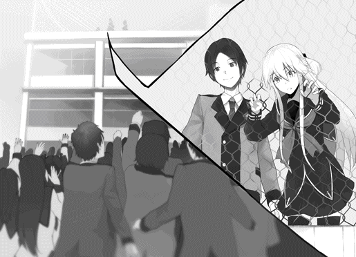
次々と上がる声を聞きながら、桜井とアイラは立ち尽くしていた。
やがてアイラがぽつりとつぶやく。
「これも......桜井クンがしてくれたの......？」
うなずこうとしてから、首を振って否定した。
「俺は本郷部長に、先輩に学校を辞めてほしくないと思っている人を集めてもらっただけです」
こんなに集まるなんて思ってなかったし、アイラに呼びかけてほしいと頼んだわけでもなかった。
それなのに、集まった生徒たちは、次々にアイラへと呼びかけていた。
「先輩、これってすごいことだと思いませんか。こんなにもたくさんの人が先輩のことを心配してるんですよ」
鼻をすすり、こみ上げてくる涙をこらえた。
「ひとりよりも二人のほうが学校は楽しいです。二人で分かち合えば喜びは倍に、悲しみは半分にっていうじゃないですか。百人なら百倍、悲しみなんて一％ですよ。
先輩はすごいから、きっとなんでもできると思います。でも、だからってなんでもひとりでやろうなんてしないでください。俺たちにも手伝わせてください。昨日がつまらないっていうのなら、俺たちで面白くします。これでもまだ足りないのなら、もっともっと面白くしてみせます。俺ひとりでは無理だったとしても、俺たちでならなんとかなります。だから、退学になってもいいだなんて、そんなこと思わないでください」
桜井はとなりに並ぶアイラに向き直った。
「だから俺と一緒に帰りましょう」
「――桜井クンは、それが言いたかっただけなの？」
要するにそういうことだ。
アイラには自覚がなかっただけで、多くの人に愛されている。それを伝えれば、退学になってもいいだなんて、思わなくなるだろう。
アイラの様子を見れば、その考えは正しかったはずだ。
「本当にそれだけなの？ それだけしか言ってくれないの？」
「......え？」
「アタシはね、ずっと桜井クンを待ってたんだよ。桜井クンなら、勇気を出して言ってくれるって、そう思ってずっと待ってんたんだよ」
「あ......」
昨日アイラに向かって放った暴言を思い出し、桜井はうつむいた。
「昨日は、その――」
「待って」
桜井の言葉をアイラがさえぎる。
「ごめんなさいなら聞きたくないわ。アタシが聞きたいのは、もっとステキな言葉なの」
ステキな言葉、と言われても、わかるようなわからないような。
混乱する桜井の瞳を、アイラの大きな瞳がのぞき込んできた。
「アタシのために、どうしてここまでしてくれたの......？」
「どうしてって......」
その理由を、桜井は深く考えたことがなかった。
だけど、考えたことがなかっただけで、考えてしまえばすぐにわかる。
それを「ステキな言葉」で表現したら、答えなんてわかりきっている。
「それは、その......俺が、先輩のことを......」
言葉がつっかえて出てこない。のどはカラカラに渇き、心臓は破れそうなほどに音を鳴らしている。
そんな桜井を、アイラはからかったりしなかった。桜井を見つめたまま、じっと次の言葉を待っている。
桜井だけを見てくれている。
「俺は、つまり先輩のことを......先輩のことが、す..................すぐに退学してもいいとか言わないでほしいんです！」
アイラは動かなかった。
動かないまま、すとんと表情が落ちたように、まっさらな瞳で桜井を見ていた。
「だ、だって、こんなに楽しい学校なんて他にないですよ！ なのに先輩は、ドキドキしたいとか言って簡単に学校に来ちゃうし、それでなくても普段からろくでもないことばかりしてるから、一緒にいるこっちとしてはとにかく心配なんですよ！ 明日にも先輩がいなくなるかもしれないって思ったら、居ても立ってもいられないっていうか――」
もうなにがなんだかわからなかった。
ぐちゃぐちゃに混乱した頭で、とにかく必死に口を動かし続けた。自分でもよくわからないままなにかをごまかそうと、思うがままに言葉を吐き出し続けた。
やがて気の抜けるような音が響く。
目の前で、アイラがクスクスと笑っていた。
「......なにがそんなにおかしいんですか」
なんとなく機嫌が悪くなって、むすっとした言葉を吐いてしまう。
それでもアイラは笑いやめようとはしなかった。
「なんでもないわ。それでこそ桜井クンだなあって」
小さな声をこぼしながら、桜井の頭に手を乗せて、なでるようにゆっくりと動かす。
子供扱いするような仕草に、桜井は思わず振り払ってしまった。
「なんなんですか、さっきから！」
「別になんでもないわよ。桜井クンの言うように、ここより楽しいところなんてないんだろうなあって思ってただけ」
そう告げて、小さな笑みを口元に残したまま、ささやくように言った。
「だって、ここには桜井クンがいるもの」
その言葉には、誇張するような響きも、ウソをつくような固さもなかった。
目の前の桜井だけに向けられた言葉に、ドキリとしてしまうのを抑えられない。
「......どうせまた、そうやってからかってるんでしょう」
アイラは答えずに、静かな笑みを向けるだけだった。
「それじゃあもう帰りましょうか。また桜井クンが泣いちゃうものね」
「またってなんですか。泣いてなんかいませんよ」
「そんなこと言っても、目の下に涙の跡が残ってるわよ」
反射的に目をぬぐおうとして、跳ね上がった腕を意志の力で押さえ込んだ。
「そんな手にはもう引っかかりませんよ！」
「泣いてなかったら引っかかるはずがないと思うんだけどな」
ぐっ、ともれそうになる言葉をこらえる。アイラがニヤニヤと、だけど桜井の反応以上のなにかを楽しむように目を細めた。
「とにかく！ さっさとここから逃げますよ！」
強引に言い切ると、アイラの手をつかんで足早に出口へと向かった。これ以上アイラに口を開かせたら情けなくなる一方だ。無理やりにでも話の流れを変えるしかない。
アイラはなにも言わずに、黙ったまま桜井に手を引かれていた。
出口へと向かう桜井の足が、途中で止まる。
校舎へと続く扉が、内側からひとりでに開かれた。
「ようディベート部。ずいぶん楽しそうなことやっているみたいだな」
現れたのは、勝ち誇った笑みを見せる増岡だった。
「あれだけ大騒ぎをしておいてまさか本当に気づかれないと思うわけがないだろうからな、きっとお前たちではないのだろうと思っていたのだが。実に残念だ」
そう言っておきながら、実にうれしそうに顔を歪めている。
「ちょっと待ってください！」
桜井が叫んでも、増岡はニヤついた笑みを崩そうとはしなかった。
「待つとは、なにを待てばいいんだ？ 停学中であるにもかかわらず、体調が悪いとウソをついて学校に忍び込んだのは紛れもない事実だろう。停学より重い処分が下されるのは間違いない。無期停学か、退学か。しかし本人に反省の色がないとなれば、最も重い処分を下すしかないんだろうなあ」
一言一言をはっきりと、嬉々として言い聞かせてくる。桜井には言い返せなかった。
増岡の言い分に無理はなく、反論できないことを自分でもわかっているのだろう。わかった上で、自分が絶対的に有利な位置から桜井たちをいたぶって楽しんでいるのだ。
「ついでに言えば、不良行為を手助けした生徒や、温床となっていたディベート部にも処分を下すしかない。実に残念だ」
増岡が笑みを深める。
桜井は殴りかかりたい衝動を、かろうじてこらえていた。
反論ができないからといって、あきらめていい理由にはならない。殴って押さえつけて、その隙にアイラを逃がしたって、かわりに桜井が退学となってしまったらなんの意味があるだろう。
ようやくアイラを説得できたのだ。今さらこんなやつに負けるわけにはいかなかった。
とにかく時間を稼ぐしかない。口を開こうとした桜井の横を、アイラが通り抜けた。
「増岡先生、アタシは退学でもかまわないから、桜井クンとディベート部は見逃してくれませんか」
「先輩、なにを言って......!?」
桜井は驚いてアイラを見る。
アイラの顔には、邪な考えを秘めた表情も、ろくでもないことを考えている笑みもなかった。
「いいのよ桜井クン」
アイラは静かに答える。
「これ以上桜井クンに迷惑はかけられないから。アタシは自分勝手に生きてるって自覚はあるけど、だからって恥知らずじゃないわ。自分のケジメくらい、自分自身でつけられるもの」
「なにを言ってるんですか......？ なにかあったら俺たちを頼ってくださいって、言ったばかりじゃないですか......！」
アイラはもう答えなかった。目の前の増岡と向かいあう。
「それで増岡先生、答えはどうなのかしら」
「おいおい、なにを勝手なこと言ってんだ。そんな取引を受ける理由がどこにある」
増岡の下卑た言葉を、アイラは笑い声で受け止めた。
「あら、アタシは別にかまいませんよ。もう一度先生と議論を交わしても。停学のままで終わるか退学になるか、校長先生の前でもう一度試してみますか？」
増岡の顔に苦渋がにじむ。
事実を覆すことはできなくても、罪を軽くすることならば難しくない。しおらしい態度を取って、「愚かなことをしてしまったと反省しています......」などと声を震わせれば、何日か停学を延長するだけですませるのは可能だろう。
アイラになら、それができるはずなのに。
「先輩、どうして、そんな......っ！」
「大丈夫よ。退学になっても学校に来る方法はいくらでもあるわ。今のアタシみたいにね。そうでしょ？」
そうかもしれない。でも、桜井が言いたいのはそんなことじゃない。
どうして伝わらないのだろう。
アイラが、またしても手の届かないところに行ってしまおうとしている。それがイヤだからこんなことまでしでかしたというのに、またしても同じことが起きようとしている。それを止められないことがなによりも歯がゆいのに。
握りしめた拳をゆっくりとほどき、携帯を取り出した。
考えろ。考えるんだ。反撃の準備はもう整っている。あと一手を積み重ねるだけでいい。
「いいだろう」
増岡の声が響く。
「貴様なんかの提案を受け入れるのはしゃくだが、学生でもない者が学校に侵入すれば、今度は不法侵入だ。退学より重い処分を見てみるのも悪くない」
肩を揺らして暗い笑みを浮かべる。
桜井はきつく増岡をにらみつけた。それが今の桜井にできる精一杯の抵抗だった。
桜井の視線に増岡が気づく。
「ほう、どうした。なにか言いたいことがあるのか？」
桜井は奥歯をかみしめたまま答えなかった。
アイラの決意を踏みにじるような行為はできなかったし、不本意ながらも、増岡の提案は桜井にとって願い通りのものだったからだ。
「本当に、俺たちにも、ディベート部にも......手は出さないんですね......」
食いしばった歯の隙間から声を絞り出す。
前に立つアイラの背中が少しだけ揺れた気がした。
それを喜んでいる増岡が許せなかったし、悲しませている自分自身がなによりも許せなかった。
増岡が愉悦の表情で口を曲げる。
「約束しよう。九重崎にどのような処分が下ろうとも、貴様たちが一切なにも抵抗しなければ、貴様らにも、ディベート部にも、手は出さないでおいてやる」
ニタニタと、舐め回すような笑みを浮かべている。
「そうですか――」
桜井は、ため息をつくように声をこぼした。
「――それを聞いて、ようやく安心したよ」
「なんだと......？」
突然ぞんざいになった口調に、増岡が顔をしかめる。
こちらの発言とそれに対する反応を予想し、目的の言葉を引き出すのは、ディベートで相手の反論を予想するのとそう変わらない。
しかしだからといって、そんな簡単に上手くいくわけではない。読み誤ることも、予想外の反論を受けることもしょっちゅうだ。アイラとディベートをしていれば、そんな展開はいくらでもある。
だから、安心した、というのは、思わず出てしまった本音であった。
増岡がなにかを言うより先に、屋上の扉が再び開いた。
「そろそろ私の出番のようだな」
低く落ち着いた声を響かせて、本郷が現れた。手には分厚い紙束を持っている。
「なんだ貴様、今さらなんの用だ......？」
つぶやく増岡を無視して、本郷はまっすぐに桜井の前へと向かった。
「部長、集まりましたか？」
「問題ない。これがそうだ」
手にしていた紙束を差し出す。
「それがなんだと言うんだ！」
増岡が声を荒らげる。無視されたことに腹を立てたのかもしれない。
振り返った本郷は静かに、だが誇らしげに答えた。
「全校生徒の約五割にあたる四七八名による、九重崎愛良君の処分に対する抗議の署名だ」
「えっ......？」
アイラの口から声がもれる。桜井が手にしている紙を見つめた。
「皆に感謝したまえ。昼休みに連絡したら、自発的に集めてくれたよ。人望がなければこうはならなかっただろう」
元々本郷に頼んでいたのは、この署名を集めることだった。
校庭に集まることも、アイラに呼びかけることも、全部みんなが自発的にやってくれたことだ。
受け取った署名には、紙束以上の重さがある気がして、桜井はしばらくあふれそうになるものをこらえていた。
「だ、だからどうしたというんだ！」
増岡が怒鳴った。半狂乱の声だった。
「生徒が教師の決定に口を出す権利などない！ だいたい、そんなものなんかで――」
「そんなものなんかではない！」
叫んだのは本郷だった。
「貴様にはこの重みがわからないのか。これは生徒ひとりひとりが、九重崎愛良君を助けたいと願い集めた、彼らの確かな意志だ。それをないがしろにする権利など、それこそ一介の教師なんかにはない」
鋭利な声が静かに響く。増岡がひるんだように口をつぐんだ。
「心配いりませんよ増岡先生。俺たちは学校側の決定に口を出すつもりはありませんから」
桜井が言葉を挟む。
「ただ、これを職員会議に提出すれば、考えを変えてくれるかもしれませんけど」
もとよりそのための署名だ。アイラを説得し、増岡に見つかる前に逃げる。それは不可能と判断した桜井がなんとかひねり出した次善策だ。
増岡の顔が歪む。赤黒くなった醜悪な表情で桜井をにらみつけた。
「ならば貴様ら全員停学にして、ディベート部を廃部にしてやる！」
「でもさっき、反論しなければ手を出さないと約束しませんでしたか」
「知らないな。証拠もないのに適当なことを言うんじゃない」
増岡が醜悪な笑みのままで言い張る。証拠もない口約束なら、守る必要もない。言った言わないの水掛け論に持ち込んで、さっきの約束をなかったことにするつもりなのだろう。
まったく。この人は本当に――
「――単純すぎて面白くもない。たまには予想外の行動を取って俺を楽しませてくれよ」
思わず本音がこぼれてしまう。
増岡が目を剥いてなにかを怒鳴り散らした。勢いに任せた言葉のせいで、なにを言っているのか聞き取れない。
桜井はなにも言わずに、手にしたカバンを増岡のほうに向けていた。
屋上でのディベートを始めてからずっと、マイクのスイッチは入りっぱなしになっている。先ほどの会話も、増岡との口約束も、全部校内に放送されていた。全校生徒が証人だ。言い逃れはできないだろう。
それにしても、と桜井は思う。
「俺を楽しませてくれよ」だなんて、まるっきりアイラと同じ思考ではないか。いつのまに感化されてしまったのだろう。自分だけは平凡でいるつもりだったのだが、そう思っているのは桜井自身だけなのかもしれない。
「そのくらいでいいでしょう」
おだやかな声が響く。
屋上の扉を開けて入ってきたのは校長先生だった。あいかわらずの人の好さそうな顔で近づいてくる。
「それが例の署名ですね。ちょっと見せてもらってもいいですか？」
桜井はうなずいて、手の中の署名を手渡した。
校長先生は、ていねいな手つきで一枚ずつめくっていく。そのたびに目を細めながらうなずいていた。
「ここに来るあいだにも、何人もの生徒に呼び止められました。みんな言うことは同じでしたよ」
おだやかな声の中に温かさをにじませながら、校長先生は最後の一枚をめくり終えた。
「わかりました。これは大変なことですね。みんなの気持ちをないがしろにすることは、私なんかにはできないでしょう。ですが――」
少しだけ低くなった声で続ける。
「――停学処分を無視して学校に来てしまったのもまた事実です。それを無視することは、学校を預かる身として、許される行為ではありません」
声はおだやかなままなのに、その言葉には有無を言わせない響きがあった。
「そこで、九重崎さんは一週間の停学処分といたしましょう」
増岡が目の色を変えた。
「しかし校長先生――！」
「いいんですよ増岡先生。この件はこれで終わりです」
「ですが、これでは他の生徒に対する示しがつきません！ 例外を認めてしまえば、そこから規律は乱れていってしまいます！」
増岡の口から飛び出したのは、意外にもまともな正論だった。
もしかしたら、増岡は増岡なりに、この学校のことを考えていたのかもしれない。
「たしかに、生徒たちを厳しく指導し、間違いを正すのが私たち教職員の仕事です。ですが、時には優しく見守り、許すのもまた私たち教職員の仕事なのですよ」
落ち着いた声で増岡を諭す。それからアイラのほうを向いた。
「九重崎さん。学校というのは学ぶ場所です。学びというのは、知らなかったことを、知るべきことを、知ることです。それは授業で教えてくれることとは限らない。そうでしたでしょう？」
アイラはわずかに目をまたたかせ、それからニヤリと笑みを浮かべた。
「そうね。そうだったかもしれないわ」
「学校は楽しいですか？」
いつかと同じ問いに、アイラは迷わず答えた。
「ええ、とても楽しいわ」
校長先生が増岡を連れて行き、本郷も会議があるからと帰って行った。
屋上には桜井とアイラの二人だけが残される。
なんとなくこのまま帰ろうという雰囲気にならなくて残ったのだが、桜井も、アイラも、なにも言わなかった。
とてつもなく気まずい。気を紛らわそうとカバンの中のマイクを切ってみたりしたものの、そんなんで間がもつわけもなかった。
とにかくなにか会話をしなくては。焦るような思いに駆られて、桜井は思いついたことをとりあえず口にしてみた。
「あの、先輩はどうやって学校に来たんですか？ 誰も先輩の姿を見てなかったんですけど」
校内には千人弱の生徒がいる。その誰にも見つからないなんて、偶然というには奇跡的すぎる。
桜井には本気でわからなかったのだが、アイラは若干つまらなそうな表情になった。まるで「なんだそんなことなの」とでも言いたそうだ。
「誰にも見つからないためには、誰もいない時間に来ればいいだけじゃない」
「それは、そうかもしれませんけど」
しかし授業中に外を見てる生徒は多いし、見回りの先生もいる。誰もいない時間なんてないのではないか。
疑問が顔に出てたのか、アイラはクスクスと笑みを浮かべた。
「まだわからないの？ アタシは桜井クンが来るよりも、ずっと前からここにいたのよ」
「前って......まさか」
「そうよ。難しく考えるからいけないの。アタシは朝早くに来ただけよ」
本当に単純な答えにあぜんとしてしまう。
だけど、考えてみれば当たり前の方法だった。
「そんなに驚かなくてもいいじゃない。いくらアタシでも空は飛べないし、姿も消せないんだからね」
「そりゃそうですけど......」
なんとなく、アイラならやってしまいそうな気がしていたのだ。
「だけど、そうすると先輩はずっとここにいたんですか？」
アイラがうなずく。
朝の六時に来たとして、今は四時前だから――
「――十時間もずっとこんなところに......？ そこまでしてゾクゾクしたかったんですか......？」
それがアイラなのだとわかっていても、聞かずにはいられなかった。
アイラが少し困ったようにつぶやく。
「それもウソじゃないわ。でも、別の理由もあるの。言ったでしょう。アタシも桜井クンに言いたいことがいっぱいあるって」
そういえばディベート前にそんなことも言っていた。
「桜井クンが途中で帰っちゃったから、言いそびれたことがあるのよ」
「う......。あのときは、すみません」
勝手に怒って部屋から逃げ出してきたのだ。何度思い出しても情けなくなる。きっと怒られるのだろうと覚悟を固める桜井だったが、アイラは気にすることなく、にじり寄るように近づくと、声をささやかせた。
何度思い出しても情けなくなる。
「あのね、桜井クンがどうしてもっていうのなら――アタシは学校に来るのをガマンしてもいいのよ」
「..................え？」
桜井は耳を疑った。
あの先輩が、ガマンをする？
驚愕する桜井の表情を読み取ったのか、アイラがクスリと笑みをこぼした。
「そのかわり、ひとつだけ条件があるわ」
「......だと思いました」
アイラのことだから、きっとまたとんでもないことを言い出すのだろう。
身構える桜井に向けて、静かな微笑みが向けられた。
「あの家にずっとひとりだと飽きちゃうもの。でも、桜井クンが毎日電話をしてくれたら、がんばれる気がするのよね。それに、放課後毎日会いに来てくれたら、楽しいだろうなあ。甘ーいスイーツとか、ほしいなあ」
条件が三つになってますよ、なんてツッコミをするのも忘れて、桜井は呆然とつぶやいた。
「そんなこと、なんですか......？」
アイラが頬を膨らませる。
「女の子から毎日声を聞きたいって言われるのが、桜井クンにとっては『そんなこと』なの？」
「あ、いえ......」
アイラを止めるために桜井はここまで手を尽したのだ。それなのにアイラは、声が聞きたいと、たったそれだけを言う。
「でもまあ、許してあげるわ。アタシも桜井クンに謝らないといけないもの」
そう言って、アイラは頭を下げた。
「昨日はごめんね。アタシのことを心配してくれたのに、ずっとからかってばかりで本気にしなくて。桜井クンが怒るのも当然よね」
アイラが声を沈ませる。
「だから謝ろうって思ってたの。学校に来て、桜井クンに謝って、それで帰ろうって思ってたの」
そこまで告げてから、自嘲するような笑みを見せた。
「謝るだけなら、最初から電話でもすればいいのにって思ったでしょう？」
「あ、いえ......」
電源を切っていたことを思い出し、桜井は慌てた。
しかしアイラは足下を見つめるようにうつむく。
「でもね、怖かったの。電話するのが怖かったのに、学校には来れた。でも、桜井クンが登校してくる時間になると、やっぱり怖くなって。だから桜井クンが見つけてくれるのを待ってたの。いつまでたっても来てくれないから、勇人なんかに頼んでアタシがいるって噂まで流したんだよ」
「どうしてわざわざ勇人さんに......」
「本郷部長や橘ちゃんに頼んだら、すぐ桜井クンにばれちゃうじゃない。それは、ちょっとなんだか、怖かったっていうか」
どうりで噂があっても姿は見えなかったわけだ。
「あきれたよね？ それとも、女の子みたいでかわいい？」
桜井は、思わず苦笑してしまった。
その反応は意外だったのか、アイラが驚いたように桜井を見る。
「いえ、俺も同じなんですよ。先輩と会うのが怖かったんです」
「そうなの？」
「先輩に怒られるのが怖くて、携帯の電源を切ったままでした。それでも学校には来れたんです。もしかしたら先輩に会えるかもしれない、でも会うのが怖い。そんな情けないことをずっと思っていました。だから屋上にいるってわかっても、すぐには行けなかったんです」
アイラは今度こそ本当に驚いた目で桜井を見た。
それから、やがて笑い出した。
「ふふっ。アタシたちって本当にバカみたいね」
まったくその通りだと桜井も同意する。
わかってしまえば、なんでもない理由だった。
どんなに当たり前だと思っても、頭の中身は伝わらないし、心の声は聞こえない。最初から話し合っていれば、もっと単純な話だったのだろう。
勝手に妄想して、いろいろな人に頼み込んで、最後は学校全体まで巻き込んで、それでたどり着いたのはこんな答えだ。
本当にどうしようもないなと、桜井は心の中で嘆息した。
「先輩、せっかくだからもう一回ディベートをしませんか。テーマは『思いは言葉にしなければ伝わらない。是か否か』です」
アイラがニヤリと笑った。
「今のアタシたちにぴったりじゃない。肯定側は桜井クンでいいの？」
桜井はうなずき、アイラを見つめた。
本当はもっと早くに言うべきだったのだろう。
なのに、バカがバカなりに悩んで空回りした結果、こんなところにまで来てしまった。
どんなに悩もうが、ぶん殴られて死のうが、バカは治らないのだ。
だったらもう行くしかない。
桜井は深呼吸し、決意を固めて、それから言った。
「俺はアイラ先輩が好きです」
アイラが顔をはね上げるようにして桜井を見た。
「え、あ......なんで、そんな、いきなり......っ」
声を上ずらせて慌てるが、さすがにすぐに落ち着きを取り戻した。
「そ、そんなのとっくに知ってたわよ。こんなに簡単じゃディベートにならないわね」
髪をかきあげるしぐさで視線をそらす。その顔はなんだか赤いように見えた。
「本当ですか？」
「え、ええ。もちろんじゃない」
「でも俺は先輩の気持ちがわからないんです」
アイラの動きが止まった。きっと次の言葉を予想したのだろう。
「先輩の思いが俺に伝わっているかどうか教えてくれませんか」
アイラが恨めしそうに桜井をにらむ。
「アタシも言わないといけないの......？」
「ディベートですから」
アイラが「それディベートと関係ないじゃない！」とでも言いたそうな目で桜井をにらみつける。
やがて目を閉じると、すうはあと深呼吸を繰り返した。
「アタシはね、今までずっと、つまんない人生は無価値だと思ってた。そんなんじゃ、部屋に閉じこもってたあのころを取り戻せないと思ってた。でもね、もしかしたら違うのかもって、そう思ったの。
毎日がつまらなくてもいい。今日が楽しくなくてもかまわない。だって、会いたい人がいる。その理由だけで学校に来るのも、悪くないのかもしれないわ」
目を閉じたまま静かに語る。その様子はまるで、閉じた目の中に浮かぶ誰かに向けて話しているみたいだった。
「それは......誰なんですか」
思わずもれた問いかけに、アイラはふふっと笑みをこぼした。
「そんなにストレートに聞くのも桜井クンくらいよね」
「あ、すいません......。でも......」
アイラに、会いたい人がいる、なんて言われたら、気にならないはずがない。
「まあ、いいわ。だってディベートだものね」
イタズラっぽく笑う。その目は、まっすぐに、桜井だけを見つめていた。
「実を言うとね、アタシも昨日気がついたの。
でもね、本当はもっと前から気がついてた。初めてだったからわかるのに時間がかかっただけ。ほら、昨日も話したけど、アタシって昔は部屋に閉じこもっていたから、当たり前のことも知らなかったのよ。
もちろん聞いたことはあったし、憧れてもいた。でも、これがそうなんだってわからなかった。こんなにも苦しくて、辛くて、悲しいものなんだって思いもしなかった。いなくなって、会えなくなって、声も聞けなくなって、怖くてたまらなくなった。そうしたらもう、今すぐに会いたい、声を聞きたいって、そう思ったの。
それでやっとわかったわ――」
アイラはうつむいていた。
顔を隠したまま、桜井の腕を引いてかがめさせると、耳元でささやいた。
「――これがアタシの〝初恋〟なんだって」
甘くゆれる声が耳の奥に響いてくる。
どんな答えであっても、素直に受け入れようと思っていた。
最悪の想像もしたし、最高の結果だって予想していた。こう言おうかなとか、こう返したらカッコいいかなとか、何度もシミュレーションした。
でも、実際にアイラを目の前にすると。
腕をつかむ手が、アイラの声が、かすかに震えているのだと気がつくと。
浅はかな考えなんてすべて吹っ飛んで、桜井は棒立ちになってしまった。
なにを言えばいいのかわからず、ただ真っ白になった頭で、うつむいたアイラのうなじばかりを見つめていた。
その顔がやや上向き、桜井を見上げる。口元がにたりと微笑んでいた。
「うふっ。そんなにドキドキしてもらえたら、アタシまでうれしくなっちゃうわ」
「..................。先輩、それっ、ズルくないですか......！」
非難の言葉もかすれてしまう。アイラは深い笑みをたたえたままだった。
「もう、桜井クンったら。このアタシがやられっぱなしで黙っているわけないじゃない」
当たり前のように言われては、もはや言葉もなかった。
こんなときでもやっぱり、九重崎愛良は揺らぐことなく九重崎愛良なのだ。
「でもね、うれしかったのはそれだけじゃないのよ」
声を静かに響かせる。
「こんなにドキドキさせてくれるのは、桜井クンだけだもの」
「......ドキドキって、俺はなにも......」
アイラの真似みたいなことは、桜井にはしたくてもできない。
「ステキな言葉、聞かせてくれたじゃない」
にたりとした笑みはもう消えていた。そこにあるのは、はにかむような美しい笑みだった。
だけどアイラは、やわらかく微笑んだ。
思わず見とれてしまった桜井の頬を、アイラの手が優しく包む。
あたたかくて、なめらかで、せんさいな手のひらの感触に、桜井は全身が硬直して動けなくなってしまう。
「お礼をするの、二回目だね......」
アイラは目を閉じていた。
包んだ両手の真ん中に吸い寄せられるようにして顔を近づけ――
――こつん、とひたいを合わせた。
「ふふっ。そんなに顔を赤くして、いったいナニを期待していたの？」
目と鼻の先でアイラがからかうように笑っている。
もう何回目だとしても、こんな状況に慣れるわけがない。全身を硬直させたまま、それでもなんとか反論をしてみる。
「先輩こそ、顔が赤いですよ......」
吐息がかかるほどの距離で、アイラが唇を薄く開く。
「だって二人きりなんだよ......？ アタシがしてほしいこと、わかるでしょ......？」
からかっているんだ。そうだ。そうに決まっている。
言い聞かせても心臓の音は鳴り止まない。自分のなのだろうか。もしかしたらアイラのなのだろうか。そんなことばかりが気になって、アイラがなにを考えているかなんて、なにもわからない。
「......もうっ。いくら桜井クンでも、そろそろ気づいてくれたっていいじゃない」
焦れたように唇をとがらせる。
「アタシだって、女の子なんだからね」
その声はすねているようでいて、恥ずかしさをガマンするかのようにかすれていた。
「だから......たまには、桜井クンから......」
目を伏せて、口の中で小さくつぶやく。
桜井はもう考えるのをやめた。悩んだってわかるわけないのだ。
アイラを強く抱き寄せる。目の前の唇に、自分の唇を重ねた。
ふんわりとしたやわらかさは、なんだかいつかと同じような気がした。
「ふふっ。残念。ハズレよ」
アイラの指先が桜井の唇を押さえていた。
あまりにも酷い仕打ちに呆然と固まるあいだに、アイラがするりと抜け出した。
「そんなに急いだら台無しじゃない。二人きりになったらしてほしいこと。桜井クンならわかってくれると思ったのにな。アタシの思いは、言葉にしないと伝わらないのね」
残念そうな表情を作ってゆるやかに首を振る。
「言葉にしないとって......だったら教えてくれても......」
プライドもなにもなく、率直にたずねてしまう。アイラがイタズラっぽく微笑んだ。
「だって二度目だもの。こんなんじゃ足りないわ。もっと、もっと、ドキドキさせてくれないと、女の子はイヤなんだからね」
「......そんな女の子は先輩だけですよ......」
疲れた口調でつぶやいてしまう。
アイラは反論することなく、口元に手を当てたまま声を出さずに笑っていた。
その笑顔を見たときに思ってしまったのだ。
それは今までに何度も思っていて、これから先もきっと何度も思い続けるだろう。
なにしろ、アイラが楽しそうに笑っている、それだけで全部許してしまえるのだから。
「――ほんと、かわいいってズルいですよね」
しみじみとつぶやいてしまう。
アイラが、あら、と口を開いた。
「桜井クンったら、今ごろ気がついたの？」
照れる様子も見せずに堂々と口にできるのだから、勝てるはずがない。
なにも言い返せない桜井に向けて、アイラが言った。
「でもね、そんな桜井クンだから好きなんだよ」
あまりにもさらりと告げられたため、桜井はそのまま聞き流しそうになった。
慌てて顔を跳ね上げる。
「先輩、今のは、どっちの......っ」
アイラがニタリと笑うような、けれども透明に輝くような、誰よりも美しい笑みで手を差し伸べた。
「だから、これからもよろしくお願いします」
伸ばされた手を見て、アイラの顔を見て、結局この先輩は自分の問いかけにはなにひとつ答えてくれないんだなと、桜井は苦笑を浮かべながら、アイラの手を強く握り返した。
人生って退屈よね。
なにもしなければ、毎日は平凡に過ぎていくもの。
アタシは運命って言葉が嫌いだった。
つまらない家に生まれたら、一生つまらないままなんて、そんなの理不尽じゃない。なんのために生まれてきたのか、本当にわからなくなっちゃうわ。
アタシの未来はアタシが決める。あいつの言いなりになんかならないし、神様にも決めさせない。
でもね、もしかしたら違うのかもって、少しだけ思ったの。
どんな人生にもひとつくらいは、神様が用意したプレゼントがあるのかもしれない。
自分が作り損ねた人生を後付けで幸せにするような、こそくな奇跡を起こしたのかもしれない。
もしもそうなら、アタシはもうその贈り物を受け取ったんでしょうね。
だって、アタシはきっと、あなたに会うためにこの世界に生まれてきた。
そう思ってしまったんだもの。
もちろん桜井クンには、言ってあげないけどね。
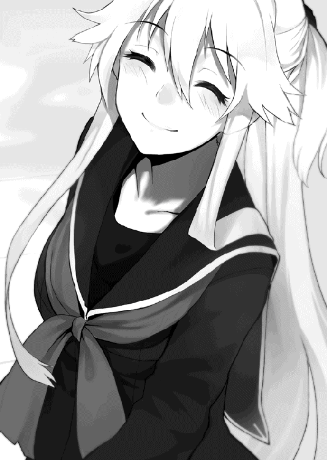
アイラと二人で下校する途中で、桜井は用事がひとつ残っていたと気づいた。
下駄箱にアイラを残して、自分は一度校舎に戻ろうとする。
「うん、わかった。おとなしくここで桜井クンを待ってるね。かいがいしい幼妻のように」
両手を顔の前で組んで、そっと目を伏せる。悪魔に祈りを捧げているのかと思ったが、どうやらアイラにとっての幼妻のポーズらしい。
ツッコミどころはたくさんあったが、ぐっとこらえて全部スルーした。
「別に、先に帰ってても――」
言葉の途中で、アイラが鋭い目つきで桜井をにらんだ。
「――いえ、すいません、なるべく早く戻ってきます」
アイラがニコリと笑って、小さく手を振る。
なんだか結局尻に敷かれてるなあと思ってから、それは出会ったときからだと思い直した。
情けなくて涙が出そうになるのは、まだ自分に男としてのプライドが残っている証なのだろうか。
桜井は駆け足で階段を上がり、放送室の前に立った。
室内の電気は消えていて、扉には鍵がかかっている。事前の取り決め通りに二回、一回とノックして、それからもう一度、二回ノックした。
内側から鍵を開ける音がする。
「悪い、ちょっと用があって遅れちまった」
中にいた橘が静かに首を振った。
桜井はアイラのように校内放送を乗っ取る方法を知らなかったため、マイクの音声をここで中継してもらっていたのだ。
「ありがとう橘。おかげで先輩の退学はなんとかなくなったよ」
かわりに停学期間が延びちまったけどな、と付け加える。
橘はもう一度首を振った。
「いえ、それでも桜井君はすごいと思います。私なんかでは、きっとなにもできなくて、また後悔するだけだったと思いますから。私は、本当になにも、大したことはできませんので......」
橘は謙遜しているが、放送室にだって増岡は来たはずである。
誰にも頼れずに、ひとりで真っ暗な部屋に閉じこもるのは、橘にとってはものすごく勇気が必要だったはずだ。
それをなんでもないと思ってしまうのは、橘の悪い癖だった。
小さな肩をつかんで強く言い聞かせる。
「なにもできなくなんかない。橘はがんばってくれた。昔の橘だったらこんなことできたと思うか？ できないだろう。なのにできるようになったんだ。それは十分に大したことじゃないか」
橘が桜井を見上げた。瞳をうるませ、それからうつむいた。
「いつも......桜井君は、優しいですね......」
「そんなことはない。本当のことを言ってるだけだ」
「......はい、ありがとうございます............」
「こちらこそありがとう。片づけを手伝うから、さっさと帰ろうぜ」
放送室も無断で使用しているのだ。教師に見つかれば、また面倒な問題になるだろう。橘に迷惑をかけるだけでなく、アイラを待たせたままにしてしまう。
急いで片づけをはじめようとする桜井を、弱々しい力がつかんで止めた。
「どうした？」
振り返ると、思い詰めた表情の橘が立っていた。
「あの、約束、しましたから。桜井君が勇気を出したら、私も勇気を出すと......」
かすれる声は、泣きそうなほどに震えていた。それでも、その目は、まっすぐに桜井を見つめていた。
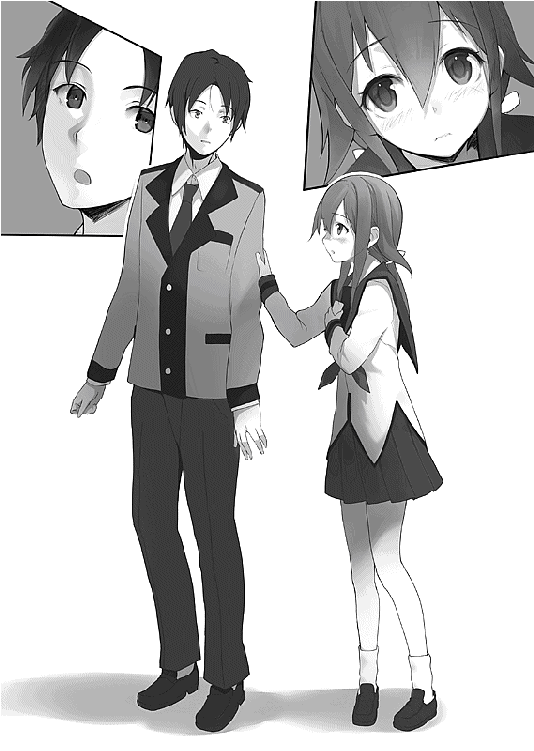
夕陽に染まる校舎の、明かりもついていない薄暗い部屋の中で、それでも桜井は、橘の顔が赤くなっているのに気がついた。
「あの、私と、もしよろしければ......その......」
なにかを必死に伝えようとして、しかし開いた口はそれ以上の言葉を出せないでいる。
あきらめるようにうつむき、そのたびに何度も顔を上げては懸命に口を動かすのに、言葉だけがどうしても出てこない。
がんばれと、なぜか桜井には言えなかった。
なにも言えないまま立ち尽くしていた。
もどかしい静寂の中で、やがて橘は携帯を取り出した。
開いた画面に向けて一生懸命になにかを打ち始める。
不意に桜井は、橘は知らないのだと気がついた。途中でマイクを切ったから、屋上での告白を聞いていないのだ。
桜井の携帯がメールの着信を告げる。
差出人は橘だった。
その橘は目の前にいて、送信したばかりの携帯を祈るように握りしめている。
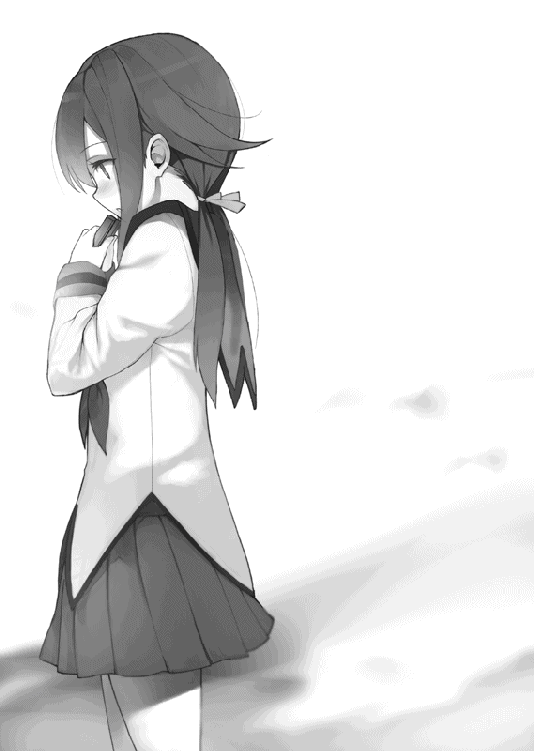
桜井の胸の内に、静かになにかが忍び寄ってきた。
かろうじて保っていた危ういバランスを一撃で崩してしまうような、そんな不安がわきあがってくる。
ぎこちない手でメールを開く。
件名もない一行の文が表示された。
たったそれだけで、つかんだ携帯を取り落としそうになる。なにかが崩れていく音が響き、後戻りのできないどこかへと落ちていく。
呆然とした桜井の目には、いつまでも同じ画面が表示されていた。
それは簡潔で、だからこそ決定的な、十五文字の文章だった。
『私と付き合っていただけませんか』
〈了〉
ごめんなさい。
本当に申し訳ありません。
調子に乗ってマジすいませんでした！
......よし、これだけ謝っておけば大丈夫だろ。
お久しぶりです、うれま庄司です。
少し間が空いてしまいましたが、無事に二巻を出すことができました。これも応援してくれた皆様のおかげです。厚く御礼申し上げます。
まあ、無事、といえるかどうかはまだわかりませんが。
さすがに今回は訴えられないと思うのですがどうでしょう。ダ○ヤ○ン○社から怒られても文句言えないしなあ。
むしろ関係各社のほうが怖いのか......？
三巻、出せるといいなあ......。
今回も本書を出すにあたって多くの方にご迷惑をおかけしました。
特に編集のＭさん。長々と締め切りを破ってごめんなさい。何度も修正して申し訳ありません。で、でも、最初の締め切りは守りましたので、それでなんとか......。
イラストを描いてくれたしらびさん。いつもいつも素晴らしいイラストをありがとうございます。新キャラの動かし方に悩んでいたのですが、ラフ画をいただいた瞬間にイメージが固まりました。本当にありがとうございます。
それから前回に続き下読みをしてくれた友人たちもありがとう。この借りは必ず肉で返すからな！
そして、この本を手に取ってくれた皆様に。
読んでいただき、楽しんでいただけたのならば、これに勝る喜びはありません。
応援の手紙やメールを下さった方にも感謝いたします。なかなか返事はできませんが、すべて大切に読ませていただきました。ほんと、読むだけですっげーうれしくなるんですよ。頑張って書いてよかったなあって、心から思いました。
なお、今回もまたディベートに関して若干の演出を加えております。ディベート関係者から見たらおかしな点があると思いますが、鼻で笑ってご容赦願えればと思います。
ではまたお会いできますことを祈って。
うれま庄司
著●
うれま庄司（うれま しょうじ）
横浜在住の面倒くさがり屋。よく「うれまさんは変態だ」とか言われますが、そんなわけありません。本書を読んでもらってもわかる通り、どこにでもいる一般人です。本当です。
イラスト●
しらび
埼玉の片隅で、絵を描きながらひっそりと生活してます。この度は手に取っていただきありがとうございます。挿絵を描くのは初めてなので色々大変でしたが、気に入っていただけると嬉しいです。
〈装丁〉大橋 勉（株式会社ケイズ）
〈編集担当〉前田眞宜
彼女を言い負かすのはたぶん無理 ２
著 者：うれま庄司
イラスト：しらび
 Shoji Urema & Shirabi
Shoji Urema & Shirabi
この電子書籍は『彼女を言い負かすのはたぶん無理 ２』二〇一一年六月二十四日第一版第一刷発行を底本としています。
電子書籍版
本書の無断複写（コピー）は著作権法上での例外を除き、禁じられています。